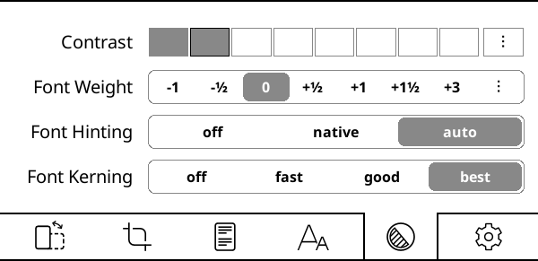
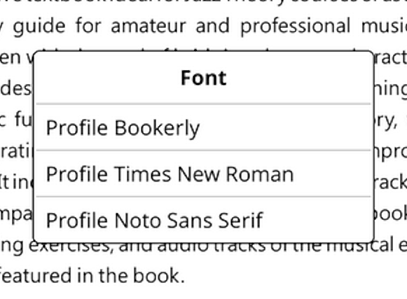
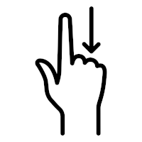

நீங்கள் தற்போது ஆங்கிலம் (முதன்மை) பதிப்பைப் படிக்கிறீர்கள் கொரியடர் பயனர் கையேடு . தன்னார்வலர்கள் இந்த வழிகாட்டியை பிற மொழிகளுக்கு மொழிபெயர்க்கின்றனர். ஒட்டுமொத்த மொழிபெயர்ப்பு நிலை இல் நீங்கள் காணக்கூடிய பல மொழிபெயர்ப்புகள் முன்னேற்றத்தில் உள்ளன. ஆனால் பயன்பாட்டு காரணங்களுக்காக 50%க்கு மேல் க்கு மேல் மொழிபெயர்க்கப்பட்ட மொழிகளுடன் மட்டுமே நாங்கள் இணைக்கிறோம்.
80% க்கும் அதிகமான மொழிபெயர்க்கப்பட்டுள்ளது
- 🇨🇳 சீன (எளிமைப்படுத்தப்பட்ட ஆன் ச்கிரிப்ட்)
- கொரிய
- 🇷🇸 செர்பியன்
- 🇸🇰 ச்லோவாக்
- தமிழ்
- 🇺🇦 உக்ரேனிய
50% முதல் 80% மொழிபெயர்க்கப்பட்டுள்ளது
தற்போது மொழிபெயர்க்கப்பட்டுள்ள அனைத்து மொழிகளையும் காணவும், பயனர் வழிகாட்டியின் மொழிபெயர்ப்பு முயற்சிகளுக்கு பங்களிக்கவும், தயவுசெய்து வலைபெயர்ப்பு மொழிபெயர்ப்பு பக்கம் ஐப் பார்வையிடவும்.
பயனர் வழிகாட்டியின் ஒட்டுமொத்த மொழிபெயர்ப்பு நிலை

இந்த வழிகாட்டி முதன்மையாக வண்ணத் திரைகளுக்காக வடிவமைக்கப்பட்டுள்ளது. நீங்கள் முதன்முதலில் இதைப் பயன்படுத்துகிறீர்கள் என்றால், இதை கணினி, டேப்லெட் அல்லது மொபைலில் படிக்க பரிந்துரைக்கிறோம். ஏனென்றால், வண்ணத்தில் முன்னிலைப்படுத்தப்பட்ட பயனர் இடைமுக கூறுகளைப் பார்ப்பது கொரியாடரை எவ்வாறு பயன்படுத்துவது என்பதைக் கற்றுக் கொள்ளும்போது உங்கள் வாழ்க்கையை எளிதாக்கும். நிச்சயமாக இதை உங்கள் ஈ-மை சாதனத்திலும் படிக்கலாம், ஆனால் பட்டறிவு உகந்ததாக இருக்காது.
ஒரு குறிப்பிட்ட தலைப்பு அல்லது முக்கிய சொல்லைக் கண்டுபிடிக்க உங்கள் உலாவியின் தேடல் செயல்பாட்டைப் பயன்படுத்தலாம் (பொதுவாக கட்டுப்பாடு + f ). இந்த பயனர் வழிகாட்டி தொடர்பான பரிந்துரை அல்லது கேள்வி உங்களிடம் இருந்தால், நீங்கள் இந்த அறிவிலிமையம் கலந்துரையாடல் நூல் க்கு எழுதலாம்.
இந்த வழிகாட்டியில் உள்ள உரையின் பகுதிகள் அவற்றின் வகைகளின்படி வண்ண குறியிடப்படுகின்றன:
கொரியாடரின் பகுதிகள் (நீலம்) |
நிலை பட்டி, புத்தக வரைபடம்… |
பட்டியல் பாதைகள் (பச்சை) |
சிறந்த பட்டியல் /  / சிறப்பம்சமாக பாணி / சிறப்பம்சமாக பாணி |
வெளிப்புற பயன்பாடுகள் (ஊதா) |
காலிபர், ரீடர்வேச், கோஇக்லைட்ச் ... |
உங்களுக்கு அறிவிக்க அல்லது எச்சரிக்க வழிகாட்டி முழுவதும் எங்களிடம் வெவ்வேறு பெட்டிகளும் உள்ளன:
கொரியடர் உலகெங்கிலும் உள்ள தன்னார்வலர்களால் உருவாக்கப்பட்டு ஆதரிக்கப்படுகிறது. இந்த திட்டத்தின் ஒரு பகுதியாக நீங்கள் இருக்க முடியும்:
- பிழைகளை சரிசெய்தல் மற்றும் புதிய அம்சங்களை செயல்படுத்துதல்
- நிரலை உங்கள் மொழியில் மொழிபெயர்ப்பது அல்லது ஏற்கனவே உள்ள மொழிபெயர்ப்பை மேம்படுத்துதல்
- மன்றங்களில் அல்லது அறிவிலிமையம் பிரச்சினைகள் மற்றும் விவாதங்களில் உங்கள் அறிவைக் கொண்டு மற்றவர்களுக்கு உதவுதல்
ஐ சரிபார்க்கவும் இணைப்புகளுக்கு பகுதியை அடையவும்.
வழிகாட்டி கடைசி புதுப்பிப்பு: 2025-03-25
- கொரியாடருடன் நீங்கள் என்ன செய்ய முடியும்?
- அடிப்படை பயன்பாட்டு செய்தி
- புத்தகங்களை உங்கள் வாசகருக்கு மாற்றுவது
- மண்டலங்களைத் தட்டவும்
- உரை தோற்றத்தை மாற்றுதல்
- விசைப்பலகை பயன்பாடு மற்றும் உதவிக்குறிப்புகள்
- ஆட்டோ அரவணைப்பு மற்றும் இரவு முறை
- பயனர் இடைமுகத்தைக் கற்றல்
- திரை வாசிப்பு
- காட்டி சின்னங்கள் 
- நிலை பட்டி
- சிறந்த பட்டியல் உருப்படிகள்
- கீழே பட்டியல் உருப்படிகள்
- பயனர் இடைமுக உதவிக்குறிப்புகள் 
- கீழே பட்டியல் உருப்படிகள்
- உங்கள் புத்தகத்தின் வழியாக நகரும்
- ச்கிம் விட்செட் <ச்பான் கிளாச் = "மைக்ரான்"> 
- புத்தக வரைபடம்
- பக்க உலாவி
- உள்ளடக்க கருவிகளின் அட்டவணை
- பிரிவுகளைத் தவிர்த்து: தனிப்பயன் மறைக்கப்பட்ட பாய்ச்சல்கள்
- உரை தோற்றத்தைத் தனிப்பயனாக்குதல்
- ஒரு சிறிய திரையில் பெரிய PDF களைப் படித்தல்
- PDF குறிப்பிட்ட கீழ் பட்டியல் உருப்படிகள்
- சிறப்பம்சங்களை PDF  இல் சேமிக்கிறது
- OCR (ஆப்டிகல் எழுத்து அங்கீகாரம்)
- பக்க புதுப்பிப்பு இடைவெளியை சரிசெய்தல்
- குழு சூம்
- அடுத்த கோப்பிற்கு செல்லவும்
- வாசகருக்கு மங்காவை மேம்படுத்துதல்
- பிற மங்கா உதவிக்குறிப்புகள்
- உங்கள் நூலகத்தை நிர்வகித்தல்
- உலாவி பயன்பாடு கோப்பு
- பிற கோப்பு வகைகளைப் பார்க்கிறது
- சேகரிப்புகள் 
- உங்கள் வாசகருக்கான EPUB/PDF ஆவணங்களை மேம்படுத்துதல்
- புத்தக மேனிலை தரவு சேமிப்பு விருப்பங்கள் 
- சைகைகள் மற்றும் விசைப்பலகை குறுக்குவழிகள்
- விரைவான பட்டியல் மற்றும் சுயவிவரங்கள்
- செருகுநிரல்கள் மற்றும் பயனர் திட்டுகள்
- உதவிக்குறிப்புகள்
- சரிசெய்தல்
- எங்களை அடையுங்கள்
அதன் மிகச்சிறிய தோற்றம் இருந்தபோதிலும், கொரியடர் மிகவும் சக்திவாய்ந்த மற்றும் தனிப்பயனாக்கக்கூடிய பயன்பாடாகும். இந்த பிரிவு உள்ளடக்கங்களின் அட்டவணை போன்றது, இது எப்படி நோக்குநிலை கொண்டது. எனவே நீங்கள் ஒரு புதிய பயனராக இருந்தால், இது தொடங்க சிறந்த இடம். இந்த  குறிப்பிடப்பட்ட பிரிவுகளுக்குச் செல்ல இணைப்புகள் ஆகியவற்றைப் பின்பற்றுவதன் மூலம் அதை எப்படிச் செய்வது என்பதை இங்கே நீங்கள் படிக்கலாம்.
- யூ.எச்.பி வெகுசன சேமிப்பு துணை சாதனங்களை ஆதரிப்பதற்கான பயன்முறை 
- முகில் ச்டோரேச் (<ச்பான் கிளாச் = "வெளிப்புற"> டிராப்பாக்ச் /எஃப்.டி.பி/வெப்டாவ்) பொருத்தமான கணக்குகளுடன் 
- கொரியடர் ஒரு பாஓடு சேவையகம் ஆக செயல்பட முடியும், எனவே கோப்புகளை நேரடியாக மாற்ற ஒரு SFTP பயன்பாடு அல்லது உங்கள் கோப்பு மேலாளரைப் பயன்படுத்தலாம் 
- <ச்பான் வகுப்பு = "வெளிப்புற"> காலிபர் சொருகி மூலம் உங்கள் காலிபர் நூலகத்திலிருந்து நேரடியாக உங்கள் கொரியடர் சாதனங்களுக்கு வைஃபை 
- நியூச் டவுன்லோடர் சொருகி உடன் உங்கள் சாதனத்திற்கு ஆர்.எச்.எச் மற்றும் ஆட்டம் செய்தி உள்ளீடுகளை உஉகுமொ கோப்புகள்  என பதிவிறக்கம் செய்யலாம்
- வாலபாக் சொருகி மூலம் உங்கள் வாலபாக் கணக்கிலிருந்து கட்டுரைகளை மீட்டெடுக்கலாம் (<ச்பான் கிளாச் = "வெளிப்புற"> பாக்கெட் போன்ற ஒரு சேவையக அடிப்படையிலான வாசிப்பு-லேட்டர் சேவை) 
- எழுத்துருக்களை மாற்றவும் (உங்கள் சொந்த உட்பட), எழுத்துரு அளவு, மாறுபாடு, துணிவு, கெர்னிங், சொல் இடைவெளி, சொல் விரிவாக்கம், உரை சீரமைப்பு, வரி இடைவெளி, நெடுவரிசை தளவமைப்பு, விளிம்புகள் ...
- சேர்க்கப்பட்ட சக்திவாய்ந்த பாணி மாற்றங்கள் ஐப் பயன்படுத்தவும் அல்லது உங்கள் புத்தகங்கள் எவ்வாறு துல்லியமாக வழங்கப்படுகின்றன என்பதை மாற்ற உங்கள் சொந்தவற்றை எழுதுங்கள்
- இரவு பயன்முறை கைமுறையாக அல்லது தானாக  க்கான திரை வண்ணங்கள் தலைகீழ் வண்ணங்கள்
- உங்கள் முன் ஒளி வண்ண அரவணைப்பை தானாகவே சரிசெய்யவும் 
- Highlight உரை with different styles and colors, place bookmarks 
- கல்வி/நீண்ட சிறப்பம்சங்களுக்கான இரண்டு-தட்டு பயன்முறை 
- டயக்ரிடிக் மாற்றியமைப்பாளர்கள்  உள்ளிட்ட தனிப்பயனாக்கக்கூடிய விசைப்பலகையைப் பயன்படுத்தி குறிப்புகளைச் சேர்க்கவும்
- திரை சாட்களை  எடுத்துக் கொள்ளுங்கள்
- வாசிப்பு முன்னேற்றம் , நேர வரம்பு மற்றும் காலண்டர் காட்சிகள் உள்ளிட்ட உங்கள் வாசிப்பு புள்ளிவிவரங்களைக் கண்காணிக்கவும்
- ஏற்றுமதி your notes and highlights பெறுநர் your device அச் text, markdown, HTML, சாதொபொகு or Kindle clippings வடிவம் 
- Synchronize பெறுநர் online சேவைகள் like Joplin, Readwise, Memos, Flomo and XMNote 
- சக்திவாய்ந்த கோப்பு உலாவி அங்கு நீங்கள் நகலெடுக்கலாம், நகர்த்தலாம், மறுபெயரிடலாம், உருவாக்கலாம், நீக்கலாம், கோப்புகள் மற்றும் கோப்புறைகளை செய்யலாம் மற்றும் மொத்த செயல்பாடுகளைச் செய்யலாம் 
- பல விரிவான மற்றும் மொசைக் காட்சிகள்  உடன் உங்கள் நூலகத்தைப் பார்க்கவும்
- விரைவான அணுகலுக்காக உங்கள் <ச்பான் கிளாச் = "யுஐ"> பிடித்தவை இல் உங்கள் புத்தகங்களைச் சேர்க்கவும் அல்லது உங்கள் சொந்த <ச்பான் கிளாச் = "யுஐ"> சேகரிப்புகள் ஐ வரிசைப்படுத்துதல் மற்றும் வடிகட்டுதல்
- ச்கிம் விட்செட் பக்கங்கள், அத்தியாயங்கள், புக்மார்க்கு இடையில் விரைவாக குதிக்க 
- தனித்துவமான புத்தக வரைபடம் உங்கள் எல்லா குறிப்புகள் மற்றும் சிறப்பம்சங்கள் உட்பட உங்கள் புத்தகத்தின் பறவையின் கண் வரைபடத்தைக் காண 
- பக்க உலாவி ஒரு திரைப்பட ரீல்  போன்ற பக்கங்களை நகர்த்துவதற்கு 
- புக்மார்க்குகள் உலாவி உங்கள் சிறப்பம்சங்களையும் குறிப்புகளையும் எளிதாக உலாவ
- உங்கள் புத்தகத்துடன் வரும் 
- பின் இணைப்பு, குறியீட்டு, குறிப்புகள் போன்ற உங்கள் புத்தகத்தின் சில பகுதிகளை மறைத்து விலக்குங்கள். இன்னும் துல்லியமான பக்க எண்ணிக்கைகளுக்கு 
- 200+ செயல்களுடன் சக்திவாய்ந்த சைகை அமைப்பு கொரியாடரின் ஒவ்வொரு அம்சத்தையும் ஒரு குழாய் அல்லது ச்வைப் மூலம் கட்டுப்படுத்த உங்களை அனுமதிக்கிறது 
- உங்களிடம் ஒரு விசைப்பலகை இருந்தால் (உள், கம்பி அல்லது புளூடூத்) இந்த செயல்களுக்கு விசைப்பலகை குறுக்குவழிகளையும் ஒதுக்கலாம் 
- Or create your own menus with your favorite செயல்கள் with Quick Menu and access them with a tap or swipe 
- கொரியாடரின் ஒவ்வொரு அம்சத்தையும் கட்டுப்படுத்த சுயவிவரங்கள் ஐ உருவாக்கவும், செயல்களை தானியங்குபடுத்தவும் 
- 130 க்கும் மேற்பட்ட மொழிகளுக்கு இடையில் முழு பக்கத்தையும் ஒரே நேரத்தில் மொழிபெயர்க்கவும்
- உங்கள் புக்மார்க்குகள், சிறப்பம்சங்கள் மற்றும் குறிப்புகளில் தேடுங்கள்
- <ச்பான் வகுப்பு = "வெளிப்புற"> விக்கிபீடியா அல்லது நிறுவப்பட்ட அகராதிகளில் தேடல் உரை மற்றும் நீண்ட தட்டினால் மொழிபெயர்க்கவும்
- 130 க்கும் மேற்பட்ட மொழிகளுக்கு இடையில் முழு பக்கத்தையும் ஒரே நேரத்தில் மொழிபெயர்க்கவும்
- எங்கள் பவர்ஃபுல் சொருகி அமைப்பு மூலம், நீங்கள் <ச்பான் கிளாச் = "வெளிப்புற"> சாட்ச்ட் (சொருகி நிறுவிய பின்)  உடன் உரையை விவாதிக்கலாம்
- கொரியடர் தன்னை புதுப்பிக்க முடியும் 
- ஆழ்ந்த வெளியேற்றத்தைத் தடுக்க/அதிக கட்டணம் வசூலிக்க பேட்டரி சார்ச் லிமிட் அலாரங்கள்
- வெவ்வேறு வாசிப்பு நிபந்தனைகளுக்கு உங்கள் பக்க புதுப்பிப்பு இடைவெளிகளை அமைக்கவும்
- சீரற்ற படங்கள், புத்தக அட்டை, வாசிப்பு, முன்னேற்றம் போன்ற பல விருப்பங்களிலிருந்து உங்கள் சொந்த ச்கிரீன்சேவர் ஐ அமைக்கவும்.
- பேட்டரியை அமைக்கவும் ஆழமான வெளியேற்றத்தைத் தடுக்க/அதிக கட்டணம்/அதிக கட்டணம் = "#l2-devicetips" வகுப்பு = "interning"> 
- நினைவக பயன்பாட்டு எச்சரிக்கையை அமைக்கவும் (சிறிய நினைவகத்திற்கான சாதனங்களுக்கு பயனுள்ளதாக இருக்கும்) மற்றும் இந்த வரம்பை அடைந்ததும் விருப்பமாக கொரியாடரை மறுதொடக்கம் செய்யுங்கள்
- படிக்க வெவ்வேறு சூம் வகைகள் மற்றும் பக்க ஓட்டம் திசைகள் பல நெடுவரிசை ஆவணங்கள்
- ஆட்டோ ச்ட்ரைன் சாய்ந்த ஆவணங்கள்
- OCR ஐ உரை அடுக்குகள் இல்லாத ஆவணங்களுக்கு, பழைய புத்தகங்களை வருடு செய்யப்பட்ட பழைய புத்தகங்கள் 
- படிக்க வெவ்வேறு சூம் வகைகள் மற்றும் பக்க ஓட்டம் திசைகள் பல-நெடுவரிசை ஆவணங்கள் விஞ்ஞான கட்டுரைகளைப் போல எளிதாக 
- பழைய புத்தகங்களை வருடு செய்யப்பட்ட பழைய புத்தகங்கள்  போன்ற ஆட்டோ ச்ட்ரைன் சாய்ந்த ஆவணங்கள்
- சேமி your highlights directly into PDFs which allows you பெறுநர் see them without KOReader 
- Special Panel zoom feature க்கு படித்தல் மன்கச் 
- பேய் மற்றும் வேகத்திற்கு இடையில் சரியாக சமநிலைப்படுத்துவதற்கான சரிசெய்யக்கூடிய திரை புதுப்பிப்பு அமைப்புகள் 
- உங்கள் சொந்த சிஎச்எச் பாணி மாற்றங்கள் புத்தகங்களுக்கு 
- User patches மண்டலம் which allows you பெறுநர் change the வயிரம் behaviors of KOReader 
- உரை மற்றும் பிற சாதனங்களுக்கான இணைப்புகளைப் பகிர உங்கள் கிளிப்போர்டிலிருந்து QR குறியீடு ஐ உருவாக்கவும்
- ஒரு EPUB ஆவணத்தின் உஉகுமொ மூலத்தைக் காண்க
- உங்கள் சாதனத்தில் உரை கோப்புகளை உருவாக்கி திருத்தவும்
- ஒரு முனைய முன்மாதிரியைத் திறந்து உங்கள் சாதனத்தில் கட்டளைகளை இயக்கவும்
- உங்கள் CPU, நினைவகம் மற்றும் பேட்டரி பயன்பாட்டு புள்ளிவிவரங்களைப் பார்க்கவும்
கொரியடர் பி.டி.எஃப், எபப், டி.சே.வி. இது சிப் காப்பகங்களையும் திறந்து படக் கோப்புகளைக் காட்டலாம்.
உங்கள் ஆவணங்களை உங்கள் சாதனத்திற்கு மாற்ற பல வழிகள் உள்ளன. மாற்றப்பட்ட ஆவணங்களை குறியீட்டுக்கு நீங்கள் கொரியாடரை மறுதொடக்கம் செய்ய வேண்டியிருக்கலாம் (அல்லது உங்களிடம் பாக்கெட் புக்/ஆண்ட்ராய்டு இருந்தால் கோப்பகத்தை புதுப்பிக்கவும்).
உள்ளமைக்கப்பட்ட வாசகர் பயன்பாட்டைப் போலவே கோப்புகளையும் மாற்றுவதோடு கூடுதலாக, உங்கள் சாதனத்தைப் பொறுத்து பிற விருப்பங்கள் கிடைக்கின்றன:
- கொரியாடருக்குள் யூ.எச்.பி வெகுசன சேமிப்பு முறை: இந்த பயன்முறை கோபோ மற்றும் சில செர்வாண்டச் சாதனங்களுக்கு கிடைக்கிறது.
- முகில் ச்டோரேச் (<ச்பான் கிளாச் = "வெளிப்புற"> டிராப்பாக்ச் /ftp/webdav): இந்த செயல்பாட்டைப் பயன்படுத்த நீங்கள் கீழே காட்டப்பட்டுள்ள பட்டியல் வழியாக முகில் ச்டோரேச் சேவையகத்திற்கான கணக்குகளைச் சேர்க்க வேண்டும். கணக்குகளைச் சேர்க்கும்போது பட்டியலில் உள்ள <ச்பான் கிளாச் = "யுஐ"> செய்தி பொத்தான்கள் வழியாக செயல்முறை விளக்கப்பட்டுள்ளது:
சிறந்த பட்டியல் (கோப்பு உலாவியில்) /
 / முகில் ச்டோரேச்
/ முகில் ச்டோரேச் - SSH/SFTP அணுகல்: கொரியடர் ஒரு பாஓடு சேவையகம் போல செயல்படலாம், இது கோப்புகளை மாற்றுவதற்கு ஒரு கணினியிலிருந்து அணுகலாம் (கோபோ, கின்டெல், செர்வாண்டசில் கிடைக்கிறது). உங்கள் இயக்க முறைமை ஆதரித்தால் நீங்கள் ஒரு SFTP பயன்பாட்டைப் பயன்படுத்தலாம் (<ச்பான் கிளாச் = "வெளிப்புற"> ஃபைல்சில்லா ) அல்லது உங்கள் கோப்பு மேலாளர் வழியாக அணுகலாம். எங்கள் விக்கி ஐ எவ்வாறு-எப்படி என்பதை சரிபார்க்கவும்.
- காலிபர் பரிமாற்றம்: <ச்பான் கிளாச் = "வெளிப்புற"> காலிபர் சொருகி உடன் உங்கள் காலிபர் நூலகத்திலிருந்து ஆவணங்களை நேரடியாக உங்கள் கொரியடர் சாதனங்களுக்கு வைஃபை இணைப்பு வழியாக அனுப்பலாம். எங்கள் விக்கி ஐ எவ்வாறு சரிபார்க்கவும்.
- செய்தி பதிவிறக்குபவர்: இந்த சொருகி மூலம் நீங்கள் rss மற்றும் அணு செய்தி உள்ளீடுகளை உஉகுமொ கோப்புகளாக பதிவிறக்கம் செய்யலாம். விக்கி எப்படி என்பதை சரிபார்க்கவும்.
- வாலபாக்: இந்த சொருகி மூலம் <ச்பான் வகுப்பு = "வெளிப்புற"> வாலபாக் இலிருந்து கட்டுரைகளை மீட்டெடுக்கலாம், இது சேவையக அடிப்படையிலான வாசிப்பு-ஐடி-லேட்டர் சேவையை பாக்கெட் போன்றவை. விக்கி பக்கம் சரிபார்க்கவும்.
முன்னறிவிப்பு கடவுச்சொல் இல்லாமல் பாஓடு அம்சத்தைப் பயன்படுத்த முடிவு செய்தால் கவனமாக இருங்கள், ஏனெனில் இது உங்கள் சாதனத்திற்கு திறந்த அணுகலை அனுமதிக்கிறது. ஆனால் நீங்கள் ஒரு உள்ளக வைஃபை பயன்படுத்துகிறீர்கள் மற்றும் உங்கள் சாதன வைஃபை சிறிது நேரம் இயக்கினால், இந்த இடர் மிகக் குறைவு.
உங்கள் புத்தகங்களை அணுக பின்வரும் முறைகள் உள்ளன:
- கோப்பு உலாவி - அர்ப்பணிக்கப்பட்ட பிரிவு இங்கே: கோப்பு உலாவி பயன்பாடு
- பிடித்தவை - உங்கள் புத்தகங்களை கோப்பு உலாவி இல் நீண்ட நேரம் அழுத்துவதன் மூலம் நீங்கள் சேர்க்கக்கூடிய பட்டியல்
- வரலாறு - நீங்கள் திறந்த புத்தகங்களின் பட்டியல்
- சேகரிப்புகள் - நீங்கள் உருவாக்கிய தனிப்பயனாக்கப்பட்ட புத்தக பட்டியல்கள். அர்ப்பணிக்கப்பட்ட பிரிவு இங்கே: சேகரிப்புகள்
இந்த திரைகளில் எத்தனை உருப்படிகள் தெரியும் என்பதை நீங்கள் மாற்ற விரும்பினால், இங்கே பாருங்கள்:
 / காட்சி முறை
/ காட்சி роорпБро▒рпИроЗроирпНрод ஒவ்வொரு உரையாடல்களுக்கும் நீங்கள் சைகைகளை ஒதுக்கலாம். எடுத்துக்காட்டாக, ஒரு புத்தகத்தைப் படிக்கும்போது, உங்கள் <ச்பான் கிளாச் = "யுஐ"> வரலாறு அல்லது <ச்பான் கிளாச் = "யுஐ"> பிடித்தவை ஐ ஒரு சைகையுடன் அணுகலாம் மற்றும் <வழியாக செல்லாமல் மற்றொரு புத்தகத்தைத் திறக்கலாம் span வகுப்பு = "Ui"> கோப்பு உலாவி .
இந்த ஒவ்வொரு உரையாடல்களுக்கும் நீங்கள் சைகைகளை ஒதுக்கலாம். எடுத்துக்காட்டாக, ஒரு புத்தகத்தைப் படிக்கும்போது, உங்கள் <ச்பான் கிளாச் = "யுஐ"> வரலாறு அல்லது <ச்பான் கிளாச் = "யுஐ"> பிடித்தவை ஒரு சைகையுடன் அணுகலாம் மற்றும் <ச்பான் கிளாச் = "யுஐ"> கோப்பு உலாவி வழியாக செல்லாமல் மற்றொரு புத்தகத்தைத் திறக்கலாம்.
கோப்பு பெயர் அல்லது புத்தக மேனிலை தரவு இன் மேல் இடது ஆம்பர்கர் பட்டியல் பொத்தானிலிருந்து கோப்பு திரையில் நீங்கள் ஒரு புத்தகத்தைத் தேடலாம்.
<ச்பான் கிளாச் = "யுஐ"

மேலே உள்ள படத்தில், கொரியாடரின் இயல்புநிலை தட்டு மண்டலங்களின் நிலைகளை நீங்கள் காணலாம். <ச்பான் கிளாச் = "யுஐ"> சிறந்த பட்டியல் அல்லது கீழ் பட்டியல் ஐக் காட்ட நீங்கள் சுட்டிக்காட்டப்பட்ட மண்டலங்களைத் தட்டலாம். <ச்பான் கிளாச் = "யுஐ"> சிறந்த பட்டியல் ஐக் காட்ட நீங்கள் மேல் மண்டலத்தை ச்வைப் செய்யலாம். கின்டெல் 4 போன்ற தொடு அல்லாத சாதனங்களில், Enter/சரி செயலுக்கு ஒத்த பொத்தானை அழுத்துவதன் மூலம் <ச்பான் கிளாச் = "யுஐ"> கீழ் பட்டியல் ஐ நீங்கள் திறக்கலாம்.
ஒரே நேரத்தில் இரண்டு மெனுக்களையும் நீங்கள் திறக்க விரும்பினால், <ச்பான் கிளாச் = "யுஐ"> சிறந்த பட்டியல் மண்டலத்தை <ச்பான் கிளாச் = "யுஐ"> மேல் மற்றும் <ச்பான் கிளாச் = "யுஐ"> கீழ் பட்டியல் இரண்டையும் திறக்க இந்த பட்டியல் வழியாக அமைக்கலாம்:
மூலையில் தட்டு மண்டலங்கள் தட்டு, இரட்டை குழாய், இரண்டு விரல் தட்டு மற்றும் தட்டு மற்றும் பிடி உள்ளிட்ட பல வகையான சைகைகளுக்கு பயன்படுத்தலாம்.
முந்தைய பக்கம் மற்றும் அடுத்த பக்கம் ஒரே நேரத்தில் இரட்டை தட்டு சைகைகளுக்கு பயன்படுத்தப்படலாம்.
நிலை பட்டி மண்டலத்தை நிலை பட்டி உருப்படிகளுக்கு இடையில் சுழற்சியைத் தட்டலாம். எல்லா பொருட்களும் தெரியும் என்றால், தட்டுவது <ச்பான் கிளாச் = "யுஐ"> நிலை பட்டி ஐக் காண்பிக்கும் மற்றும் மறைக்கும்.
- எழுத்துருவை மாற்றுதல்*:சிறந்த பட்டியல் / / எழுத்துரு
- எழுத்துருவை рокрпЖро░ро┐родро╛роХрпНроХрпБроЩрпНроХро│рпНроХрпАро┤рпЗ பட்டியல் /

- எழுத்துருவை родрпИро░ро┐ропрооро╛роХрпНроХрпБроЩрпНроХро│рпНроХрпАро┤рпЗ பட்டியல் /

- திரையில் வண்ணங்களைத் தலைகீழாக மாற்றவும் (கருப்பு நிறத்தில் வெள்ளை)சிறந்த பட்டியல் /
/ இரவு முறை
உங்கள் உரையின் தோற்றத்தை நன்றாக மாற்ற <ச்பான் கிளாச் = "யுஐ"> கீழ் பட்டியல் இலிருந்து பிற வடிவமைப்பு விருப்பங்களையும் மாற்றலாம். நிச்சயமாக நீங்கள் தொடங்குவதற்கான விரைவான உதவிக்குறிப்புகள் இவை. உரை தோற்றத்தைத் தனிப்பயனாக்குதல் க்கு அர்ப்பணிக்கப்பட்ட முழு பகுதியும் எங்களிடம் உள்ளது
இந்த பட்டியல் வழியாக உங்கள் திரை ஒளியைக் கட்டுப்படுத்தலாம். உங்களிடம் சூடான விளக்குகள் இருந்தால் (சாதாரண வெள்ளை எல்.ஈ.டிக்கள்+ஆரஞ்சு) இந்த உரையாடலில் இருந்து அவற்றை தனித்தனியாக கட்டுப்படுத்தலாம். இந்த உரையாடலுக்கான சைகையையும் நீங்கள் வரையறுக்கலாம்:
இந்த பட்டியல் வழியாக நீங்கள் ஒரு புத்தக அட்டை அல்லது தனிப்பயன் படத்தை ச்கிரீன்சேவராக தேர்வு செய்யலாம்:
நீங்கள் JPG/PNG கோப்புகளை ச்கிரீன்சேவராகப் பயன்படுத்தலாம் (ஒழுங்காக குறைக்கப்பட்ட கிரேச்கேல் படங்கள் சிறப்பாக இருக்கும்). உங்கள் கணினியிலிருந்து கோப்புகளை உங்கள் சாதனத்தில் உள்ள எந்த கோப்புறையிலும் மாற்றவும். இந்த பட்டியல் வழியாக இந்த கோப்புறையை உங்கள் ச்கிரீன்சேவர் கோப்புறையாகத் தேர்வுசெய்க:
ச்கிரீன்சேவர் படங்களைத் தயாரிப்பது பற்றிய மேம்பட்ட தகவல்களுக்கு இந்த
விசைப்பலகை குறுக்குவழிகள் பற்றிய தகவல்களை நீங்கள் தேடுகிறீர்களானால், அந்த பகுதிக்குச் செல்ல இங்கே
- விசைப்பலகை மூட உள்ளீட்டு புலத்திற்கு வெளியே தட்டவும், விசைப்பலகை மீண்டும் காட்ட உள்ளீட்டு புலத்தைத் தட்டவும்
- ச்வைப் அப் அந்த கடிதத்தின் பெரிய பதிப்பை உள்ளிட விசைகள் (அல்லது நீங்கள் ஏற்கனவே சிப்ட் பயன்முறையில் இருந்தால் சிறிய எழுத்துக்கள்)
- விசைப்பலகையின் தோற்றத்தை நீங்கள் மாற்றலாம்:
சிறந்த பட்டியல் /
- ஒன்றுக்கு மேற்பட்ட தளவமைப்புகளை நீங்கள் தேர்ந்தெடுக்கலாம்:
சிறந்த பட்டியல் /
விசைப்பலகையில் படவுரு
நீங்கள் ஒரு விசையைத் தட்டவும் வைத்திருக்கும்போது கூடுதல் எழுத்துக்களை உள்ளிடவும் கொரியடர் விசைப்பலகை அனுமதிக்கிறது. அடிக்கடி பயன்படுத்தப்படும் கூடுதல் எழுத்துக்கள் கீழே காட்டப்பட்டுள்ளன. சுற்றியுள்ள எழுத்துக்களைப் பெற நீங்கள் கிரே பாக்ச் இல் விசையைத் தட்டவும் வைத்திருக்கவும் முடியும்:

நீண்ட அழுத்த பாப்அப்பிற்கு கூடுதலாக, ஒரு விசையில் ச்வைப் செய்வதன் மூலம் இந்த கூடுதல் எழுத்துக்களையும் உள்ளிடலாம். கீழேயுள்ள எடுத்துக்காட்டில், ஒரு விசையில் ஒரு பெரிய எழுத்து A ஐ உள்ளிடலாம் அல்லது காட்டப்பட்ட எழுத்துக்களை உள்ளிட பிற திசைகளை ச்வைப் செய்யலாம். காட்டப்பட்டுள்ள எடுத்துக்காட்டில் ஆர்ப்பாட்டத்திற்கான முழு மேல்தோன்றல் அடங்கும் என்பதை நினைவில் கொள்க. இந்த பாப்அப்பை நீங்கள் திறக்க தேவையில்லை, நீங்கள் நேரடியாக விசைகளை ச்வைப் செய்யலாம். கூடுதல் எழுத்துக்களின் இருப்பிடங்களுடன் நீங்கள் பழகியதும், அவற்றை இந்த வழியில் மிக விரைவாக உள்ளிடலாம்.

இந்த நற்பொருத்தம் உங்கள் பயன்பாட்டில் குறுக்கிட்டால், தேர்வு செய்யாமல் அதை முடக்கலாம்:
- தட்டவும்: ஒரு எழுத்தை நீக்கு
- நீண்ட-அழுத்த: முழு வரியையும் நீக்கு
- இடதுபுறமாக ச்வைப்: கர்சரின் இடதுபுறத்தில் உள்ள வார்த்தையின் ஒரு பகுதியை நீக்கு
- ச்வைப் மேலே: முழு வார்த்தையையும் நீக்கு
மேலும் தகவலுக்கு, நீங்கள் தொடர்புடைய விக்கி பக்கம் ஐ சரிபார்க்கலாம்.
எளிமைப்படுத்தப்பட்ட மற்றும் பாரம்பரிய சீன எழுத்துக்களை உள்ளிடுவதற்கான சீன பக்கவாதம் விசைப்பலகையையும் கொரியடர் ஒருங்கிணைக்கிறது. இதைப் பற்றிய கூடுதல் தகவல்களை எங்கள் விக்கி இல் காணலாம்.
இயற்கை (மஞ்சள்/ஆரஞ்சு) ஒளி உடன் சாதனங்களில் முன் விளக்கு அரவணைப்பை சரிசெய்ய இந்த சொருகி உங்களை அனுமதிக்கிறது மற்றும் <ச்பான் கிளாச் = "யுஐ"> நைட் பயன்முறை (தலைகீழ் திரை வண்ணங்கள் - கருப்பு பின்னணியில் வெள்ளை உரை ) தானாகவே ஒரு அட்டவணையின்படி அமைக்கவும். இது இரண்டையும் கட்டுப்படுத்தலாம் அல்லது நீங்கள் மட்டுமே அரவணைப்பு கட்டுப்பாடு அல்லது இரவு பயன்முறை கட்டுப்பாடு பயன்முறையை தேர்வு செய்யலாம், எனவே நீங்கள் மற்றொன்றை கைமுறையாக சரிசெய்யலாம்.
நீங்கள் கொரியாடரை நிறுவும்போது இந்த சொருகி இயல்புநிலையாக இயக்கப்பட்டது. சில காரணங்களால் அது பட்டியலில் இல்லை என்றால், அதை இங்கே இயக்கலாம்:
உங்கள் திரை முன் விளக்கின் அரவணைப்பை இரண்டு வெவ்வேறு வழிகளில் தானாக சரிசெய்யலாம்:
நிலையான அட்டவணை: இந்த பயன்முறையில் நீங்கள் உள்ளிட்ட நாள்தோறும் அட்டவணைக்கு ஏற்ப உங்கள் முன் விளக்கு அரவணைப்பு மாறுகிறது. இந்த பயன்முறை நிலையான , இது பகல் நீளத்திற்கு கணக்கிடாது. அட்டவணை ஆண்டு முழுவதும் ஒரே மாதிரியாக இருக்கும்.
சூரியனின் நிலை: இந்த விருப்பம் உங்கள் இருப்பிடத்தில் சூரியனின் நிலையை ஆயத்தொலைவுகள் மற்றும் உயரம் நீங்கள் உள்ளிட்ட தகவல்களின் படி கணக்கிடுகிறது. இந்த கணக்கிடப்பட்ட சூரிய நிலை தரவுகளின்படி முன் விளக்கு அரவணைப்பு படிப்படியாக சரிசெய்யப்படுகிறது. இந்த பயன்முறை மாறும் . ஆண்டு முழுவதும் பகல் நேரத்தின் நீளம் மாறும்போது, சொருகி அதற்கேற்ப அட்டவணையை சரிசெய்கிறது.
சொருகி பயன்படுத்தப்படும் சொற்களை நன்கு அறிந்து கொள்ள இந்த படத்தைப் பாருங்கள்:

- சொருகி மெனுவுக்குச் செல்லவும்: சிறந்த பட்டியல் /
- பட்டியல் உருப்படியை செயல்படுங்கள் என்பதைத் தட்டவும், பின்னர் நிலையான அட்டவணை இன் படி ஐத் தட்டவும்
- முந்தைய மெனுவுக்குச் சென்று நிலையான அட்டவணை அமைப்புகள் பட்டியல் உருப்படியைத் தட்டவும்
- இங்கே பல்வேறு உருப்படிகளுக்கான நேரங்களை அமைப்பதன் மூலம் உங்கள் அரவணைப்பு மாற்றம் அட்டவணையை அமைக்கவும். உருப்படிகளின் விளக்கத்திற்கு மேலே உள்ள படத்தைப் பார்க்கவும்.
சூரியனின் நிலை பயன்முறை- சொருகி மெனுவுக்குச் செல்லவும்:
சிறந்த பட்டியல் /
- செயல்படு பட்டியல் உருப்படியைத் தட்டவும், பின்னர் சூரியனின் நிலையின் படி ஐத் தட்டவும்
- முந்தைய மெனுவுக்குச் சென்று இருப்பிட அமைப்புகள் பட்டியல் உருப்படியைத் தட்டவும். உங்கள் ஆயத்தொலைவுகள் (அவசியம்) மற்றும் உயரம் (விரும்பினால்) சரியாக அமைத்து, உங்கள் இருப்பிடத்திற்கு பெயர் ஐக் கொடுங்கள்.
- முந்தைய மெனுவுக்குச் சென்று அரவணைப்பு மற்றும் இரவு பயன்முறை அமைப்புகள் பட்டியல் உருப்படியைத் தட்டவும்
- இங்கே பல்வேறு உருப்படிகளுக்கான நேரங்களை அமைப்பதன் மூலம் உங்கள் அரவணைப்பு மாற்றம் அட்டவணையை அமைக்கவும். உருப்படிகளின் விளக்கத்திற்கு மேலே உள்ள படத்தைப் பார்க்கவும்.
உங்கள் தற்போதைய அட்டவணையை தற்போது செயலில் உள்ள அளவுருக்கள் பட்டியல் விருப்பம் வழியாக காணலாம்.
 இந்த நற்பொருத்தம் சூரிய அச்தமனத்தில் உங்கள் முன் ஒளியை இயக்கி, உங்கள் <ச்பான் கிளாச் = "யுஐ"> தற்போது செயலில் உள்ள அளவுருக்கள் இன் படி சூரிய உதயத்தில் அணைக்கப்படுகிறது. உங்கள் முன் ஒளியை கைமுறையாக இயக்குவதன் மூலம் இந்த மாற்றத்தை நீங்கள் மேலெழுதலாம். அடுத்த சூரிய உதயம்/சூரிய அச்தமனத்தில், ஆட்டோவார்ம்த் தேவைப்பட்டால் அதை மீண்டும் மாற்றும். இந்த சொருகி பட்டியல் உருப்படியின் போது முன் விளக்கு என்பதைத் தேர்ந்தெடுப்பதன் மூலம் அதை செயல்படுத்தலாம்.
இந்த நற்பொருத்தம் சூரிய அச்தமனத்தில் உங்கள் முன் ஒளியை இயக்கி, உங்கள் <ச்பான் கிளாச் = "யுஐ"> தற்போது செயலில் உள்ள அளவுருக்கள் இன் படி சூரிய உதயத்தில் அணைக்கப்படுகிறது. உங்கள் முன் ஒளியை கைமுறையாக இயக்குவதன் மூலம் இந்த மாற்றத்தை நீங்கள் மேலெழுதலாம். அடுத்த சூரிய உதயம்/சூரிய அச்தமனத்தில், ஆட்டோவார்ம்த் தேவைப்பட்டால் அதை மீண்டும் மாற்றும். இந்த சொருகி பட்டியல் உருப்படியின் போது முன் விளக்கு என்பதைத் தேர்ந்தெடுப்பதன் மூலம் அதை செயல்படுத்தலாம்.வெவ்வேறு இடைவெளிகளுக்கு சூடான ஒளி சதவீதங்களை அமைக்கும் போது, அந்த இடைவெளியை <ச்பான் கிளாச் = "யுஐ"> நைட் பயன்முறை ஆகவும் அமைக்கலாம், இது அந்த இடைவெளி தொடங்கும் போது திரை வண்ணங்களைத் தலைகீழாக மாற்றுகிறது. உங்கள் குறைந்தபட்ச முன் விளக்கு இன்னும் பிரகாசமாக இருந்தால் அல்லது நீங்கள் இருண்ட பக்க பின்னணியை விரும்பினால், இந்த அம்சத்தை செயல்படுத்தலாம். இதை இயக்க, கீழேயுள்ள உரையாடலில், <ச்பான் கிளாச் = "யுஐ"> நைட் பயன்முறை தேர்வுப்பெட்டியைத் தட்டவும், <ச்பான் கிளாச் = "யுஐ"> செட் ஐத் தட்டவும்.
நீங்கள் இதைச் செய்யும்போது, ஒரு மூன் படவுரு இந்த இடைவெளிக்கு அடுத்த பட்டியலில் தோன்றும். இரவு பயன்முறையை முடக்க, அந்த இடைவெளியில் <ச்பான் கிளாச் = "யுஐ"> நைட் பயன்முறை தேர்வுப்பெட்டியை முடக்கவும்.
 முன் விளக்கு ஆட்டோ ஆன்/ஆஃப்
முன் விளக்கு ஆட்டோ ஆன்/роЖроГрокрпНроЗроирпНрод நற்பொருத்தம் சூரிய அச்தமனத்தில் உங்கள் முன் ஒளியை இயக்கி, உங்கள் <ச்பான் கிளாச் = "யுஐ"> தற்போது செயலில் உள்ள அளவுருக்கள் இன் படி சூரிய உதயத்தில் அணைக்கப்படுகிறது. உங்கள் முன் ஒளியை கைமுறையாக இயக்குவதன் மூலம் இந்த மாற்றத்தை நீங்கள் மேலெழுதலாம். அடுத்த சூரிய உதயம்/சூரிய அச்தமனத்தில், ஆட்டோவார்ம்த் தேவைப்பட்டால் அதை மீண்டும் மாற்றும். இந்த சொருகியில் உள்ள பட்டியல் உருப்படியின் போது முன் விளக்கு என்பதைத் தேர்ந்தெடுப்பதன் மூலம் அதை செயல்படுத்தலாம்.
வேகமான அரவணைப்பு рооро╛ро▒рпНро▒роЩрпНроХро│рпНрокроЯро┐рокрпНрокроЯро┐ропро╛роХ மாற்றத்திற்கு பதிலாக உங்கள் முன் விளக்கு அரவணைப்பு விரைவாக மாற விரும்பினால்:
- பயன்முறையை நிலையான அட்டவணை என அமைக்கவும்
- கீழே உள்ள படத்திற்கு ஒத்த அமைப்புகளை சரிசெய்யவும்:

தொடங்கும் போது, கொரியடர் எழுத்துரு மெட்டாடேட்டா/தகவல் இலிருந்து கிடைக்கக்கூடிய எழுத்துருக்களை தொகுத்து குடும்பம் மற்றும் எடைக்கு ஏற்ப அவற்றை வகைப்படுத்துகிறது. இதன் பொருள் நீங்கள் ஒரு எழுத்துருவின் வெவ்வேறு எடைகள் மற்றும் மாறுபாடுகளைச் சேர்க்கலாம் மற்றும் கொரியடர் மிகவும் பொருத்தமான ஒன்றைப் பயன்படுத்த முயற்சிப்பார். மெட்டாடேட்டாவிலிருந்து எழுத்துரு குடும்பத் தகவல்களை இது எடுப்பதால், உங்கள் சாதனத்தில் நகலெடுக்கும் போது எழுத்துரு பெயர்கள் முக்கியமல்ல. கொரியாடரை மறுதொடக்கம் செய்த பிறகு நிறுவப்பட்ட எழுத்துருக்கள் கிடைக்கும்.
பயனர் இடைமுகத்தைக் роХро▒рпНро▒ро▓рпНроХрпКро░ро┐ропроЯро░рпН ஒரு எளிய, முக்கியமாக கருப்பு மற்றும் வெள்ளை பயனர் இடைமுகத்தைக் கொண்டுள்ளது, ஏனெனில் சாய்வு மற்றும் சாம்பல் நிறத்தின் வெவ்வேறு நிழல்கள் ஈ-மை திரைகளில் ஒளிரும் மற்றும் பேயை ஏற்படுத்தும், இது வாசிப்பு அனுபவத்தை குறைக்கக்கூடும்.
கொரியடருக்கு 2 முக்கிய இடைமுகங்கள் உள்ளன: படித்தல் திரை மற்றும் கோப்பு உலாவி . படித்தல் திரை ஐ இங்கே விளக்குவோம். கோப்பு உலாவி வழிகாட்டியின் இந்த பிரிவு இன் கீழ் விளக்கப்பட்டுள்ளது.
திரை ро╡ро╛роЪро┐рокрпНрокрпБродро┐ро░рпИ வாசிப்பு இரண்டு மெனுக்கள் உள்ளன:
- சிறந்த பட்டியல் கொரியாடரின் பொதுவான பயன்பாடு தொடர்பான பட்டியல் உருப்படிகளை உள்ளடக்கியது. உங்கள் புத்தகங்கள், கொரியடர் விருப்பத்தேர்வுகள், செருகுநிரல்கள் போன்றவற்றை இங்கே அணுகுவீர்கள்.
- கீழ் பட்டியல் ஆவண வடிவமைப்பிற்கான விருப்பங்களில் கவனம் செலுத்துகிறது எழுத்துரு எடை/அளவு, வரி இடைவெளி போன்றவை உங்கள் உரை தோற்றத்தை சரிசெய்யும்போது, நீங்கள் பெரும்பாலும் கீழ் பட்டியல் உடன் தொடர்புகொள்வீர்கள்.


மேலே உள்ள படம் ஒரு புத்தகத்தைப் படிக்கும்போது உங்கள் வாசகர் திரையில் நீங்கள் காணக்கூடிய கூறுகளைக் காட்டுகிறது:
- காட்டி சின்னங்கள்: இந்த ஐகான்கள் தற்போதைய சில செயல்முறைகள் மற்றும் மாநிலங்களைப் பற்றி உங்களுக்குத் தெரிவிக்கின்றன. சில செயல்பாடுகளின் போது உங்கள் திரையின் மேல் இடது மூலையில் அவற்றைப் பார்ப்பீர்கள். பொதுவாக அவை சிறியவை, ஆனால் இங்கே நாம் தெளிவுக்காக அவற்றைக் காட்டுகிறோம். அடுத்த தலைப்பு இந்த காட்டி சின்னங்களை விரிவாக விளக்குகிறது: காட்டி சின்னங்கள்
- நிலை பட்டி: இது மிகவும் கட்டமைக்கக்கூடிய பகுதி, அங்கு உங்கள் நூல் மற்றும் கொரியடர் பற்றிய பல்வேறு தகவல்களைக் காணலாம். பகுதிக்குச் செல்ல இங்கே சொடுக்கு செய்க: விவரங்களுக்கு இங்கே சொடுக்கு செய்க: நிலை பட்டி
- மாற்று நிலை பட்டி: இயல்புநிலை நிலை பட்டி க்கு கூடுதலாக, எங்களிடம் <ச்பான் கிளாச் = "யுஐ"> ஆல்ட் ச்டேட்டச் பார் உள்ளது, இது நீங்கள் இயக்கினால் பக்கத்தின் மேற்புறத்தில் தோன்றும். விவரங்களுக்கு இங்கே சொடுக்கு செய்க: நிலை பட்டி
- குறிப்பு பக்க எண்கள்: உங்கள் புத்தகத்தின் வெளியீட்டாளர் புத்தகத்தின் காகித அச்சிடப்பட்ட பதிப்பிலிருந்து பக்க எண்களை உள்ளடக்கியிருந்தால், அவற்றை நீங்கள் இப்படி பார்ப்பீர்கள். மேலும் தகவலுக்கு இங்கே சொடுக்கு செய்க: பக்க எண் மற்றும் குறிப்பு பக்க எண்கள்
- சிறப்பம்சமாக வகைகள்: வெவ்வேறு சிறப்பம்சமாக வகைகளை இங்கே காணலாம். உங்கள் சாதனத்தில் பொருத்தமான திரை இருந்தால் வண்ண சிறப்பம்சங்களை உருவாக்கலாம். பகுதிக்குச் செல்ல இங்கே சொடுக்கு செய்க: புக்மார்க்குகள், சிறப்பம்சங்கள் மற்றும் குறிப்புகள்
- குறிப்பு மார்க்கர்: குறிப்பு மார்க்கர் படவுரு நீங்கள் ஒரு சிறப்பம்சத்திற்கு ஒரு குறிப்பைச் சேர்க்கும்போது காண்பிக்கப்படும். எங்களிடம் பல்வேறு வகையான குறிப்பு குறிப்பான்கள் உள்ளன. மேலும் தகவலுக்கு இங்கே சொடுக்கு செய்க: புக்மார்க்குகள், சிறப்பம்சங்கள் மற்றும் குறிப்புகள்
காட்டி роЪро┐ройрпНройроЩрпНроХро│рпНроорпЗро▓рпЗ உள்ள படத்தில் நீங்கள் காணக்கூடிய சில செயல்முறைகள் மற்றும் நிலைகளைப் பற்றி உங்களுக்குத் தெரிவிக்க சில குறிகாட்டிகள் உள்ளன. சில செயல்பாடுகளின் போது உங்கள் திரையின் மேல் இடது மூலையில் அவற்றைப் பார்ப்பீர்கள்.


பகுதி வழங்குதல் ஐகான்கள் இந்த ஐகான்களின் குழு பகுதி வழங்குதல் நடைமுறைக்கு சொந்தமானது, மேலும் இந்த சின்னங்களை மற்றவர்களை விட நீங்கள் அடிக்கடி பார்ப்பீர்கள். கீழ் பட்டியல் இல் உள்ள அமைப்புகளை மாற்றும்போது இந்த சின்னங்களை நீங்கள் காண்கிறீர்கள்.
இந்த நற்பொருத்தம், முழு புத்தகத்திற்கும் பதிலாக தற்போதைய அத்தியாயத்தை மட்டுமே வழங்குவதன் மூலம் உரை தோற்றம் மாற்றங்களை மிக விரைவாக முன்னோட்டமிட உங்களை அனுமதிக்கிறது. உங்கள் திரை நோக்குநிலையை சுழற்றுவது இப்போது இந்த அம்சத்திற்கு மிக வேகமாக நன்றி. இந்த நற்பொருத்தம் இயக்கப்பட்டது இயல்பாகவே. தேவைப்பட்டால், இது ஒரு புத்தகத்திற்கு (தட்டலுடன்) முடக்கப்படலாம், அல்லது உலகளவில் (நீண்ட தட்டினால்):
சிறந்த பட்டியல் /உங்கள் மாற்றங்களை உறுதிப்படுத்திய பிறகு முழு புத்தகமும் மீண்டும் வழங்கப்பட வேண்டும், எனவே இது பல-படி செயல்முறை. இந்த சின்னங்கள் கீழே விளக்கப்பட்டுள்ளபடி வழங்குதல் கட்டத்தைக் காட்டுகின்றன:
இந்த கட்டத்தில், ஆவணம் ஓரளவு வழங்கப்படுகிறது. பக்க எண்ணிக்கை, அடிக்குறிப்பு செய்தி மற்றும் பல விசயங்கள் inacautite . புதிய அமைப்புகள் எவ்வாறு தோற்றமளிக்கின்றன என்பதை நீங்கள் காணலாம் மற்றும் மேலும் சரிசெய்யலாம். நீங்கள் பக்கங்களைத் திருப்பலாம், இந்த நிலையில் இணைப்புகளைத் தாவலாம்.
பின்னணி இல் ஒரு முழு வழங்குதல் நடக்கிறது. நீங்கள் இன்னும் பக்கங்களைத் திருப்பலாம், இணைப்புகளைத் தாவலாம், அமைப்புகளை மாற்றலாம்.
முழு வழங்குதல் செய்யப்படுகிறது, ஆனால் இன்னும் பயன்படுத்தப்படவில்லை ஏனெனில் நீங்கள் செயலற்ற புத்தகத்தின் மீதமுள்ளவற்றை மீண்டும் ஏற்றக் காத்திருக்கிறீர்கள் (செயலற்ற = சாதனத்துடன் தொடர்பு கொள்ளவில்லை). நீங்கள் இன்னும் பக்கங்களைத் திருப்பலாம், இணைப்புகளைத் தாவலாம், அமைப்புகளை மாற்றலாம்.
நீங்கள் சிறிது காலமாக சும்மா இருந்தீர்கள், எனவே கொரியடர் இப்போது முழு ஆவணத்தையும் மீண்டும் ஏற்றுகிறார். இந்த கட்டத்தில் கொரியடர் தடுக்கப்பட்டவர் தொடர்புகளைத் தடுக்க.
செய்தி உங்கள் எபப் பல துண்டுகளால் ஆனால் மட்டுமே பகுதி வழங்குதல் சாத்தியமாகும். EPUB கோப்புகள் அடிப்படையில் .html கோப்புகளைக் கொண்ட .sip காப்பகங்கள். சில புத்தகங்கள் ஒற்றை .html கோப்பாக இருக்கலாம், மற்றவை பல .html கோப்புகளால் ஆனது. புத்தகத்தின் ஒவ்வொரு அத்தியாயமும் ஒரு தனி .html கோப்பு. உங்கள் நூல் ஒற்றை .html கோப்பு மட்டுமே என்றால், பகுதி வழங்குதல் வேலை செய்ய முடியாது, ஏனென்றால் ஒவ்வொரு மாற்றத்திற்கும் கொரியடர் இன்னும் முழு புத்தகத்தையும் கணக்கிட வேண்டும்.

போகிமொன் பால் படவுரு நீங்கள் ஒரு வார்த்தையில் நீண்ட நேரம் அழுத்தும்போது இந்த படவுரு காண்பிக்கப்படுகிறது (வேண்டுமென்றே அல்லது தற்செயலாக). கொரியடர் ஒரு சாதாரண நீண்ட செய்தித் தாள் மெனுவைக் கொண்டுள்ளது. உங்கள் விரலை 3 வினாடிகளுக்கு மேல் வைத்திருக்கும்போது கூடுதல் மிக நீண்ட அழுத்த பட்டியல். இந்த படவுரு இந்த மிக நீண்ட செய்தித் தாள் மெனுவை நீங்கள் செயல்படுத்தியது என்பதாகும்.

ஃபிளிப் பயன்முறை படவுரு நீங்கள் மேல் இடது மூலையைத் தட்டும்போது இந்த படவுரு காண்பிக்கப்படுகிறது:
- நீங்கள் ஒரு PDF ஆவணத்தைப் படிக்கிறீர்கள்
- நீங்கள் 100% (நெடுவரிசை, வரிசை அல்லது கையேடு) அல்லது <ச்பான் கிளாச் = "யுஐ"> ரிஃப்ளோ பயன்முறை
இந்த பயன்முறை உங்கள் திரைக்கு ஏற்றவாறு அளவிடப்படும் அளவிடப்பட்ட பயிர் இல்லாமல் முழு பக்கத்தையும் தற்காலிகமாக காண்பிக்கும். இந்த பயன்முறையில் நீங்கள் பக்கங்களைத் திருப்பலாம். இந்த பயன்முறையிலிருந்து வெளியேற, இந்த ஐகானைத் தட்டவும்.
பக்க எண் மற்றும் குறிப்பு பக்க роОрогрпНроХро│рпНроОрокрокрпН, மொபி, எச்.டி.எம்.எல் போன்ற ஆவண வகைகள் இயற்கையாகவே நிலையான பக்க எண்களைக் கொண்டிருக்கவில்லை, ஏனெனில் அவை பிரதிபலிக்கக்கூடிய ஆவணங்கள். இதன் பொருள், இந்த ஆவணங்களை சாதனத்தின் திரை அளவு மற்றும் நோக்குநிலைக்கு ஏற்ப சரிசெய்யலாம் ( PDFS அல்லது djvu கோப்புகள் போலல்லாமல், நிலையான பக்க அளவைக் கொண்ட கோப்புகள்).
பிரதிபலிக்கக்கூடிய ஆவணத்தின் எழுத்துரு அளவை நீங்கள் அதிகரித்தால், உங்கள் பக்க எண்ணிக்கையும் அதிகரிக்கும், ஏனென்றால் இப்போது குறைவான உரை ஒரு பக்கத்தில் பொருந்தும். இது சில நேரங்களில் ஒரு சிக்கலை ஏற்படுத்துகிறது, ஏனெனில் நீங்கள் பக்கம் 38 இல் உருவாக்கிய ஒரு சிறப்பியல்பு எழுத்துரு சரிசெய்தலுக்குப் பிறகு பக்கம் 42 இல் இருக்கலாம்.
கொரியடர் ஆதரிக்கிறது குறிப்பு பக்க எண்கள் அச்சிடப்பட்ட புத்தகங்களிலிருந்து நேரடியாக மின் புத்தக பதிப்பிற்கு பக்க எண்களை உட்பொதிக்க வெளியீட்டாளர்களை அனுமதிக்கிறது. இந்த அம்சத்தை நீங்கள் இயக்கும்போது, கொரியடர் பக்க எண்களைக் கணக்கிடவில்லை. அதற்கு பதிலாக, இது வெளியீட்டாளரிடமிருந்து உட்பொதிக்கப்பட்ட பக்க எண்கள் ஐ உங்களுக்குக் காட்டுகிறது. இதன் பொருள், உங்கள் நிலை பட்டி இல் நீங்கள் காணும் பக்க எண் புத்தகத்தின் அச்சு பதிப்போடு பொருந்துகிறது.
குறிப்பு பக்க எண்களின் நன்மைகள்:
- குறிப்பு பக்க எண்கள் அச்சிடப்பட்ட பதிப்புகளில் காணப்படும் பக்க எண்களை பொருத்துவதன் மூலம் துல்லியமான மேற்கோள்களை இயக்குகின்றன.
- குறிப்பு பக்க எண்கள் வழிசெலுத்தலுக்கு உதவக்கூடும், குறிப்பாக ஒரு புத்தகத்தின் அச்சு பதிப்பை நன்கு அறிந்த வாசகர்களுக்கு. டிசிட்டல் பதிப்பில் குறிப்பிட்ட பத்திகளை அல்லது மேற்கோள்களை மிக எளிதாகக் கண்டறிய இது உங்களுக்கு உதவும்.
- டிசிட்டல் புத்தகங்களை பல்வேறு சாதனங்கள் மற்றும் தளங்களில் படிக்க முடியும் என்பதால், ஒவ்வொன்றும் அதன் சொந்த எழுத்துரு அளவு மற்றும் காட்சி அமைப்புகளுடன், காட்டப்பட்ட பக்க எண்கள் கணிசமாக மாறுபடும். ஒரே நேரத்தில் ஈ-ரீடர் மற்றும் தொலைபேசி போன்ற வெவ்வேறு சாதனங்களில் ஒரே புத்தகத்தைப் படிக்கும்போது குறிப்பு பக்க எண்கள் ஒரு நிலையான குறிப்பு புள்ளியை வழங்குகின்றன.
இந்த அம்சத்தை நீங்கள் இயக்கலாம்:
சிறந்த பட்டியல் / / குறிப்பு பக்கங்கள் / குறிப்பு பக்க எண்களைப் பயன்படுத்தவும்
/ குறிப்பு பக்கங்கள் / குறிப்பு பக்க எண்களைப் рокропройрпНрокроЯрпБродрпНродро╡рпБроорпНроТро░рпЗ மெனுவிலிருந்து விளிம்பில் விருப்பத்தில் உள்ள <ச்பான் கிளாச் = "யுஐ"> குறிப்பு பக்க லேபிள்களையும் காண்பித்தால், இந்த பக்க எண்கள் உரைக்கு அடுத்ததாக ஒரு சிறிய எழுத்துருவில் காண்பிக்கப்படும்.
உங்கள் புத்தகத்தில் உட்பொதிக்கப்பட்ட குறிப்பு பக்க எண்கள் இருந்தால் மட்டுமே இந்த பட்டியல் தோன்றும் என்பதை நினைவில் கொள்க.
நிலை рокроЯрпНроЯро┐роХрпКро░ро┐ропроЯро░рпБроХрпНроХрпБ இரண்டு நிலை பார்கள் உள்ளன, ஒரு <ச்பான் கிளாச் = "யுஐ"> கீழ்நிலை நிலை பட்டி இது இயல்புநிலையாக இயக்கப்பட்டது. எங்களிடம் மாற்று நிலை மதுக்கூடம் உள்ளது, இது நீங்கள் அதை இயக்கினால் பக்கத்தின் மேலே தோன்றும். இந்த மாற்று நிலை மதுக்கூடம் பிரதிபலிக்கக்கூடிய ஆவணங்களில் மட்டுமே கிடைக்கிறது (EPUB, HTML, DOCX, RTF, TXT…).
கீழ் நிலை பட்டி என்பது புதியது, இது தீவிரமாக பராமரிக்கப்படுகிறது. மாற்று நிலை மதுக்கூடம் என்பது கொரியாடரின் முந்தைய பதிப்புகளிலிருந்து ஒரு மீதமுள்ளதாகும், எனவே நாங்கள் புதிய அம்சங்களைச் சேர்க்கவில்லை. ஆனால் இந்த <ச்பான் கிளாச் = "யுஐ"> ஆல்ட் ச்டேட்டச் பார் உங்களுக்கு பயனுள்ளதாக இருந்தால் நீங்கள் இன்னும் இயக்கலாம். நீங்கள் அதை இயக்கலாம்:
கீழே பட்டியல் /மாற்று நிலை மதுக்கூடம் ஐ நீங்கள் உள்ளமைக்கலாம்:
சிறந்த பட்டியல் /இந்த பிரிவின் மீதமுள்ள வழிமுறைகள் கீழ் நிலை பட்டி க்கானவை.
நிலை பட்டியை роЙро│рпНро│роорпИроХрпНроХро┐ро▒родрпБроЗроирпНрод மெனுவிலிருந்து கீழே உள்ள நிலை பட்டியை உள்ளமைக்கலாம். நீங்கள் விரும்பியபடி உங்கள் நிலைப் பட்டியைத் தனிப்பயனாக்க <ச்பான் கிளாச் = "யுஐ"> அமைப்புகள் துணை மெனுவை ஆராய தயங்க.
சிறந்த பட்டியல் /சிறந்த பட்டியல் /
சைகை தேர்வு பட்டியல் / வாசகர் / நிலை பட்டி மாற்று பட்டி
நிலை பட்டி உருப்படிகளை வரிசைப்படுத்துதல்:
சிறந்த பட்டியல் /
நிலை பட்டி சீரமைப்புக்கு "தனிப்பயன் உரை" உருப்படியைப் рокропройрпНрокроЯрпБродрпНродрпБродро▓рпНродройро┐рокрпНрокропройрпН உரை என்ற பெயரில் ஒரு சிறப்பு நிலை பட்டி உருப்படி உள்ளது. இந்த உருப்படி நீங்கள் தேர்ந்தெடுத்த உரையை நிலை பட்டியில் காட்டலாம். கீழே உள்ள எடுத்துக்காட்டில் நீங்கள் காணக்கூடியபடி, நிலை பட்டி உருப்படிகளுக்கு இடையில் ஒரு பிரிப்பான் உருவாக்க இந்த அம்சத்தைப் பயன்படுத்தலாம்:

- இந்த மெனுவிலிருந்து ஒரு குறுகிய பத்திரிகையுடன் இந்த விருப்பத்தை முதலில் இயக்கவும்
சிறந்த பட்டியல் /
எழுத்தை உள்ளிட்டு இரண்டாவது பெட்டியில் மீண்டும் மறுபடியும் மறுபடியும் உள்ளிடவும், இது உங்கள் பிரிப்பான் எவ்வளவு அகலமாக இருக்கும் என்பதை தீர்மானிக்கும்.
நீங்கள் ஒரு பிரிப்பானாக மற்றொரு எழுத்தை தேர்வு செய்யலாம். உங்கள் குழுக்களை சரிசெய்ய அதன் வரிசையை மாற்ற இந்த உருப்படியை மற்ற நிலை பட்டி உருப்படிகளைப் போல நகர்த்தலாம்.
அத்தியாயம் முன்னேற்றப் рокроЯрпНроЯро┐роорпБройрпНройрпЗро▒рпНро▒рокрпН பட்டி நிலை பட்டி இல் பொதுவாக முழு புத்தகத்திற்கும் உங்கள் முன்னேற்றத்தைக் காட்டுகிறது. ஆனால் அதற்கு பதிலாக தற்போதைய அத்தியாயம் க்கான உங்கள் முன்னேற்றத்தையும் இது காட்டலாம். ஒரு புத்தகத்தில் நிறைய குறுகிய அத்தியாயங்கள் இருந்தால் இது பயனுள்ளதாக இருக்கும். இந்த விசயத்தில் தற்போதைய அத்தியாயத்தில் உங்கள் முன்னேற்றத்தைக் காண்பது கடினமாக இருக்கலாம், எனவே அத்தியாய நிலை பட்டி இங்கே இன்னும் தகவலறிந்ததாக இருக்கும். இந்த மெனுவிலிருந்து அம்சத்தை நீங்கள் இயக்கலாம்:
சிறந்த பட்டியல் /சைகை தேர்வு பட்டியல் / வாசகர் / மாற்ற அத்தியாயம் முன்னேற்றப் பட்டி
சிறந்த பட்டியல் роЙро░рпБрокрпНрокроЯро┐роХро│рпНроорпЖройрпБро╡рпИрокрпН பற்றி உங்களுக்குத் தெரிந்திருக்க <ச்பான் கிளாச் = "யுஐ"> சிறந்த பட்டியல் கட்டமைப்பில் உள்ள உருப்படிகளின் கண்ணோட்டத்தை மட்டுமே இங்கே தருவோம். இந்த வழிகாட்டியின் தொடர்புடைய பிரிவுகளின் கீழ் விரிவான தகவல்கள் கிடைக்கின்றன.

 வழிசெலுத்தல்: இந்த பட்டியலில் நீங்கள் தற்போது படிக்கும் புத்தகத்தை வழிநடத்த அனுமதிக்கும் உருப்படிகள் உள்ளன. உள்ளடக்க அட்டவணை, புக்மார்க்குகள், புத்தக வரைபடம் ...
வழிசெலுத்தல்: இந்த பட்டியலில் நீங்கள் தற்போது படிக்கும் புத்தகத்தை வழிநடத்த அனுமதிக்கும் உருப்படிகள் உள்ளன. உள்ளடக்க அட்டவணை, புக்மார்க்குகள், புத்தக வரைபடம் ...  தட்டச்சு: இந்த பட்டியலில் உங்கள் புத்தகத்தின் தோற்றத்தை மாற்ற அனுமதிக்கும் உருப்படிகள் உள்ளன. எழுத்துரு அமைப்புகள், பாணி மாற்றங்கள் ...
தட்டச்சு: இந்த பட்டியலில் உங்கள் புத்தகத்தின் தோற்றத்தை மாற்ற அனுமதிக்கும் உருப்படிகள் உள்ளன. எழுத்துரு அமைப்புகள், பாணி மாற்றங்கள் ...  அமைப்புகள்: இந்த பட்டியலில் கொரியடர் மற்றும் உங்கள் சாதனத்திற்கான அமைப்புகள் உள்ளன. ஈ-மை, ஒளி, சைகை அமைப்புகள் ...
அமைப்புகள்: இந்த பட்டியலில் கொரியடர் மற்றும் உங்கள் சாதனத்திற்கான அமைப்புகள் உள்ளன. ஈ-மை, ஒளி, சைகை அமைப்புகள் ...  கருவிகள்: இந்த பட்டியலில் கொரியாடரின் செயல்பாட்டை விரிவாக்கக்கூடிய செருகுநிரல்கள் உள்ளன.
கருவிகள்: இந்த பட்டியலில் கொரியாடரின் செயல்பாட்டை விரிவாக்கக்கூடிய செருகுநிரல்கள் உள்ளன. தேடல்: இந்த பட்டியலில் தேடல் மற்றும் தேடல் தொடர்பான உருப்படிகள் உள்ளன. உரை தேடல், அகராதி, மொழிபெயர்ப்பு, விக்கிபீடியா ...
தேடல்: இந்த பட்டியலில் தேடல் மற்றும் தேடல் தொடர்பான உருப்படிகள் உள்ளன. உரை தேடல், அகராதி, மொழிபெயர்ப்பு, விக்கிபீடியா ...  கோப்பு உலாவி: இந்த பொத்தானை கோப்பு உலாவி ஐ திறக்கிறது, இது உங்கள் நூலகத்தை நிர்வகிப்பதற்கான இடைமுகமாகும்.
கோப்பு உலாவி: இந்த பொத்தானை கோப்பு உலாவி ஐ திறக்கிறது, இது உங்கள் நூலகத்தை நிர்வகிப்பதற்கான இடைமுகமாகும். முதன்மை: இந்த பட்டியலில் உங்கள் புத்தகங்களை வரலாறு, பிடித்தவை, சேகரிப்புகள் போன்றவற்றை அணுகுவதற்கான கருவிகள் உள்ளன. புத்தகத் செய்தி , புதுப்பிப்பு மற்றும் வெளியேறு உருப்படிகள் இந்த மெனுவின் கீழ் உள்ளன.
முதன்மை: இந்த பட்டியலில் உங்கள் புத்தகங்களை வரலாறு, பிடித்தவை, சேகரிப்புகள் போன்றவற்றை அணுகுவதற்கான கருவிகள் உள்ளன. புத்தகத் செய்தி , புதுப்பிப்பு மற்றும் வெளியேறு உருப்படிகள் இந்த மெனுவின் கீழ் உள்ளன.
கீழே பட்டியல் роЙро░рпБрокрпНрокроЯро┐роХро│рпНроЙродро╡ро┐роХрпНроХрпБро▒ро┐рокрпНрокрпБ நீங்கள் அவர்களின் பெயர்களைத் தட்டினால், இந்த உருப்படிகளின் விளக்கத்தை நீங்கள் காணலாம்
பார்வை பயன்முறை: நீங்கள் தொடர்ச்சியான பயன்முறையாக மாறினால், ஆவணத்தை ஒரு வலைப்பக்கத்தைப் போல உருட்டலாம். இந்த பயன்முறை ஈ-மை அல்லாத திரை வகைகளுக்கு (எல்.சி.டி, ஓஎல்இடி) மிகவும் பொருத்தமானது. தொடர்ச்சியான பயன்முறையில் நீங்கள் மேல் மற்றும் கீழ் விளிம்புகளை இழக்கிறீர்கள் எனவே திரையின் முதல் மற்றும் கடைசி வரியில் உரை வெட்டப்படலாம். இந்த சிக்கலைத் தீர்க்க நீங்கள் பக்கம் ஒன்றுடன் ஒன்று ஐ இயக்கலாம்:
சிறந்த பட்டியல் / / பக்கம் ஒன்றுடன் роТройрпНро▒рпБро╡ро┤роЩрпНроХрпБродро▓рпН பயன்முறை: இந்த விருப்பம் உங்கள் ஆவணம் எவ்வாறு கொரியாடரால் வழங்கப்படுகிறது என்பதை தீர்மானிக்கிறது. இயல்புநிலை வலை மற்றும் பொதுவாக நீங்கள் இந்த அமைப்பை மாற்ற தேவையில்லை. ஒரு நூல் (அல்லது சேமித்த வலைப்பக்கம்) மிகவும் சிக்கலானதாக இருக்கும்போது (குறிப்பிட்ட அகலங்கள் அல்லது விளிம்புகள், எதிர்மறை விளிம்புகள், மிதவைகள் போன்றவை) மற்றும் தளவமைப்பு மோசமாகத் தோன்றும் அல்லது திரையை நிரம்பி வழிகிறது, நீங்கள் பிற வழங்குதல் முறைகளை முயற்சி செய்யலாம்.
சூம் (டிபிஐ): இந்த அமைப்பை ஆவணத்திற்கு (எழுத்துரு அளவு தவிர) ஒரு பொது சூம் காரணி என்று கருதலாம். 96 டிபிஐ (இது இயல்புநிலை அமைப்பு), ஆவணத்தில் உள்ள படங்கள் அவற்றின் அசல் பரிமாணங்களில் வழங்கப்படுகின்றன. உரையை பெரிதாக்காமல் ஐ நீங்கள் விரும்பினால் படங்களை பெரிதாக்க விரும்பினால், அடிப்படையில் இந்த அமைப்பைப் பயன்படுத்துவீர்கள்.

சொல் இடைவெளி மற்றும் சொல் விரிவாக்கம் அமைப்புகள் தொடர்புடையவை, மேலும் அது நியாயப்படுத்தப்படும்போது உங்கள் உரை எவ்வாறு இருக்கும் என்பதை அவை தீர்மானிக்கின்றன. நீங்கள் உரையை நியாயப்படுத்தும்போது, சொற்களுக்கு இடையில் இடம் சேர்க்கப்படுகிறது, இதனால் ஒவ்வொரு வரியின் இரண்டு விளிம்புகளும் இரு விளிம்புகளுடனும் சீரமைக்கப்படுகின்றன. கோடுகளின் சொல் எண்ணிக்கைகள் எல்லா நேரத்திலும் சமமாக இல்லை என்பதால், நியாயமான சீரமைப்பில், வரியை நிரப்ப உரையை சுருக்க வேண்டும் அல்லது விரிவாக்க வேண்டும்.
சொல் இடைவெளி: விண்வெளி உரையின் வரியில் உள்ள எழுத்துக்களை அதிக சொற்களுக்கு ஏற்றவாறு சுருக்கலாம். இந்த அமைப்பு சொற்களை பாதிக்காது, அது அவற்றுக்கிடையேயான இடத்தை மட்டுமே மாற்றுகிறது.
சொல் விரிவாக்கம்: உங்களிடம் ஒரு வரியில் அதிக வெள்ளை இடம் இருந்தால், அவற்றை விரிவாக்குவதன் மூலம் அவற்றை எவ்வளவு சொற்களில் விநியோகிக்க முடியும். இந்த அமைப்பு சொற்களின் தோற்றத்தை பாதிக்கிறது. உங்கள் வார்த்தைகள் விரிவாக்கப்படுவதை நீங்கள் விரும்பவில்லை என்றால், இதை எதுவுமில்லை என அமைக்கவும்.
உரை உங்களுக்கு மகிழ்ச்சி அளிக்கும் வரை நீங்கள் வெவ்வேறு அமைப்புகளுடன் ஆய்வு செய்யலாம், பின்னர் அவற்றை அந்தந்த உரையாடல்கள் வழியாக இயல்புநிலைகளாக அமைக்கவும்.
கான்ட்ராச்ட் மற்றும் எழுத்துரு எடை ஆகியவை உங்கள் உரையை தைரியமாக (அல்லது இலகுவாக) மாற்ற நீங்கள் பயன்படுத்தக்கூடிய இரண்டு விருப்பங்கள். இந்த விருப்பங்களில் ஏதேனும் ஒரே தோற்றத்தை நீங்கள் அடையலாம், ஆனால் அதை அடைய அவை வெவ்வேறு முறைகளைப் பயன்படுத்துகின்றன. நிச்சயமாக நீங்கள் இரண்டையும் ஒரே நேரத்தில் பயன்படுத்தலாம்.
அவற்றுக்கிடையேயான வேறுபாடுகளை சுருக்கமாகக் கூறலாம்:
மாறுபாடு+ எழுத்துரு அகலத்தை மாற்றாது, புத்தக நீளம் அப்படியே இருக்கும்
+ ஆவணத்தை மீண்டும் வழங்க தேவையில்லை
- எல்சிடி அல்லது குறைந்த டிபிஐ திரைகளில் மோசமாகத் தோன்றலாம்
எழுத்துரு எடை+ நீங்கள் நிறுவப்பட்டிருந்தால் சரியான எடையுள்ள எழுத்துருக்களைப் பயன்படுத்தும்
+ எல்சிடி அல்லது குறைந்த டிபிஐ திரைகளில் நன்றாக இருக்கிறது
- வேகமான எழுத்துருக்களை மீண்டும் வழங்க வேண்டும், மெதுவாக
எழுத்துரு குறிப்பு உங்கள் திரையின் படப்புள்ளி கட்டத்திற்கு ஏற்ப அதிகபட்ச வாசிப்புக்கு உங்கள் உரையை சரிசெய்கிறது. நேட்டிவ் எழுத்துருவின் உள் குறிப்பு வழிமுறைகளைப் பயன்படுத்துகிறது, ஆட்டோ ஃப்ரீடைப்பின் குறிக்கும் வழிமுறையைப் பயன்படுத்துகிறது. ஆட்டோ என்பது பாதுகாப்பான தேர்வாகும், ஏனெனில் நீங்கள் நிறுவிய எழுத்துரு கோப்புகள் சிக்கலான குறிப்புக் வழிமுறைகளைக் கொண்டிருக்கலாம். மேலும் <ச்பான் வகுப்பு = "யுஐ"> ஆட்டோ கையாளுகிறது சி.சே.கே உரை சிறந்தது. உங்கள் சாதனத்தில் எது நன்றாக இருக்கிறது என்பதைக் காண வெவ்வேறு அமைப்புகளை முயற்சி செய்யலாம்.
எழுத்துரு கெரிங் பார்வைக்கு மகிழ்ச்சியான முடிவை அடைய கடிதங்களுக்கு இடையிலான இடைவெளியை சரிசெய்கிறது. இயல்புநிலை சிறந்த விருப்பம், இது மெதுவாக இருக்கலாம் கோப்புகளைத் திறக்கும்போது (உங்கள் சாதனத்தைப் பொறுத்து) ஆனால் தசைநார்கள் க்கு சிறந்த உதவி உள்ளது (ஒரு எடுத்துக்காட்டுக்கு கீழே உள்ள படத்தைப் பார்க்கவும்), அரபு கிளிஃப்கள் மற்றும் வேறு சில ச்கிரிப்ட்களில் இணைந்தது. உங்கள் சாதனம் மெதுவாக இருந்தால், நீங்கள் நல்ல ஐ முயற்சி செய்யலாம், இது வேகமானதாக இருக்கும், மேலும் மேற்கு லத்தீன்-ச்கிரிப்ட் உரையுடன் இன்னும் சரியாகத் தோன்றலாம்.


மாற்று நிலை மதுக்கூடம் மாற்றக்கூடிய ஆவணங்களில் மட்டுமே கிடைக்கும் மாற்று நிலைப் பட்டியை இயக்குகிறது (EPUB, HTML, DOCX, RTF, TXT…). அதை இங்கே இயக்கிய பிறகு, நீங்கள் மாற்று நிலை மதுக்கூடம் வழியாக உள்ளமைக்கலாம்:
சிறந்த பட்டியல் /உட்பொதிக்கப்பட்ட பாணி மற்றும் உட்பொதிக்கப்பட்ட எழுத்துருக்கள் ஆவணத்தில் பதிக்கப்பட்ட வெளியீட்டாளரின் பாணிகள் மற்றும் எழுத்துருக்கள் ஆவணத்தை வழங்க பயன்படுத்தப்படுமா (அல்லது புறக்கணிக்கப்படுமா) என்பதை தீர்மானிக்கவும். இவை பொதுவானவை/ஆஃப் சுவிட்சுகள். உங்கள் ஆவணத்திற்கான சிறந்த டியூன் மாற்றங்களை நீங்கள் அடையலாம்:
சிறந்த பட்டியல் / / பாணி рооро╛ро▒рпНро▒роЩрпНроХро│рпНрокроЯ அளவிடுதல் உங்கள் ஆவணத்தில் உள்ள படங்கள் எவ்வாறு வழங்கப்படுகின்றன என்பதை தீர்மானிக்கிறது. பெச்ட் மிகவும் மகிழ்ச்சியாக இருக்கிறது, ஆனால் அது மெதுவாக உள்ளது.
பயனர் இடைமுக роЙродро╡ро┐роХрпНроХрпБро▒ро┐рокрпНрокрпБроХро│рпНроирпАроЩрпНроХро│рпН திறக்கும் கோப்பு வகையைப் பொறுத்து கொரியடரின் பயனர் இடைமுகம் மற்றும் விருப்பங்கள் மாறலாம். ஆவணங்களில் இரண்டு முக்கிய பிரிவுகள் உள்ளன:
- நிலையான தளவமைப்பு ஆவணங்கள் (PDF, DJVU, படக் கோப்புகள் ...)
- பிரதிபலிக்கக்கூடிய ஆவணங்கள் (EPUB, HTML, DOCX, RTF, TXT…).
கொரியடர் நிறைய அம்சங்களைக் கொண்டுள்ளது, எனவே அதன் பட்டியல் அமைப்பு இந்த சிக்கலை பிரதிபலிக்கிறது. பட்டியல் உருப்படிகளை விரைவாகக் கண்டுபிடிப்பதற்கான பட்டியல் தேடல் நற்பொருத்தம் எங்களிடம் உள்ளது. பட்டியல் உருப்படியின் பெயரை நீங்கள் நினைவில் வைத்திருந்தால், அது எங்கே என்று நினைவில் இல்லை என்றால், இந்த அம்சத்தைப் பயன்படுத்தலாம்:
சிறந்த பட்டியல் / / உதவி / பட்டியல் தேடல்
/ உதவி / பட்டியல் родрпЗроЯро▓рпНроЗроирпНрод அம்சத்தை நீங்கள் ஒரு சைகைக்கு ஒதுக்கலாம் அல்லது அதை உங்கள் விரைவான பட்டியல் இல் சேர்க்கலாம்.
கீழ் பட்டியல் இல், நீங்கள் ஒரு விருப்பத்தின் பெயரைத் தட்டி வைத்திருந்தால், அதன் விளக்கத்தை நீங்கள் காணலாம்.
நீங்கள் இடைமுக மொழியை மாற்றலாம்:
சிறந்த பட்டியல் /dpi அமைப்பு உள்ளது:
சிறந்த பட்டியல் /தனிப்பயன் டிபிஐ ஐத் தேர்ந்தெடுக்கவும்: அதிக டிபிஐ = பெரிய இடைமுகம் . கீழே உள்ள பட்டியில் ஒரு <ச்பான் கிளாச் = "யுஐ"> சூம் (டிபிஐ) அமைத்தல் உள்ளது என்பதை நினைவில் கொள்க. ஒன்று ஆவணங்களுடன் மட்டுமே தொடர்புடையது. அடுத்த பகுதியில் விளக்கத்தை நீங்கள் காணலாம்.
விருப்பம் அல்லது பட்டியல் உருப்படி (எழுத்துரு எடை, வரி இடைவெளி போன்றவை) தட்டவும் வைத்திருந்தால், அதன் மதிப்பை இயல்புநிலை என அமைக்கலாம். புதிய மதிப்பு இனிமேல் திறக்கப்பட்ட புத்தகங்களுக்கு மட்டுமே பயன்படுத்தப்படும். முன்னர் திறந்த புத்தகங்கள் அவற்றின் அமைப்புகளை வைத்திருக்கும். இயல்புநிலை மதிப்புகளை பட்டியலில் விண்மீன் (★) என அடையாளம் காணலாம் அல்லது கீழே காணப்பட்டுள்ள குறிகாட்டிகளைச் சுற்றி கருப்பு எல்லை ஆக:


கீழே ச்வைப் செய்வதன் மூலம் மூலம் நீங்கள் மூடு முழுத் திரை உரையாடல்கள் ( வரலாறு, பொருளடக்கம், வாசிப்பு புள்ளிவிவரங்கள் போன்றவை) செய்யலாம். .
உங்கள் விரலால் நீண்ட மூலைவிட்ட ச்வைப் ஐ உருவாக்குவதன் மூலம் <ச்பான் கிளாச் = "யுஐ"> திரைக்காட்சி ஐ நீங்கள் எடுக்கலாம். மேலும் தடுப்பு மூலைகளை எதிர்க்கும் தொடுதல் திரை சாட்டை எடுக்கும். ஒரு படத்தைப் பார்க்கும்போது இந்த இரண்டாவது சைகையை உதாரணமாக பயன்படுத்தலாம். உங்கள் சாதனத்தில் விசைப்பலகை இருந்தால், நீங்கள் <ச்பான் கிளாச் = "யுஐ"> ஆல்ட் + சிப்ட் + ஐயா குறுக்குவழியுடன் திரை சாட்டை எடுக்கலாம்.
நீங்கள் ஒரு புத்தகத்தின் சீரற்ற பக்கத்தைத் திறக்க விரும்பினால், எங்களிடம் ஒரு சீரற்ற பக்கத்திற்குச் செல்லவும் எந்தவொரு சைகைக்கும் நீங்கள் ஒதுக்கலாம். இது ரீடர் சைகை மேலாளர் இன் பிரிவில் உள்ளது.

மேலே உள்ளதைப் போன்ற சரிசெய்தல் அம்பு பொத்தான்களைக் கொண்ட உரையாடல்களில், பெரிய அதிகரிப்புகளில் மதிப்பை மாற்ற அம்பு பொத்தான்களில் தட்டவும் வைத்திருக்கவும் .
இந்த வகை உரையாடலை (முழு அல்லாத திரை) அதன் சாளரத்திற்கு வெளியே தட்டுவதன் மூலம் நீங்கள் மூடு செய்யலாம்.
இந்த வகை உரையாடலை அதன் சாளர தலைப்பை பிடித்து இழுப்பதன் மூலம் நீங்கள் நகர்த்தலாம் .
சாளர தலைப்பு ஐத் தட்டுவதன் மூலமும் வைத்திருப்பதன் மூலமும் இந்த வகை உரையாடல் அரை-வெளிப்படையான ஐ உருவாக்கலாம் (ஒரு மதிப்பை சரிசெய்யும்போது அதன் கீழ் உரையைப் பார்க்க விரும்பும் போது).
புதிய கோப்புறைகளை உருவாக்குதல் - நீங்கள் ஒரு இருப்பிடத்தைத் தேர்வு செய்ய வேண்டிய சூழ்நிலைகளில் (கிளவுட் ச்டோரேச், காப்பக சொருகி, ஏற்றுமதியாளர் சொருகி), கொரியடர் எங்கள் <ச்பான் கிளாச் = "யுஐ"> கோப்பு உலாவி போல தோற்றமளிக்கும் ஒரு திரையை உங்களுக்கு வழங்குகிறார். தேர்ந்தெடுக்கும்போது புதிய கோப்புறையை உருவாக்க விரும்பினால்:
- <ச்பான் கிளாச் = "யுஐ"> கோப்புறை தேர்வு திரை இலிருந்து முதலில் கோப்புறையில் செல்லவும்
- பின்னர் லாங்-பிரச் இந்த திரையின் மேல்-இடது மூலையில் காட்டப்பட்டுள்ள <ச்பான் கிளாச் = "யுஐ"> ஓம் படவுரு
பயனர் இடைமுகத்தின் அளவை நீங்கள் மாற்ற விரும்பினால், அதற்கான dpi அமைப்பு உள்ளது:
ஒரு வார்த்தையை அழுத்தி வைத்திருப்பது ஒரு உரையாடலைக் கொண்டுவருகிறது, அங்கு நீங்கள் மேலும் நிகழ்வுகளுக்காக ஆவணத்தில் தேர்வைத் தேடலாம் அல்லது விக்கிபீடியாவில் பார்க்கலாம்.
தற்போதைய தேதியை நீங்கள் சரிபார்க்க விரும்பினால், <ச்பான் கிளாச் = "யுஐ"> சிறந்த பட்டியல் இல் கடிகாரத்தைத் தட்டலாம்.
ச்க்ரோலிங் ро╡роХрпИроХро│рпНроХрпКро░ро┐ропроЯро░рпБроХрпНроХрпБ மூன்று வகையான டச் ச்க்ரோலிங் உள்ளது. இதை நீங்கள் அணுகலாம்:
சிறந்த பட்டியல் /செய்தி ச்க்ரோலிங் பயன்படுத்த <ச்பான் கிளாச் = "யுஐ"> தொடர்ச்சியான பயன்முறை ஐ இயக்க வேண்டும்.- வெளியீட்டு ச்க்ரோலிங்: இந்த ச்க்ரோலிங் வகை மின்-மை திரைகளுக்கு மிகவும் பொருத்தமானது. ஏனெனில் மற்ற ச்க்ரோலிங் வகைகளைப் போலல்லாமல், ச்க்ரோலிங் செய்யும் போது இந்த பயன்முறை உங்கள் பக்கத்தை தொடர்ந்து புதுப்பிக்காது. இது கிளாசிக் ச்க்ரோலிங் போல வேலை செய்கிறது, ஆனால் இடைநிலை படிகள் காட்டப்படவில்லை. எனவே நீங்கள் உங்கள் விரலால் உருட்டவும், நீங்கள் வெளியிடும்போது, பக்கம் அந்த நிலைக்கு குதிக்கிறது. உங்கள் புத்தகத்தில் படங்கள் அல்லது அட்டவணைகள் இருந்தால், அதையெல்லாம் பார்க்க விரும்பினால், பார்வையை மாற்றியமைக்கவும் சரிசெய்யவும் இது மிகவும் பயனுள்ளதாக இருக்கும்.
- டர்போ ச்க்ரோலிங்: <ச்பான் கிளாச் = "யுஐ"> கிளாசிக் ச்க்ரோலிங் ஐ விட வேகமாக உருட்ட இந்த பயன்முறை உங்களை அனுமதிக்கிறது. உங்கள் விரலைத் தூக்காமல் பல பக்கங்களை உருட்டலாம். ச்க்ரோலிங் அளவு நீங்கள் ச்க்ரோலிங் தொடங்கிய பின் உங்கள் விரலை நகர்த்தும் தூரத்திற்கு விகிதாசாரமாகும்.
- வெளியீட்டு ச்க்ரோலிங்: இந்த ச்க்ரோலிங் வகை மின்-மை திரைகளுக்கு மிகவும் பொருத்தமானது. ஏனெனில் மற்ற ச்க்ரோலிங் வகைகளைப் போலல்லாமல், ச்க்ரோலிங் செய்யும் போது இந்த பயன்முறை உங்கள் பக்கத்தை தொடர்ந்து புதுப்பிக்காது. இது கிளாசிக் ச்க்ரோலிங் போல வேலை செய்கிறது, ஆனால் இடைநிலை படிகள் காட்டப்படவில்லை. எனவே நீங்கள் உங்கள் விரலால் உருட்டி பின்னர் வெளியிடும்போது, பக்கம் அந்த நிலைக்கு குதிக்கிறது. உங்கள் புத்தகத்தில் படங்கள் அல்லது அட்டவணைகள் இருந்தால், அதையெல்லாம் பார்க்க விரும்பினால், பார்வையை மாற்றியமைக்கவும் சரிசெய்யவும் இது மிகவும் பயனுள்ளதாக இருக்கும்.
முந்தைய இடத்திற்குச் роЪрпЖро▓рпНро▓ро╡рпБроорпНтЗС சிறந்த பட்டியல் →
 → முந்தைய இடத்திற்குச் роЪрпЖро▓рпНро▓ро╡рпБроорпНроЪро┐ро▒роирпНрод பட்டியல் / / முந்தைய இடத்திற்குச் செல்லவும்
→ முந்தைய இடத்திற்குச் роЪрпЖро▓рпНро▓ро╡рпБроорпНроЪро┐ро▒роирпНрод பட்டியல் / / முந்தைய இடத்திற்குச் роЪрпЖро▓рпНро▓ро╡рпБроорпНроЕродрпЗ மெனுவிலிருந்து நீங்கள் முன்னோக்கி செல்லலாம். இந்த நற்பொருத்தம் <ச்பான் பாணி = "எழுத்துரு-குடும்பம்: மைக்ரான்;">  மல்டிச்வைப் சைகைக்கு ஒதுக்கப்பட்டுள்ளது. நீங்கள் விரும்பினால் (ஒரு மூலையைத் தட்டுவது போல) இதை மற்றொரு சைகைக்கு ஒதுக்கலாம் அல்லது உங்கள் <ச்பான் கிளாச் = "யுஐ"> விரைவான பட்டியல் இல் சேர்க்கலாம்.
படங்களுடன் மற்றும் பட்டியலில் பக்கங்களில் роТро│ро┐ро░рпБроорпНтЗС சிறந்த பட்டியல் →
சிறந்த பட்டியல் /சிறந்த பட்டியல் /
உங்கள் புத்தகத்தின் வழியாக роироХро░рпБроорпНроХрпКро░ро┐ропро╛роЯро░ро┐ро▓рпН உங்கள் ஆவணத்தின் மூலம் அவர்களின் சொந்த பலத்துடன் நகர்த்துவதற்கு வெவ்வேறு வழிகள் உள்ளன. நீங்கள் இதைப் பயன்படுத்தலாம்:
- சறுக்கு விட்செட்
- புத்தக வரைபடம்
- பக்க உலாவி
சறுக்கு ро╡ро┐роЯрпНроЪрпЖроЯрпНроЪрпНроХро┐роорпН விட்செட் என்பது மிகவும் செயல்பாட்டு வழிசெலுத்தல் கருவியாகும். நீங்கள் இதை இதைப் பயன்படுத்தலாம்:
- <ச்பான் கிளாச் = "யுஐ"> முன்னேற்றப் பட்டி இல் நேரடியாகத் தட்டுவதன் மூலம் அல்லது பக்க எண்ணை உள்ளிடுவதன் மூலம் உங்கள் புத்தகத்தின் எந்தப் பகுதியிலும் செல்லவும்
- அத்தியாயங்களுக்கு இடையில் செல்லவும்
- புக்மார்க்குகளுக்கு இடையில் செல்லவும்
ச்கிம் விட்செட்டை எவ்வாறு திறப்பது:
- உங்கள் திரையின் அடிப்பகுதியில் நிலை பட்டி பரப்பளவில் நீண்ட தட்டினால்
- இந்த மெனுவிலிருந்து: சிறந்த பட்டியல் / / ச்கிம் ஆவணம்
- அதற்கு நீங்கள் ஒரு சைகையை ஒதுக்கலாம்
- உங்கள் <ச்பான் கிளாச் = "யுஐ"> விரைவான பட்டியல் இல் இதைச் சேர்க்கலாம்
ச்கிம் விட்செட்டைப் рокропройрпНрокроЯрпБродрпНродрпБродро▓рпНроорпБродро▓ро┐ро▓рпН கீழே உள்ள வரைபடத்தை விரைவாகப் பார்ப்போம். எங்களிடம் இரண்டு வெவ்வேறு ச்கிம் விட்செட் கள் இருப்பதை நீங்கள் காண்பீர்கள். அவை ஒரே செயல்பாடுகளைக் கொண்டுள்ளன, அவற்றின் அளவு மட்டுமே வேறுபட்டது:
- முழு அளவிலான ச்கிம் விட்செட்: இது இயல்புநிலை <ச்பான் கிளாச் = "யுஐ"> ச்கிம் விட்செட் நீங்கள் கொரியாடரை நிறுவும்போது பார்ப்பீர்கள். இது சிறிய ச்கிம் விட்செட் ஐ விட பெரியது, எனவே பொத்தான்கள் அழுத்துவதற்கு மிகவும் வசதியாக இருக்கும். இந்த விட்செட் திரையின் மையத்தில் திறக்கிறது .
- சிறிய ச்கிம் விட்செட்: இது இயல்புநிலை <ச்பான் கிளாச் = "யுஐ"> ச்கிம் விட்செட் இன் மெலிதான பதிப்பாகும். எடுத்துக்காட்டாக நீங்கள் சிறப்பம்சங்களை உருவாக்கினால் அது மிகவும் பயனுள்ளதாக இருக்கும். இந்த விட்செட் சிறியது மற்றும் திரையின் மேல் அல்லது கீழ் இல் திறப்பதால், இது இயல்புநிலை விட்செட்டைப் போல பக்கத்தைத் தடுக்காது.
நீங்கள் <ச்பான் கிளாச் = "யுஐ"> சிறிய ச்கிம் விட்செட் ஐப் பயன்படுத்த விரும்பினால், இந்த மெனுவிலிருந்து <ச்பான் கிளாச் = "யுஐ"> மேல் அல்லது <ச்பான் கிளாச் = "யுஐ"> கீழே ஐத் தேர்ந்தெடுப்பதன் மூலம் இதைச் செய்யலாம்:
சிறந்த பட்டியல் /உதவிக்குறிப்பு இரண்டு ச்கிம் விட்செட்டுகளும் நகரக்கூடியவை. விட்செட்டின் வெற்று பகுதியை அழுத்தி இழுப்பதன் மூலம் அவற்றை நகர்த்தலாம். விட்செட்டில் வெற்று பகுதியில் நீண்ட நேரம் அழுத்துவதன் மூலம் இந்த உரையாடல்களை அரை வெளிப்படையானதாக மாற்றலாம். ஆனால் அரை-வெளிப்படைத்தன்மை அதன் ஆரம்ப நிலையில் மட்டுமே தூண்டப்படுகிறது. நகர்ந்ததும், நீண்ட அழுத்தும் அதை ஆரம்ப நிலைக்கு நகர்த்துகிறது.
இப்போது வரைபடத்திற்குத் திரும்பு. சில பொத்தான்களில், வெவ்வேறு வண்ணங்களில் இரண்டு விளக்கங்கள் உள்ளன என்பதை நீங்கள் காணலாம்: நீலம் மற்றும் ஆரஞ்சு . இந்த பொத்தானை இரண்டு செயல்பாடுகள் உள்ளன என்று அர்த்தம்: ஒரு இயல்பான செய்தித் தாள் செயல் மற்றும் ஒரு நீண்ட-பிரச் செயல். நீங்கள் பொதுவாக அழுத்தினால், அது <ச்பான் வகுப்பு = "லேபிள்_ப்ளூ"> ப்ளூ செயல்பாட்டைச் செய்யும். நீங்கள் நீண்ட நேரம் அழுத்தினால், அது ஆரஞ்சு செயல்பாட்டைச் செய்யும்.

எண்ணப்பட்ட உருப்படிகளின் விளக்கங்கள் (தைரியத்தில் நீண்ட அழுத்த நடவடிக்கை):
- முந்தைய அத்தியாயத்தின் தொடக்கத்திற்கு செல்லவும் / புத்தகத்தின் முதல் பக்கத்திற்கு செல்லவும் < / b>
- முந்தைய புக்மார்க்குக்குச் செல்லவும் / புத்தகத்தின் முதல் புக்மார்க்குக்குச் செல்லவும் < / b>
- தற்போதைய பக்கம் / திறந்த புக்மார்க்ச் உரையாடல் < / b> ஐத் திறக்கவும்
- அடுத்த புக்மார்க்குக்குச் செல்லவும் / புத்தகத்தின் கடைசி புக்மார்க்குக்குச் செல்லவும் < / b>
- அடுத்த அத்தியாயத்தின் தொடக்கத்திற்கு செல்லவும் / புத்தகத்தின் கடைசி பக்கத்திற்குச் செல்லவும் < / b>
- இந்த பல பக்கங்களை பின்னோக்கி (-) அல்லது முன்னோக்கி (+) செல்லவும்
- இந்த எண் தற்போதைய பக்க எண்ணைக் காட்டுகிறது. நீங்கள் அதைத் தட்டினால், ஒரு உரையாடல் திறக்கிறது, இது ஒரு பக்க எண் அல்லது சதவீதத்தை நேரடியாக செல்ல அனுமதிக்கிறது. நீங்கள் நீண்ட நேரம் அழுத்தினால், நீங்கள் <ச்பான் கிளாச் = "யுஐ"> ச்கிம் விட்செட் ஐத் திறந்த பக்கத்திற்கு உங்களை அழைத்துச் செல்கிறார்.
- இது முன்னேற்றப் பட்டி . மெல்லிய கோடுகள் அத்தியாய மதிப்பெண்கள், இது அத்தியாயங்களின் தொடக்கத்தைக் காட்டுகிறது. புத்தகத்தின் அந்த பகுதிக்கு செல்ல இந்த <ச்பான் கிளாச் = "யுஐ"> முன்னேற்றப் பட்டி ஐ நீங்கள் தட்டலாம். சிறிய அம்புகள் அமர்வு தொடக்க அம்புகள் இது தற்போதைய அமர்வில் இந்த புத்தகத்தைப் படிக்கத் தொடங்கிய இடத்தைக் குறிக்கிறது. நீங்கள் புத்தகங்களுக்கு இடையில் மாறும்போது இந்த அம்புகள் மீட்டமைக்கப்படுகின்றன.
- <ச்பான் கிளாச் = "யுஐ"> சிறிய ச்கிம் விட்செட் இல் உள்ள இந்த பொத்தான் உருப்படியின் நீண்ட-அழுத்த செயல்பாட்டைப் போலவே செயல்படுகிறது எண் 7 . நீங்கள் <ச்பான் கிளாச் = "யுஐ"> ச்கிம் விட்செட் ஐ திறந்த பக்கத்திற்கு இது உங்களை அழைத்துச் செல்கிறது. புத்தகத்தின் வேறு சில பகுதியை விரைவாகச் சரிபார்த்து, நீங்கள் விட்டுச் சென்ற இடத்திற்கு உங்கள் வாசிப்புக்குத் திரும்ப விரும்பினால் இது பயனுள்ளதாக இருக்கும்.
உதவிக்குறிப்பு நீங்கள் ஒரு புத்தகத்தின் சீரற்ற பக்கத்தைத் திறக்க விரும்பினால், எங்களிடம் ஒரு சீரற்ற பக்கத்திற்குச் செல்லவும் எந்தவொரு சைகைக்கும் நீங்கள் ஒதுக்கக்கூடிய செயல். இது ரீடர் சைகை மேலாளர் இன் பிரிவில் உள்ளது.
அத்தியாயம் மதிப்பெண்கள்<ச்பான் கிளாச் = "யுஐ"> ச்கிம் விட்செட் மற்றும் <ச்பான் கிளாச் = "யுஐ"> முன்னேற்றப் பட்டி இல் உங்கள் ஆவணங்களிலிருந்து அத்தியாய எல்லைகளை கொரியடர் காட்டலாம்.

இந்த விருப்பங்கள் ஒரே பட்டியலில் உள்ளன.
சிறந்த பட்டியல் / / அமைப்புகள் / முன்னேற்ற பார்கள்
வழிகாட்டியின் இந்த பொருத்தமான பிரிவில் கொரியாடரில் கிடைக்கும் உள்ளடக்க அட்டவணை கருவிகளைப் பற்றிய கூடுதல் தகவலை நீங்கள் காணலாம்: உள்ளடக்கக் கருவிகளின் அட்டவணை
- அத்தியாயம் தலைப்புகள் (இது நிலை பட்டி இல் காட்டப்பட்டால்)
- அத்தியாயம் வழிசெலுத்தல்
- வாசிப்பு நேரம் மதிப்பீடுகளை விட்டுச்செல்கிறது
இந்த விருப்பங்கள் ஒரே பட்டியலில் உள்ளன.
உங்கள் ஆவணத்தில் உள்ளடக்க அட்டவணை இல்லையென்றால், நீங்கள் மாற்று பொருளடக்கம் ஐ இயக்கலாம். இந்த அமைப்பு இயக்கப்பட்டால், கொரியடர் ஆவண தலைப்புகளிலிருந்து (கிடைத்தால்) அல்லது எபபில் உள்ள தனிப்பட்ட உஉகுமொ கோப்புகளிலிருந்து ஒரு TOC ஐ உருவாக்குவார். கூடுதல் தகவலுக்கு இந்த பட்டியல் உருப்படியை நீண்ட நேரம் அழுத்தவும்:
சிறந்த பட்டியல் / / அமைப்புகள் / மாற்று роЕроЯрпНроЯро╡рогрпИро╡ро┤ро┐роХро╛роЯрпНроЯро┐ропро┐ройрпН இந்த பொருத்தமான பிரிவில் கொரியாடரில் கிடைக்கும் உள்ளடக்க அட்டவணை கருவிகளைப் பற்றிய கூடுதல் தகவலை நீங்கள் காணலாம்: உள்ளடக்கக் கருவிகளின் அட்டவணை
புத்தக ро╡ро░рпИрокроЯроорпНрокрпБродрпНродроХ வரைபடம் கொரியாடரின் சக்திவாய்ந்த மற்றும் தனித்துவமான அம்சமாகும், இது ஒரு புத்தகத்தின் கண்ணோட்டத்தைப் பெறுவதற்கு மிகவும் பயனுள்ளதாக இருக்கும். எடுத்துக்காட்டாக, சில பகுதிகளை பின்னர் படிக்கத் தவிர்ப்பதன் மூலம் நீங்கள் ஒரு புத்தகத்தை நேர்த்தியாகப் படிக்கிறீர்கள் என்றால், உங்கள் முன்னேற்றத்தைக் கண்காணிப்பது கடினம். நீங்கள் ஏற்கனவே படித்த புத்தகத்தின் எந்த பகுதிகளை ஒரு பார்வையில் புத்தக வரைபடம் உங்களுக்குக் காட்டலாம்.
கூடுதலாக உங்களால் முடியும்:
- ஒவ்வொரு பக்கத்திலும் நீங்கள் எவ்வளவு நேரம் செலவிட்டீர்கள் என்பதைப் பாருங்கள் (என்றால் புள்ளிவிவரங்களைப் படித்தல் சொருகி இயக்கப்பட்டது)
- எந்த பக்கங்களில் புக்மார்க்கு, சிறப்பம்சங்கள் மற்றும் குறிப்புகள் உள்ளன என்பதைச் சரிபார்க்கவும்
- ச்கிம் விட்செட் போன்ற புத்தகத்தின் எந்த பகுதிக்கும் நேரடியாக செல்லவும்
பட்டியல் வழியாக நீங்கள் புத்தக வரைபடத்தை அணுகலாம், மேலும் விரைவான அணுகலுக்கான சைகையையும் ஒதுக்கலாம்:
சிறந்த பட்டியல் / / புத்தக ро╡ро░рпИрокроЯроорпНрокрпБродрпНродроХ வரைபட கட்டுப்பாடுகள்<ச்பான் கிளாச் = "யுஐ"> புத்தக வரைபடம் ஒரு புத்தகத்தைப் படிக்கும்போது முதல் முறையாக நீங்கள் திறக்கும்போது, அது <ச்பான் கிளாச் = "யுஐ"> கட்டம் பார்வை பயன்முறையில் இருக்கும், புத்தகத்தின் உள்ளடக்கத்தின் சிறந்த ஆரம்ப கண்ணோட்டத்தை அளிக்க அனைத்து அத்தியாயங்களையும் ஒரே திரையில் பொருத்துகிறது. பயன்பாடு பற்றிய விரிவான தகவலைப் பெற, மேல் இடது மூலையில் உள்ள செய்தி ஐகானைத் தட்டவும். மேல் வலது மூலையில் <ச்பான் கிளாச் = "யுஐ"> ஃச் ஐத் தட்டுவதன் மூலம் புத்தக வரைபடத்தை மூடலாம் அல்லது எந்த மல்டிச்வைப் சைகை ( மேல்-கீழ், இடது-வலது போன்றவை).

- அத்தியாயம் எல்லைகள்
- கருப்பு பார்கள் வாசிப்பு பக்கங்களைக் குறிக்கின்றன. அதிக பார்கள் என்றால் பக்கத்தில் அதிக நேரம் செலவிடப்படுகிறது.
- புக்மார்க்கு படவுரு பெயர் சொல்வது போல் புக்மார்க்கு செய்யப்பட்ட பக்கங்களைக் காட்டுகிறது.
- கோடிட்ட சதுர படவுரு சிறப்பம்சங்களுடன் பக்கங்களைக் காட்டுகிறது.
- பென்சில் படவுரு குறிப்புகளுடன் பக்கங்களைக் காட்டுகிறது.
- ஒரு வட்டத்தில் உள்ள எண்கள் உங்கள் முந்தைய இடங்களைக் காட்டுகின்றன. நீங்கள் ஐத் தேர்வுசெய்யும்போது, மெனுவிலிருந்து முந்தைய இருப்பிடம் க்குச் செல்லவும், நீங்கள் வரிசையில் இங்கே குதிப்பீர்கள்.
- முக்கோணம் உங்கள் தற்போதைய பக்கத்தைக் காட்டுகிறது.
- செங்குத்து உருள் உங்கள் தற்போதைய பார்வை அளவைக் காட்டுகிறது.
- செங்குத்து உருள் உங்கள் தற்போதைய பக்க அகல அளவைக் காட்டுகிறது.
இந்த விருப்பங்களை மாற்றுவதன் மூலம் <ச்பான் கிளாச் = "யுஐ"> புத்தக வரைபடம் ஐ நீங்கள் தனிப்பயனாக்கலாம்:
- முதலில் ச்வைப் செய்ய முயற்சிக்கவும் இடது மற்றும் வலது பக்கங்களைக் குறிக்கும் நெடுவரிசைகளின் அகலத்தை மாற்றவும், வரைபடத்தின் அளவை எவ்வாறு மாற்றுகிறது என்பதைக் கவனிக்கவும்.
- பின்னர் ச்விப்பிங் <ச்பான் கிளாச் = "யுஐ"> அப் மற்றும் <ச்பான் கிளாச் = "யுஐ"> பேரூர் திரையின் இடது விளிம்பில் அத்தியாயத்தின் தலைப்பு ஆழத்தை மாற்றவும், <ச்பான் கிளாச் = "யுஐ"> பிளாட் வியூ க்கு மாறவும். கீழே உள்ள எடுத்துக்காட்டுகளைக் காண்க.
மேலே உள்ள இயல்புநிலை கட்டம் பார்வை க்கு கூடுதலாக, இங்கே நீங்கள் பிளாட் வியூ ஐ வலதுபுறத்தில் அத்தியாயம் தலைப்புகள் இல்லாமல் கட்டம் பார்க்கலாம். பார்வைகளுக்கு இடையில் மாறிவரும் இடது செங்குத்து உருள் அறையை கவனியுங்கள். நீங்கள் இயல்புநிலை பார்வைக்கு மாற விரும்பினால், மேல் இடது மூலையில் உள்ள செய்தி ஐகானை நீண்ட நேரம் அழுத்தலாம்.

 புத்தக வரைபட விருப்பங்கள்
புத்தக வரைபட விருப்பங்கள்
புத்தக வரைபடம் திரையில் பட்டியல் ஐகானைத் தட்டும்போது மேலே உள்ள மெனுவுடன் உங்களுக்கு வழங்கப்படுகிறது. பட்டியல் விருப்பங்கள் கீழே விளக்கப்பட்டுள்ளன:
- புத்தக வரைபடம் பற்றி: புத்தக வரைபட பயன்பாடு மற்றும் படவுரு விளக்கங்களின் குறுகிய விளக்கம்.
- கிடைக்கக்கூடிய சைகைகள்: சைகைகள் இந்த மெனுவைப் பயன்படுத்துவதற்குப் பதிலாக புத்தக வரைபடத்தின் அமைப்புகளை மாற்ற நீங்கள் பயன்படுத்தலாம்.
- பக்கத்தில் உலாவி தட்டவும்: இது சரிபார்க்கப்பட்டால், புத்தக வரைபடத்தில் ஒரு பக்கத்தைத் தட்டும்போது, பக்க உலாவி திறக்கிறது. நீங்கள் தேர்ந்தெடுத்த பகுதியின் கண்ணோட்டத்தை இது காட்டுகிறது. இந்த விருப்பத்தை நீங்கள் முடக்கினால், புத்தக வரைபடத்தில் ஒரு தட்டல் உங்களை நேரடியாக அந்தப் பக்கத்திற்கு அழைத்துச் செல்கிறது. ஆனால் நினைவில் கொள்ளுங்கள், உங்கள் திரை அளவு, தொடுதிரை உணர்திறன், தட்டு துல்லியம் போன்ற காரணிகளைப் பொறுத்து. நீங்கள் அருகிலுள்ள பக்கங்களில் முடிவடையும்.
- தற்போதைய/ஆரம்ப காட்சிகளை மாற்றவும்: உங்கள் புத்தக வரைபடக் காட்சியை நீங்கள் தனிப்பயனாக்கினால், இந்த சுவிட்சுகளை இயல்புநிலை பார்வை மற்றும் உங்கள் தனிப்பயனாக்கப்பட்ட பார்வை க்கு இடையில் தட்டவும்.
- சுவிட்ச் கிரிட்/பிளாட் காட்சிகள்: தனி அத்தியாயங்கள் அல்லது தொடர்ச்சியான அத்தியாயங்கள் காட்சிகளுக்கு இடையில் மாறவும்.
- அத்தியாய நிலைகள்: அத்தியாயம்/துணை அத்தியாய நிலைகளின் ஆழத்தை மாற்றவும்.
- பக்க ச்லாட் அகலம்: ஒவ்வொரு பக்க ச்லாட்டையும் அகலமாகவோ அல்லது குறுகலாகவோ செய்யுங்கள்.
- 10-பக்க குறிப்பான்கள்: இந்த மதிப்பை அதிகரிக்கும்போது, முதலில் அது ஒவ்வொரு 10 வது பக்கம் க்கும் குறிப்பான்களைச் சேர்க்கும், பின்னர் அது அவற்றை பெரிதாக்கும், இறுதியில் அது ஒவ்வொரு 5 வது பக்கம் க்கும் குறிப்பான்களைச் சேர்க்கும்.
பக்க роЙро▓ро╛ро╡ро┐рокроХрпНроХроЩрпНроХро│ро┐ройрпН சிறுபடங்களை ஒரு கட்டமாகக் காண்பிப்பதன் மூலம் புகைப்பட ஆல்பத்தில் உள்ள பக்கங்களுக்கு இடையில் செல்ல பக்க உலாவி பயன்படுத்தப்படலாம். பக்க உலாவி ஐ புத்தக வரைபடம் அல்லது மெனுவிலிருந்து தட்டுவதன் மூலம் திறக்கலாம். எளிதாக அணுக ஒரு சைகையையும் ஒதுக்கலாம்.
சிறந்த பட்டியல் / / பக்க உலாவி
பக்க உலாவி இன் பயன்பாடு கீழே விளக்கப்பட்டுள்ளது. இந்த விளக்கங்களைக் காண இந்த திரையில் <ச்பான் கிளாச் = "யுஐ"> மேல் இடது மூலையில் ஆம்பர்கர் பட்டியல் பொத்தானை இல் தட்டலாம். அதே பொத்தானில் ஒரு நீண்ட அழுத்தமானது கீழ் துண்டிலிருந்து அத்தியாய தலைப்புகளைச் சேர்க்கிறது/நீக்குகிறது.
- நெடுவரிசைகளின் எண்ணிக்கையை அதிகரிக்க / குறைக்க இந்த மேல் விளிம்பில் இடது / வலது < / b> ச்வைப் < / b>.
- வரிசைகள் < / b> இன் எண்ணிக்கையை அதிகரிக்க / குறைக்க இந்த இடது விளிம்பில் ச்வைப் அப் / பேரூர் < / b>.
- பார்க்கப்பட்ட பக்கங்களை நகர்த்த பக்கங்கள் பகுதியை ச்வைப் செய்யவும். மேல் / கீழ் < / b> ஒரு வரிசையை உருட்ட (எடுத்துக்காட்டில் 2 பக்கங்கள்), இடது / வலது < / b> ஒரு திரையை உருட்ட (எடுத்துக்காட்டில் 4 பக்கங்கள்).
- வாசிப்பு பார்வையில் அந்தப் பக்கத்தைத் திறக்க எந்தப் பக்கத்தையும் தட்டவும்.
- கீழே உள்ள பகுதியில், ஒரு பக்கத்தில் தட்டுவது அந்தப் பக்கத்தில் சிறுபடக் காட்சியை மையமாகக் கொண்டுள்ளது. ச்விப்பிங் இடது / வலது < / b> ஒரு பட்டை அகலத்தைத் தாவும்.
- கீழ் பகுதியில் உள்ள ஐகான்கள் <ச்பான் வகுப்பு = "யுஐ"> புத்தக வரைபடம் இல் பயன்படுத்தப்பட்டதைப் போலவே இருக்கும், மேலும் அந்த பகுதியின் கீழ் விளக்கப்பட்டுள்ளது.
புத்தக வரைபடம் மற்றும் பக்க உலாவிக்கான மாற்று роХро░рпБрокрпНрокрпКро░рпБро│рпНрокрпБродрпНродроХ வரைபடம் மற்றும் பக்க உலாவியில் ஒரு மாற்று கருப்பொருள் வேறுபட்ட நிழல் திட்டத்துடன் உள்ளது, இது அவர்களின் ஆம்பர்கர் மெனுக்களிலிருந்து நீங்கள் செயல்படுத்தலாம். இந்த கருப்பொருள் அத்தியாயத் தலைப்புகளுக்கு மாற்று வண்ணங்களைப் பயன்படுத்துகிறது, எனவே அத்தியாய எல்லைகள் <ச்பான் வகுப்பு = "யுஐ"> புத்தக வரைபடம் மற்றும் <ச்பான் கிளாச் = "யுஐ"> பக்க உலாவி ஆகியவற்றில் அதிகம் தெரியும். ஆனால் இந்த கருப்பொருளில் சாம்பல் நிறத்தைப் பயன்படுத்துவதற்கு கருப்பு நிறத்திற்கு ஒளிரும், எனவே இது சில பயனர்களுக்கு கவனத்தை சிதறடிக்கும். நீங்கள் இரண்டையும் முயற்சி செய்யலாம் மற்றும் நீங்கள் விரும்பும் ஒன்றைப் பயன்படுத்தலாம்.
உள்ளடக்க கருவிகளின் роЕроЯрпНроЯро╡рогрпИроирпАроЩрпНроХро│рпН காணும் சில டிசிட்டல் புத்தகங்களில் சரியான உள்ளடக்க அட்டவணை இல்லை ( TOC ). புத்தகத்தைத் தயாரிப்பதைப் பொறுத்து, இந்த TOC சிக்கல்களை நீங்கள் அனுபவிக்க முடியும்:
- புத்தகத்தில் TOC இல்லை, எனவே நீங்கள் அத்தியாயங்களுக்கு இடையில் செல்லவோ அல்லது மீதமுள்ள வாசிப்பு நேரங்களைப் பார்க்கவோ முடியாது
- ஒரு TOC உள்ளது, ஆனால் அது மிகவும் பயனுள்ளதாக இல்லை, ஏனெனில் அது தவறான அல்லது காணாமல் போன அத்தியாய தலைப்புகளைக் கொண்டுள்ளது
சிக்கலான உள்ளடக்கப் பிரிவுடன் புத்தகங்களைப் படிக்கும்போது நீங்கள் பயன்படுத்தக்கூடிய சில நற்பொருத்தங்கள் கொரியடர் உள்ளது.
மாற்று அட்டவணை நிலையான தளவமைப்பு ஆவணங்களில் கிடைக்கவில்லை PDF, DJVU போன்றவை. ஏனெனில் ஒரு TOC ஐ உருவாக்க உஉகுமொ குறிச்சொற்கள் தேவைப்படுகின்றன. தனிப்பயன் அட்டவணை மற்றும் தனிப்பயன் மறைக்கப்பட்ட பாய்ச்சல்கள் நற்பொருத்தங்கள் எல்லா கோப்பு வகைகளிலும் கிடைக்கின்றன. உள்ளடக்க அட்டவணையை தானாக உருவாக்குதல்: உள்ளடக்கங்களின் மாற்று роЕроЯрпНроЯро╡рогрпИроорпБродро▓рпН நற்பொருத்தம் உள்ளடக்கங்களின் மாற்று அட்டவணை நீங்கள் காணலாம்:
சிறந்த பட்டியல் / / அமைப்புகள் / மாற்று роЕроЯрпНроЯро╡рогрпИроЪрпЖропрпНродро┐ ஒரு EPUB ஆவணம் அடிப்படையில் ஒன்று அல்லது அதற்கு மேற்பட்ட உஉகுமொ கோப்புகளைக் கொண்ட ஒரு சிப் கோப்பு. உங்கள் நூல் முழு புத்தகத்திற்கும் ஒரு பெரிய உஉகுமொ கோப்பாக இருக்கலாம் அல்லது அதில் தனித்தனி அத்தியாயங்கள் தனிப்பட்ட உஉகுமொ கோப்புகளாக இருக்கலாம் (இது ஒரு சிறந்த கட்டமைப்பு).உள்ளடக்கங்களின் மாற்று அட்டவணை உங்கள் புத்தகத்தில் உள்ள தலைப்புகளிலிருந்து ஒரு TOC ஐ உருவாக்க முயற்சிக்கிறது ( H1 முதல் H6 உங்கள் EPUB இல் உள்ள உஉகுமொ கோப்புகளில் உள்ள குறிச்சொற்கள்). உங்கள் புத்தகத்தில் எந்த தலைப்புகளும் இல்லை என்றால், அது ஆவணத் துண்டுகளிலிருந்து (உங்கள் எபப் புத்தகத்தில் உள்ள தனிப்பட்ட உஉகுமொ கோப்புகள்) ஒரு TOC ஐ உருவாக்க முயற்சிக்கும், இது ஒவ்வொரு கோப்பின் தொடக்கத்தையும் சுட்டிக்காட்டும்.
இந்த மெனுவிலிருந்து உங்கள் TOC இல் எந்த தலைப்பு நிலைகளை சேர்க்க வேண்டும் (அல்லது புறக்கணிக்க வேண்டும்) என்பதை நீங்கள் தேர்வு செய்யலாம்:
சிறந்த பட்டியல் / / பாணி மாற்றங்கள் / இதர / மாற்று TOC роХрпБро▒ро┐рокрпНрокрпБроХро│рпНроЙро│рпНро│роЯроХрпНроХ அட்டவணையை கைமுறையாக உருவாக்குதல்: உள்ளடக்கங்களின் தனிப்பயன் роЕроЯрпНроЯро╡рогрпИродройро┐рокрпНрокропройрпН உள்ளடக்க நற்பொருத்தம் உங்கள் புத்தகத்தின் தேர்ந்தெடுக்கப்பட்ட பகுதிகளிலிருந்து உங்கள் சொந்த TOC ஐ உருவாக்க உங்களை அனுமதிக்கிறது. இந்த TOC க்கு ஒரே ஒரு நிலை மட்டுமே இருக்க முடியும், எனவே இந்த அம்சத்தைப் பயன்படுத்தும் போது நீங்கள் துணை அத்தியாயங்களைக் கொண்டிருக்க முடியாது. உங்கள் சொந்த TOC ஐ உருவாக்க, முதலில் இயக்கு:
சிறந்த பட்டியல் / / அமைப்புகள் / தனிப்பயன் роЕроЯрпНроЯро╡рогрпИроЙроЩрпНроХро│рпН TOC ஐ உருவாக்கி முடிந்து, இந்த கூடுதல் பொத்தான்களைக் காண விரும்பவில்லை, தேர்வு செய்யாமல் அவற்றை முடக்கலாம்:
- ஒரு சிறப்பம்சத்திலிருந்து: ஒரு புத்தகத்தைப் படிக்கும்போது, நீங்கள் அதை முன்னிலைப்படுத்துவது போன்ற உரையைத் தேர்ந்தெடுக்கவும் அல்லது ஒரு வார்த்தையை நீண்ட நேரம் அழுத்தவும். மேல்தோன்றல் பட்டியலில் நீங்கள் தொடக்க TOC அத்தியாயம் உருப்படியைக் காண்பீர்கள். நீங்கள் அதை அழுத்தும்போது, உங்கள் அத்தியாய தலைப்பை உள்ளிடுமாறு கேட்கும் உரையாடலைக் காண்பீர்கள். நீங்கள் தேர்ந்தெடுத்த உரை ஏற்கனவே உரையாடலில் உள்ளிடப்படும். தேவைப்பட்டால் உங்கள் தலைப்பைத் திருத்தி உருவாக்கு என்பதை அழுத்தவும்.
- பக்க உலாவியில் இருந்து: பக்க உலாவியைத் திறக்கவும்
சிறந்த பட்டியல் / / பக்க роЙро▓ро╛ро╡ро┐роЙроЩрпНроХро│рпН அத்தியாயத்தின் தொடக்கமாக நீங்கள் விரும்பும் பக்க சிறுபடத்தில் நீண்ட நேரம் அழுத்தி, TOC அத்தியாயம் ஐ மேல்தோன்றல் மெனுவிலிருந்து தொடங்கவும் என்பதைத் தேர்ந்தெடுக்கவும். உங்கள் அத்தியாய தலைப்பில் உள்ளிடுமாறு கேட்கும் உரையாடலை நீங்கள் காண்பீர்கள்.
உங்கள் TOC ஐ உருவாக்கி முடிந்து, இந்த கூடுதல் பொத்தான்களைக் காண விரும்பவில்லை, தேர்வு செய்யாமல் அவற்றை முடக்கலாம்:
சிறந்த பட்டியல் /இந்த TOC ஐ உருவாக்குவது உங்கள் புத்தகத்துடன் வரும் உங்கள் அசல் TOC ஐ மாற்றாது. இதே மெனுவிலிருந்து உங்கள் தனிப்பயன் பொருளடக்கம் ஐ அழிக்கலாம் (நீங்கள் புதிய ஒன்றை உருவாக்க விரும்பினால்). அசல் TOC க்கு திரும்ப விரும்பினால், இந்த அம்சத்தை நீங்கள் இயக்கிய அதே வழியில் முழுமையாக முடக்கலாம். அசல் ஒன்றிற்குத் திரும்ப தனிப்பயன் TOC ஐ உருவாக்கிய பிறகு இந்த அம்சத்தை நீங்கள் முடக்கினால், உங்கள் தனிப்பயன் TOC நீக்கப்படாது. அசல் மற்றும் உங்கள் தனிப்பயன் TOC க்கு இடையில் நீங்கள் இன்னும் மாறலாம்.
சில புத்தகங்கள் அல்லது ஆவணங்களில் நீண்ட அடிக்குறிப்புகள் அல்லது நூலியல் பிரிவுகள் இருக்கலாம். 250 பக்கங்கள் நீளமுள்ள ஒரு அறிவியல் புத்தகத்தைப் போல ஆனால் கடைசி 50 பக்கங்கள் பின்னிணைப்புகள், குறியீட்டு மற்றும் குறிப்புகள். பொதுவாக இந்த பக்கங்கள் புத்தகத்தின் ஒரு பகுதியாக இருப்பதால் முன்னேற்றப் பட்டி மற்றும் வாசிப்பு நேர கணக்கீடுகளில் சேர்க்கப்பட்டுள்ளன. ஆனால் பொதுவாக இந்த பிரிவுகள் ஒரு குறிப்பாக உள்ளன, அவை முழுவதுமாக படிக்கப்படவில்லை, எனவே உங்கள் மீதமுள்ள பக்க எண்ணிக்கை மற்றும் நேர மதிப்பீடுகளை மிகவும் துல்லியமாக மாற்ற நீங்கள் அவற்றை விலக்க விரும்பலாம். அல்லது நீங்கள் ஏற்கனவே படித்த சில கதைகளைக் கொண்ட ஒரு ஆந்தாலசி நூல் உங்களிடம் இருக்கலாம். தனிப்பயன் மறைக்கப்பட்ட பாய்ச்சல்கள் கொரியாடரின் நற்பொருத்தம் உங்கள் புத்தகத்தின் இந்த வகையான பகுதிகளை விலக்க உங்களை அனுமதிக்கிறது.
செயல்முறையின் கண்ணோட்டத்திற்கு படத்தைப் பாருங்கள். படத்திற்குப் பிறகு படிகள் விளக்கப்படும்:

மறைக்கப்பட்ட ஓட்டத்தை உருவாக்குவதன் மூலம் ஒரு பகுதியை எவ்வாறு விலக்குவது:
- நீங்கள் விலக்க விரும்பும் பிரிவின் முதல் பக்கத்திற்குச் செல்லவும்
- பக்க உலாவி வழியாக திறக்கவும்:
சிறந்த பட்டியல் / / பக்க உலாவி
- உங்கள் விலக்கப்பட்ட பிரிவின் தொடக்கமாக நீங்கள் விரும்பும் பக்க சிறுபடத்தில் நீண்ட நேரம் அழுத்தவும், இங்கே மறைக்கப்பட்ட ஓட்டத்தைத் தொடங்கவும் மேல்தோன்றல் மெனுவிலிருந்து உருப்படியைத் தேர்ந்தெடுக்கவும்.
- உங்கள் தேர்விலிருந்து தொடங்கும் பக்கங்கள் இப்போது சாம்பல் நிற குஞ்சு பொரிக்கும் பின்னணியைக் கொண்டிருப்பதை நீங்கள் காண்பீர்கள்.
- இப்போது நீங்கள் விலக்கப்பட்ட பிரிவின் கடைசி பக்கத்திற்குச் செல்லவும். <ச்பான் கிளாச் = "யுஐ"> பக்க உலாவி இலிருந்து நீங்கள் அங்கு செல்லலாம் அல்லது <ச்பான் கிளாச் = "யுஐ"> புத்தக வரைபடம், ச்கிம் விட்செட் போன்ற பிற வழிகளைப் பயன்படுத்தலாம்.
- உங்கள் விலக்கப்பட்ட பிரிவின் கடைசி பக்கத்தில் நீங்கள் வந்தவுடன், <ச்பான் கிளாச் = "யுஐ"> பக்க உலாவி ஐ மீண்டும் திறக்கவும் (நீங்கள் ஏற்கனவே இல்லையென்றால்).
- உங்கள் மறைக்கப்பட்ட பிரிவின் கடைசி பக்கத்தைக் கண்டுபிடித்து, அடுத்த பக்கம் இல் நீண்ட நேரம் அழுத்தவும். மேல்தோன்றல் மெனுவிலிருந்து ஐ இங்கே மறுதொடக்கம் செய்யுங்கள். மீதமுள்ள பக்கங்களின் பின்னணி சாதாரண வண்ணத்திற்குத் திரும்பும் என்பதை நீங்கள் காண்பீர்கள், இது மறைக்கப்பட்ட ஓட்டத்தின் முடிவையும் வழக்கமான ஓட்டத்தின் தொடக்கத்தையும் குறிக்கிறது.
மறைக்கப்பட்ட பிரிவுகளுடன் பணிபுரிதல்:
நீங்கள் உருவாக்கிய அதே வழியில் <ச்பான் கிளாச் = "யுஐ"> பக்க உலாவி இலிருந்து தனிப்பட்ட மறைக்கப்பட்ட ஓட்டம் பிரிவுகளை நீங்கள் அகற்றலாம். பட்டியல் உருப்படியுடன் அவை அனைத்தையும் ஒரே நேரத்தில் அழிக்கலாம்:
- பக்கங்களைத் திருப்பும்போது இந்த மறைக்கப்பட்ட ஓட்ட பிரிவுகள் தவிர்க்கப்படும். உதாரணமாக அத்தியாயம் 10 க்கு ஒரு மறைக்கப்பட்ட ஓட்டத்தை உருவாக்கியுள்ளீர்கள் என்று வைத்துக் கொள்ளுங்கள். இப்போது நீங்கள் அத்தியாயம் 9 இன் கடைசி பக்கத்தில் இருக்கிறீர்கள். நீங்கள் பக்கத்தைத் திருப்பும்போது, அத்தியாயம் 11 ஐக் காண்பீர்கள்.
- இந்த மறைக்கப்பட்ட ஓட்ட பிரிவுகள் இல்லை போல பக்க எண்ணிக்கை தொடரும்.
- இந்த மறைக்கப்பட்ட பிரிவுகள் உங்கள் <ச்பான் கிளாச் = "யுஐ"> முன்னேற்றப் பட்டி இல் காட்டப்படாது (ஆனால் கீழே உள்ள விளக்கத்தைப் படியுங்கள்) மற்றும் படிக்க வேண்டிய நேரம் கணக்கீடுகளில் கருதப்படாது. ஆனால் அவை இன்னும் <ச்பான் கிளாச் = "யுஐ"> ச்கிம் விட்செட் இல் தெரியும்.
- இந்த மறைக்கப்பட்ட ஓட்டம் பிரிவுகளில் சேர்க்கப்பட்டுள்ள பக்கங்களுக்கான நேரடி இணைப்புகள் இன்னும் செயல்படும். இந்த பிரிவுகளை <ச்பான் கிளாச் = "யுஐ"> உள்ளடக்க அட்டவணை, புத்தக வரைபடம், பக்க உலாவி, ச்கிம் விட்செட் ஆகியவற்றிலிருந்து நீங்கள் இன்னும் அடையலாம்.
நாங்கள் மேலே கூறியது போல், உங்கள் மறைக்கப்பட்ட பாய்ச்சல்கள் உங்கள் <ச்பான் கிளாச் = "யுஐ"> முன்னேற்றப் பட்டி இலிருந்து விலக்கப்படும். மேலே குறிப்பிட்டுள்ள எந்தவொரு முறைகளையும் பயன்படுத்தி நீங்கள் மறைக்கப்பட்ட பிரிவுகளில் ஒன்றிற்குச் சென்றால், உங்கள் முன்னேற்றப் பட்டி தற்காலிகமாக இந்த மறைக்கப்பட்ட பகுதியின் முன்னேற்றப் பட்டியாக மாறும். முன்னேற்றப் பட்டி அந்த மறைக்கப்பட்ட ஓட்டப் பிரிவில் பெரிதாக்குவதால் இதை நீங்கள் கற்பனை செய்யலாம். இந்த மறைக்கப்பட்ட பகுதியிலிருந்து அதன் முடிவில் பக்கத்தைத் திருப்புவதன் மூலம் அல்லது பிற வழிசெலுத்தல் கருவிகளைப் பயன்படுத்துவதன் மூலம் நீங்கள் வெளியேறினால், உங்கள் முன்னேற்றப் பட்டி முழு புத்தகத்தையும் மீண்டும் காண்பிக்கும் (உங்கள் தனிப்பயன் மறைக்கப்பட்ட பாய்ச்சல்களுடன் மீண்டும் தெரியவில்லை).
மறைக்கப்பட்ட பிரிவுகளை அகற்றி தூய்மை செய்தல்:
நீங்கள் உருவாக்கிய அதே வழியில் <ச்பான் கிளாச் = "யுஐ"> பக்க உலாவி இலிருந்து தனிப்பட்ட மறைக்கப்பட்ட ஓட்டம் பிரிவுகளை நீங்கள் அகற்றலாம். பட்டியல் உருப்படியுடன் அவை அனைத்தையும் ஒரே நேரத்தில் அழிக்கலாம்:
சிறந்த பட்டியல் / / அமைப்புகள் / தனிப்பயன் தளவமைப்பு நற்பொருத்தங்கள் / குறிக்கப்பட்ட அனைத்து பக்கங்களையும் роЕро┤ро┐роХрпНроХро╡рпБроорпНрокроХрпНроХроЩрпНроХро│рпИ மறைக்கப்பட்ட ஓட்டம் அல்லது வழக்கமான ஓட்டத்தை மறுதொடக்கம் செய்யுங்கள் எனக் குறிப்பதன் மூலம் மறைக்கப்பட்ட ஓட்டங்களை உருவாக்குவதில் நீங்கள் பணியாற்றும்போது, முன்னர் தயாரிக்கப்பட்ட சில விளைவுகளை நிறுத்தலாம். எடுத்துக்காட்டாக, நீங்கள் மறைக்கப்பட்ட ஓட்டம் ஐத் தொடங்குங்கள், ஏற்கனவே உள்ள <ச்பான் வகுப்பு = "UI"> மறைக்கப்பட்ட ஓட்டம் ஐத் தொடங்குங்கள், தற்போதுள்ள ஒன்று இனி ஈடுபடாது. இந்த ஒன்றுடன் ஒன்று அல்லது வழக்கற்றுப் போன குறிச்சொற்கள் நடைமுறை நோக்கங்களுக்காக நினைவில் வைக்கப்படுகின்றன. முந்தைய எடுத்துக்காட்டில், அந்த இரண்டாவது மறைக்கப்பட்ட ஓட்டத்தை நீங்கள் ஏற்கனவே-ஆனால்-நீளமற்ற சம்பந்தப்பட்ட தொடக்க மறைக்கப்பட்ட ஓட்டத்திற்கு முன் முடித்தால், இந்த செயலிழப்பு மீண்டும் ஈடுபடும். இந்த செயலற்ற குறிப்பான்கள் உங்கள் தனிப்பயன் பாய்ச்சல்களில் தலையிடினால், அல்லது உங்கள் மறைக்கப்பட்ட பாய்ச்சல்களைச் செய்து முடிவுகளில் மகிழ்ச்சியாக இருந்தால் நீங்கள் அழிக்கலாம்:
சிறந்த பட்டியல் / / அமைப்புகள் / தனிப்பயன் தளவமைப்பு நற்பொருத்தங்கள் / தெளிவான செயலற்ற குறிக்கப்பட்ட рокроХрпНроХроЩрпНроХро│рпНроЙро░рпИ தோற்றத்தைத் родройро┐рокрпНрокропройро╛роХрпНроХрпБродро▓рпНроЗропро▓рпНрокрпБроиро┐ро▓рпИ தோற்ற роЕроорпИрокрпНрокрпБроХро│рпНроЪро┐ро▓ வாசகர் பயன்பாடுகளில், நீங்கள் ஒரு அமைப்பை மாற்றும்போது புத்தகங்களுக்குப் பயன்படுத்தப்படும் எழுத்துரு என்று சொல்லலாம், அது உலகளவில் மாறுகிறது. இதன் பொருள், நீங்கள் இயல்புநிலை எழுத்துருவை வெர்டானா ஆக மாற்றினால், நீங்கள் ஏற்கனவே படித்துக்கொண்டிருப்பது உட்பட அடுத்த திறந்த புத்தகங்கள் இந்த வெர்டானா எழுத்துருவில் காண்பிக்கப்படும்.
கொரியாடரின் அணுகுமுறை இதிலிருந்து வேறுபட்டது. ஒரு புத்தகத்திற்கு தோற்ற அமைப்புகளை சேமிக்கிறோம். மற்றவர்களைப் பாதிக்காமல் தற்போதைய புத்தகத்திற்கான அமைப்புகளை மாற்றுவதற்கான நெகிழ்வுத்தன்மையை இது வழங்குகிறது. எடுத்துக்காட்டாக, உங்களிடம் சில கற்பனை புத்தகங்கள் இருந்தால், இந்த புத்தகங்களுக்காக மட்டுமே எழுத்துருவை இடைக்காலமாக மாற்றலாம். அல்லது இயற்கை நோக்குநிலை அல்லது இரட்டை நெடுவரிசை பயன்முறையில் திறக்க சில புத்தகங்களை அமைக்கலாம்.
உலகளவில் ஒரு அமைப்பை மாற்ற, ஒரு விருப்பம் அல்லது பட்டியல் உருப்படி (எழுத்துரு எடை, வரி இடைவெளி போன்றவை), அதன் மதிப்பை இயல்புநிலை என அமைக்க. இந்த புதிய மதிப்பு நாம் மேலே கூறியது போல் இப்போது திறக்கப்பட்ட புத்தகங்களுக்கு மட்டுமே பயன்படுத்தப்படும். முன்னர் திறந்த புத்தகங்கள் அவற்றின் அமைப்புகளை வைத்திருக்கும். இயல்புநிலை மதிப்புகளை பட்டியலில் விண்மீன் (★) என அடையாளம் காணலாம் அல்லது கீழே காணப்பட்டுள்ள குறிகாட்டிகளைச் சுற்றி கருப்பு எல்லை ஆக:
ஏற்கனவே திறக்கப்பட்ட புத்தகத்திற்கு தற்போதைய இயல்புநிலைகளைப் рокропройрпНрокроЯрпБродрпНродрпБродро▓рпНроОройро╡рпЗ உங்கள் ஆவண இயல்புநிலைகளை இயல்புநிலை வரி இடைவெளி அல்லது இயல்புநிலை மாறுபாடு போன்றவற்றை சரிசெய்யும்போது, இந்த புதிய மதிப்பு மாற்றத்திற்குப் பிறகு நீங்கள் திறக்கும் புதிய ஆவணங்களுக்கு மட்டுமே பயன்படுத்தப்படும். நீங்கள் ஏற்கனவே திறந்த புத்தகங்கள் மாறாது.
ஆனால் அவர்களும் மாற விரும்பினால் என்ன செய்வது? எடுத்துக்காட்டாக, உங்கள் இயல்புநிலை எழுத்துரு ஐ மாற்றினால், நீங்கள் எழுத்துரு எடை மற்றும் வரி இடைவெளி இந்த புதிய எழுத்துருவுக்கு மிகவும் பொருத்தமான மதிப்புகளுக்கு சரிசெய்வீர்கள். உரை எப்படி இருக்கிறது என்பதில் நீங்கள் நிறைவு அடைகிறீர்கள், இப்போது உங்கள் எல்லா புத்தகங்களும் இப்படி இருக்க வேண்டும் என்று விரும்புகிறீர்கள். இந்த அம்சத்தின் மூலம் நீங்கள் திறந்த எல்லா புத்தகங்களிலும் இந்த மதிப்புகளை கைமுறையாக மாற்ற தேவையில்லை.
கட்டண நிலை உங்கள் வரையறுக்கப்பட்ட வரம்புகளை அடையும் போது ஒரு எச்சரிக்கையைக் காண்பிப்பதன் மூலம் கொரியடர் உங்களை எச்சரிக்க முடியும்:
சிறந்த பட்டியல் / / / ஆவண அமைப்புகளை இயல்புநிலைக்கு роорпАроЯрпНроЯроорпИроХрпНроХро╡рпБроорпНроЗроирпНрод விருப்பத்தை நீங்கள் தட்டும்போது, உங்கள் தற்போதைய புத்தக அமைப்புகள் அண்மைக் கால இயல்புநிலை என மாறும். கவலைப்பட வேண்டாம், இது புத்தகத்தின் தோற்றத்தை மட்டுமே மாற்றும். உங்கள் வாசிப்பு நிலை, சிறப்பம்சங்கள், குறிப்புகள் மற்றும் புக்மார்க்குகள் பாதுகாக்கப்படும்.
தற்போதைய புத்தக அமைப்புகளை இயல்புநிலையாக роЪрпЗрооро┐роХрпНроХро┐ро▒родрпБроЙроЩрпНроХро│рпН விருப்பப்படி ஒரு புத்தகத்தை நீங்கள் சரிசெய்யும்போது, எடுத்துக்காட்டாக <ச்பான் கிளாச் = "யுஐ"> வரி இடைவெளி , <ச்பான் கிளாச் = "யுஐ"> எழுத்துரு மாறுபாடு போன்றவற்றை மாற்றுவதன் மூலம். மேலே விளக்கப்பட்டுள்ளபடி ஆவண அமைப்புகளை இயல்புநிலை விருப்பத்திற்கு மீட்டமைக்க இந்த அமைப்புகளை மற்ற புத்தகங்களுக்கு பயன்படுத்தலாம்.
உங்கள் மாற்றங்களை இயல்புநிலை என சேமிக்க முடியும்:
சிறந்த பட்டியல் / / / ஆவண அமைப்புகளை இயல்புநிலையாக роЪрпЗрооро┐роХрпНроХро╡рпБроорпНроЕроорпИрокрпНрокрпБроХро│ро┐ройрпН வெவ்வேறு குழுக்களை роЙро░рпБро╡ро╛роХрпНроХрпБродро▓рпНроЗроирпНрод சக்திவாய்ந்த நற்பொருத்தம் கீழ் பட்டியல் அமைப்புகள் + எழுத்துரு வகை ஒரு சுயவிவரம் ஆக சேமிக்க உங்களை அனுமதிக்கிறது. இதன் பொருள், வெவ்வேறு நிபந்தனைகள் அல்லது புத்தக வகைகளுக்கான வெவ்வேறு குழு அமைப்புகளை நீங்கள் வைத்திருக்க முடியும், அவை ஒவ்வொரு முறையும் அமைப்புகளை கைமுறையாக மாற்றுவதற்குப் பதிலாக ஒரே நேரத்தில் விண்ணப்பிக்கலாம்.
எடுத்துக்காட்டாக நீங்கள் உருவாக்கலாம்:
- இரட்டை நெடுவரிசை <ச்பான் கிளாச் = "யுஐ"> இரண்டு நெடுவரிசைகள் சிறிய அளவிலான உரையின் சுயவிவரம், <ச்பான் வகுப்பு = "யுஐ"> இயற்கை நோக்குநிலை மற்றும் குறைந்தபட்ச <ச்பான் வகுப்பு = "யுஐ"> விளிம்புகள்
- இரவு வாசிப்பு பெரிய சான்ச் செரிஃப் எழுத்துரு மற்றும் உயர் <ச்பான் வகுப்பு = "UI"> மாறுபாடு உடன் குறைந்த ஒளியின் கீழ் காணக்கூடிய உரைக்கு சுயவிவரம்
- <ச்பான் கிளாச் = "யுஐ"> சுயவிவரங்கள் பட்டியல் இலிருந்து சுயவிவரத்தைப் பயன்படுத்தலாம்
உங்கள் அமைப்புகளை உங்கள் விருப்பப்படி சரிசெய்த பிறகு, அவர்களிடமிருந்து ஒரு சுயவிவரத்தை உருவாக்கலாம்:
சிறந்த பட்டியல் /உங்கள் அமைப்புகளுடன் சுயவிவரத்தை உருவாக்கிய பிறகு, அதை மற்றொரு புத்தகத்தில் பயன்படுத்துவதற்கு உங்களுக்கு பல விருப்பங்கள் உள்ளன:
- <ச்பான் கிளாச் = "யுஐ"> சுயவிவரங்கள் பட்டியல் இலிருந்து சுயவிவரத்தைப் பயன்படுத்தலாம்
- அதற்கு நீங்கள் ஒரு சைகையை ஒதுக்கலாம்
- உங்கள் <ச்பான் கிளாச் = "யுஐ"> விரைவான பட்டியல் இல் இதைக் காட்டலாம்
விரைவான பட்டியல் மற்றும் சுயவிவரங்கள் வழிகாட்டியின் பிரிவுக்குச் செல்ல இங்கே சொடுக்கு செய்க.
உங்கள் சொந்த எழுத்துருக்களைப் рокропройрпНрокроЯрпБродрпНродрпБродро▓рпНроХрпКро░ро┐ропроЯро░рпН மிகவும் பரவலாகப் பயன்படுத்தப்படும் ட்ரூய்டைப் (.ttf) மற்றும் ஓபன்டைப் வடிவங்களில் (.otf) எழுத்துருக்களை ஆதரிக்கிறது. இந்த நீட்டிப்புகளைக் கொண்ட எழுத்துரு கோப்புகளை நேரடியாக /koreader/fonts/ உங்கள் சாதனத்தில் கோப்புறையில் நகலெடுக்கலாம். எங்கள் விக்கி ஐ சரிபார்க்கவும்.
தொடங்கும் போது, கொரியடர் எழுத்துரு மெட்டாடேட்டா/தகவல் இலிருந்து கிடைக்கக்கூடிய எழுத்துருக்களை தொகுத்து குடும்பம் மற்றும் எடைக்கு ஏற்ப அவற்றை வகைப்படுத்துகிறது. இதன் பொருள் நீங்கள் ஒரு எழுத்துருவின் வெவ்வேறு எடைகள் மற்றும் மாறுபாடுகளைச் சேர்க்கலாம் மற்றும் கொரியடர் மிகவும் பொருத்தமான ஒன்றைப் பயன்படுத்த முயற்சிப்பார். இது மெட்டாடேட்டாவிலிருந்து எழுத்துரு குடும்பத் தகவல்களை எடுப்பதால், உங்கள் சாதனத்தில் நகலெடுக்கும்போது எழுத்துரு பெயர்கள் முக்கியமல்ல. கொரியாடரை மறுதொடக்கம் செய்த பிறகு நிறுவப்பட்ட எழுத்துருக்கள் கிடைக்கும்.
ஈ-மை திரையில் அழகாக இருக்கும் சில எடுத்துக்காட்டு எழுத்துருக்கள் இங்கே. அவற்றில் பலவற்றை கூகிள் எழுத்துருக்கள் வலைத்தளத்தில் காணலாம்:
செரிஃப்:
செரிஃப் இல்லாமல்:
- வரேலா சுற்று
- Wix தயாரிக்கப்பட்ட உரை
- மேவன் புரோ (நீங்கள் தற்போது படிக்கும் பயனர் வழிகாட்டி எழுத்துரு)
மோனோச்பேச்:
உங்கள் சொந்த மோனோச்பேச் எழுத்துருவைப் பயன்படுத்த நீங்கள் திட்டமிட்டால், உங்களிடம் ஏற்கனவே பிடித்த ஒன்று இருக்கலாம், எனவே நாங்கள் இங்கே எந்த எடுத்துக்காட்டுகளையும் வழங்கவில்லை. ஆனால் நீங்கள் பல மோனோச்பேச் எழுத்துருக்களைக் கண்டுபிடித்து ஒப்பிடலாம் programingfonts.org
உதவிக்குறிப்பு உங்கள் சாதனத்தில் நிறுவப்பட்ட அனைத்து எழுத்துருக்களுடன் வழங்கப்பட்ட மாதிரி உரையுடன் ஒரு ஆவணத்தை கொரியடர் உருவாக்க முடியும். கிரேக்க, எபிரேய அல்லது சீன போன்ற லத்தீன் அல்லாத ச்கிரிப்ட்களில் தசைநார்கள் மற்றும் எழுத்து செட் போன்ற எழுத்துருக்களின் தோற்றத்தையும் அம்சங்களையும் விரைவாக ஒப்பிட்டுப் பார்க்க இது உங்களை அனுமதிக்கிறது. இந்த அம்சத்தை நீங்கள் அணுகலாம்:சிறந்த பட்டியல் / / எழுத்துரு / எழுத்துரு அமைப்புகள் / எழுத்துரு சோதனை ஆவணத்தை роЙро░рпБро╡ро╛роХрпНроХрпБродро▓рпНроТро░рпБ ஆவணத்தில் வெவ்வேறு எழுத்துருக்களைப் рокропройрпНрокроЯрпБродрпНродрпБродро▓рпНроЙроЩрпНроХро│рпН புத்தகத்தில் மோனோச்பேச் எழுத்துருக்கள் (நிரலாக்க புத்தகங்களைப் போல) உள்ள பகுதிகள் இருந்தால், மோனோச்பேச் உரை தொழில்நுட்ப ரீதியாக புத்தகத்தின் மீதமுள்ள அதே அளவிலானதாக இருந்தாலும் கூட இது விகிதாசாரமாகத் தோன்றலாம். இது எழுத்துரு அளவீடுகளால் ஏற்படுகிறது. இந்த வேறுபாட்டை சரிசெய்ய உறவினர் மோனோச்பேச் எழுத்துரு அளவை சரிசெய்ய உங்களை அனுமதிக்கும் ஒரு விருப்பம் கொரியடருக்கு உள்ளது:
சிறந்த பட்டியல் / / எழுத்துரு / எழுத்துரு அமைப்புகள் / மோனோச்பேச் எழுத்துருக்கள் роЕро│ро╡ро┐роЯрпБродро▓рпНроЗропро▓рпНрокрпБроиро┐ро▓рпИ அளவின் சதவீதமாக அதன் அளவீடுகளை சரிசெய்வதன் மூலம் உங்கள் மோனோச்பேச் எழுத்துருவின் அளவை இங்கே அதிகரிக்கலாம் அல்லது குறைக்கலாம்.
எழுத்துருவை விரைவாக மாற்றுதல்EPUBS போன்ற HTML/CSS அடிப்படையிலான ஆவணங்களில், ஒரு குறிப்பிட்ட எழுத்துரு பெயருக்கு பதிலாக குடும்பத்தால் எழுத்துருக்களைப் பயன்படுத்த புத்தகங்கள் குறிப்பிடலாம். இந்த குடும்பங்கள் செரிஃப், சான்ச்-செரிஃப், மோனோச்பேச், கர்சீவ், பேண்டசி, ஈமோசி, ஃபாங் பாடல் மற்றும் கணிதம் ஆக இருக்கலாம். எடுத்துக்காட்டாக, ஒரு புத்தகத்தில், சாதாரண உரையை சான்ச்-செரிஃப் இல் காட்டலாம், அதே நேரத்தில் உரையாடல்கள் செரிஃப் எழுத்துருவில் காட்டப்படுகின்றன. மோனோச்பேச் மற்றும் கணிதம் தவிர இந்த குடும்பங்களுக்கு கொரியடர் பொதுவாக உங்கள் இயல்புநிலை எழுத்துருவைப் பயன்படுத்துகிறார் (இது உரை முனைகளின் பாணியால் தீர்மானிக்கப்படுகிறது, எடுத்துக்காட்டாக 'எழுத்துரு-குடும்பம்: செரிஃப்' ). இந்த குடும்பங்கள் தனித்துவமாக இருக்க வேண்டும் என்று நீங்கள் விரும்பினால், அவற்றுக்கான குறிப்பிட்ட எழுத்துருக்களை இங்கே ஒதுக்கலாம்:
சிறந்த பட்டியல் / / எழுத்துரு / எழுத்துரு-குடும்ப роОро┤рпБродрпНродрпБро░рпБроХрпНроХро│рпНродро▒рпНрокрпЛродрпИроп புத்தகத்திற்கான குடும்ப எழுத்துருவை மாற்ற விரும்பிய எழுத்துரு பெயரைத் தட்டவும். உங்கள் எல்லா புத்தகங்களுக்கும் இதை அமைக்க விரும்பினால், இதை இயல்புநிலை (★) ஆக அமைக்க நீண்ட நேரம். ஒரு நூல் இந்த எழுத்துரு குடும்ப அம்சத்தை உங்கள் இயல்புநிலை எழுத்துரு அரிதாகவே பயன்படுத்திய இடத்திற்கு தீய பயன்பாடு செய்தால், இந்த புத்தகத்திற்கான அந்த குடும்ப எழுத்துருவை சங்கத்தைத் தேர்வுசெய்வதன் மூலம் முடக்கலாம்.
 உங்கள் புத்தகத்தின் வழியாக நகரும்
உங்கள் புத்தகத்தின் வழியாக роироХро░рпБроорпНроирпАроЩрпНроХро│рпН அடிக்கடி எழுத்துருக்களுக்கு இடையில் மாறினால் (அதாவது மோனோச்பேச் நிரலாக்க புத்தகங்கள் மற்றும் செரிஃப் நாவல்களுக்கு) ஒவ்வொரு முறையும் மெனுவுக்குள் செல்வதை விட இது எளிதாக்குகிறது. உங்கள் எழுத்துருக்கள் மற்றும் <ச்பான் கிளாச் = "யுஐ"> வரி இடைவெளி, மாறுபாடு, போல்ட் போன்ற அனைத்து எழுத்துரு தொடர்பான அமைப்புகளுக்கும் சுயவிவரங்களை உருவாக்கலாம் மற்றும் இந்த சுயவிவரங்களை <ச்பான் வகுப்பு = "யுஐ"> விரைவு பட்டியல் இல் சேர்க்கலாம். எனவே ஒற்றை சைகை மூலம் உங்கள் எழுத்துரு தேர்வு மெனுவைத் திறந்து கீழே உள்ள படத்தில் காட்டப்பட்டுள்ள எழுத்துருவை மாற்றலாம்:
இதை எவ்வாறு செய்வது என்பதை அறிய இந்த வழிகாட்டியின் விரைவான பட்டியல் மற்றும் சுயவிவரங்களை பகுதியை சரிபார்க்கவும்.
நடை மாற்றங்கள்!!! மேம்பட்டது
கொரியாடரின் பாணி ட்யூக்ச் நற்பொருத்தம் உங்கள் நூல் கொரியாடரால் எவ்வாறு வழங்கப்படுகிறது என்பதை மாற்ற அனுமதிக்கிறது. நாங்கள் இங்கே ஒரு முழு சிஎச்எச் பாடநெறி வழியாக செல்ல மாட்டோம். நாங்கள் உங்களுக்கு அடிப்படைகளைக் காட்ட விரும்புகிறோம், எனவே நீங்கள் ஒரு பாணி மாற்றங்களைக் காணும்போது, அது என்ன செய்கிறது என்பதை நீங்கள் குறைந்தபட்சம் ஒரு தோராயமான சிந்தனை பெறுவீர்கள்.
பாணி மாற்றங்கள் என்றால் என்ன?ஒரு EPUB ஆவணத்தை ஒரு உஉகுமொ கோப்பு + சில சிஎச்எச் விதிகள் என்று விவரிக்கலாம். இந்த சிஎச்எச் விதிகள் புத்தகத்தின் வெவ்வேறு பகுதிகள் (தலைப்புகள், தைரியமான உரை, மேற்கோள்கள் போன்றவை) வாசகர் பயன்பாட்டில் எவ்வாறு காண்பிக்கப்படும் என்பதை தீர்மானிக்கின்றன. பாணி மாற்றங்கள் உடன், புதிய விதிகளைச் சேர்ப்பதன் மூலமும்/அல்லது உங்கள் புத்தகத்தில் உட்பொதிக்கப்பட்ட வெளியீட்டாளர் எழுதிய விதிகளை மீறுவதன் மூலமும் உங்கள் நூல் எவ்வாறு வழங்கப்படும் என்பதை மாற்றலாம்.
இதை ஒரு எடுத்துக்காட்டு பாணி ட்யூக் :
img {அகலம்: 10px! முக்கியமானது; உயரம்: 10px! முக்கியமானது}
எளிய மொழியில் இந்த விதி கூறுகிறது: "அவற்றின் அசல் அளவைப் புறக்கணித்து, இந்த புத்தகத்தில் உள்ள அனைத்து படங்களையும் 10 படப்புள்ளிகள் அகலமாகவும் 10 படப்புள்ளிகள் உயரமாகவும் செய்யுங்கள்." எனவே இந்த பாணி மாற்றத்தை கொரியடருடன் சேர்த்தால், உங்கள் புத்தகத்தில் உள்ள அனைத்து படங்களும் சிறியதாகக் காட்டப்படும்.
இப்போது இந்த மாற்ற உருப்படியை உருப்படி மூலம் விளக்கலாம்:
- img - இது புத்தகத்தில் உள்ள அனைத்து img (பட) கூறுகளையும் குறிவைக்கும் சிஎச்எச் தேர்வாளர்.
- {அகலம்: 10px! முக்கியமானது; உயரம்: 10px! முக்கியமானது; } - இது அறிவிப்புத் தொகுதி. இது தேர்ந்தெடுக்கப்பட்ட img கூறுகளுக்கு பயன்படுத்தப்படும் பாணிகளைக் கொண்டுள்ளது.
- அகலம்: 10px! முக்கியமானது; - இந்த முதல் பகுதி இலக்கு வைக்கப்பட்ட img கூறுகளின் அகலத்தை 10 பிக்சல்களுக்கு அமைக்கிறது. ! முக்கியமானது அறிவிப்பு என்பது ஒரு மேலெழுதும் சுவிட்ச் ஆகும், இது உங்கள் அகல மதிப்பு வேறு எந்த அகலத்தையும் விட முன்னுரிமை அளிப்பதை உறுதி செய்கிறது இந்த படங்களுக்கு பயன்படுத்தப்படும் அறிவிப்பு.
- உயரம்: 10px! முக்கியமானது; - இந்த பகுதி இலக்கு வைக்கப்பட்ட img கூறுகளின் உயரத்தை 10 பிக்சல்களாக அமைக்கிறது. மீண்டும், ! முக்கியமானது அறிவிப்பு என்பது ஒரு மேலெழுதும் சுவிட்சாகும், இது உங்கள் அகல மதிப்பு வேறு எந்த உயரம் இந்த படங்களுக்கு பயன்படுத்தப்படும் அறிவிப்பையும் விட முன்னுரிமை அளிப்பதை உறுதி செய்கிறது.
சுருக்கமாக, இந்த சிஎச்எச் விதி நிலையான அகலம் மற்றும் 10 படப்புள்ளிகள் இன் உயரத்தை அமைக்க வடிவமைக்கப்பட்டுள்ளது உங்கள் புத்தகத்தில் உள்ள அனைத்து img கூறுகளும், அவற்றின் அசல் பாணியை புறக்கணித்து .
பாணி மாற்றங்களின் சில பயனுள்ள роОроЯрпБродрпНродрпБроХрпНроХро╛роЯрпНроЯрпБроХро│рпНроЗро╡рпИ சில பயனுள்ள பாணி மாற்றங்கள், அவை உங்கள் விருப்பப்படி நீங்கள் நேரடியாகப் பயன்படுத்தலாம் அல்லது மாற்றலாம். அடுத்த தலைப்பு அவற்றை கொரியாடரில் எவ்வாறு பயன்படுத்துவது என்பதை விளக்குகிறது.
- ஒரு புத்தகத்தில் ஒவ்வொரு தலைப்பிலும் ஒரு பிரிப்பான் வரியைச் சேர்க்கவும்:
H1, H2, H3, H4 {எல்லை-மேல்: 2px திட கருப்பு; }
- தலைப்புகளுக்கு மேலே சிறிது விளிம்பைச் சேர்க்கவும்:
H1, H2, H3, H4 {விளிம்பு-மேல்: 2em! முக்கியமானது; }
- அல்லது புத்தகத்தில் தலைப்புகளுக்கு மேலே அதிக அளவு இருந்தால், அவற்றை அகற்றவும்:
H1, H2, H3, H4 {விளிம்பு-மேல்: 0! முக்கியமானது; }
- உரையை மேலும் படிக்கக்கூடியதாக மாற்ற பத்திகளுக்கு இடையில் ஒரு சிறிய இடைவெளியைச் சேர்க்கவும்:
p + p {விளிம்பு-மேல்: 0.5em! முக்கியமானது; விளிம்பு-கீழ்: 0.5em! முக்கியமானது; }
- எல்லா படங்களையும் ஒரு எபபில் முடக்கவும்:
img {காட்சி: எதுவுமில்லை! முக்கியமானது; }
-
படங்களை முடக்குவதற்கு பதிலாக அவற்றை மிகச் சிறியதாக ஆக்குங்கள்:
img {அகலம்: 10px! முக்கியமானது; உயரம்: 10px! முக்கியமானது}
-
கணினி அறிவியல் புத்தகங்களில் குறியீடு தொகுதி பிரிவுகளை நேர்த்தியாகவும், மேலும் படிக்கக்கூடியதாகவும் மாற்றவும் ( இங்கே நீங்கள் ஒரு உதாரணத்தைக் காணலாம் ):
முன், குறியீடு {எழுத்துரு அளவு: 0.6em! முக்கியமானது; வரி உயரம்: 1.8em! முக்கியமானது; பின்னணி-நிறம்: #EEE! முக்கியமானது; விளிம்பு: 1em 0! முக்கியமானது; திணிப்பு: 1em 0! முக்கியமானது; }
பாணி மாற்றங்களை எவ்வாறு роЪрпЗро░рпНрокрпНрокродрпБроЪро░ро┐, இப்போது பாணி மாற்றங்கள் இருப்பதை நாங்கள் பார்த்தோம். ஆனால் அவற்றை நாம் எவ்வாறு பயன்படுத்தலாம்? கொரியாடரில் பாணி மாற்றங்கள் இல் மூன்று வகைகள் உள்ளன:
 1. உள்ளமைக்கப்பட்ட பாணி மாற்றங்கள்
1. உள்ளமைக்கப்பட்ட பாணி рооро╛ро▒рпНро▒роЩрпНроХро│рпНроЗроирпНрод தலைப்பு புதியது, மற்றும் திரை காட்சி மேலே மற்றும் கீழே. சேர்க்க ஏதாவது?
இந்த மாற்றங்கள் கொரியாடரில் சேர்க்கப்பட்டுள்ளன. மெனுவிலிருந்து அவற்றைப் பயன்படுத்த அவற்றை இயக்குவதால் அவை பயன்படுத்த எளிதானவை. நீங்கள் எந்த சிஎச்எச் குறியீட்டையும் எழுத தேவையில்லை:
சிறந்த பட்டியல் / / பாணி рооро╛ро▒рпНро▒роЩрпНроХро│рпНроЕро╡рпИ பல பிரிவுகளில் வருகின்றன. தற்போதைய புத்தகத்திற்கு மட்டும் ஒரு மாற்றத்தைப் பயன்படுத்த, , தேர்வுப்பெட்டியைத் தட்டவும். இந்த மாற்றங்களைப் பற்றிய கூடுதல் தகவல்களைப் பெற விரும்பினால் அல்லது அனைத்து புத்தகங்களுக்கும் க்கு இயக்க விரும்பினால், அதன் பெயரில் நீண்ட அழுத்தமாக இருக்கும். ஒரு உரையாடல் தோன்றும்:

- இந்த பகுதி மாற்றத்தின் பெயர் மற்றும் விளக்கத்தைக் காட்டுகிறது
- இந்த பெட்டி மாற்றத்தின் சிஎச்எச் குறியீட்டைக் காட்டுகிறது. குறியீட்டை இடைநிலைப்பலகைக்கு நகலெடுக்க இந்த பகுதியில் தட்டலாம். அடுத்த தலைப்பின் கீழ் விளக்கப்பட்டுள்ளபடி இந்த குறியீட்டை உங்கள் புத்தக-குறிப்பிட்ட மாற்றங்கள் இல் ஒட்டலாம் மற்றும் மாற்றலாம்.
- அதிரடி பட்டியலில் காண்பி பொத்தான் இந்த மாற்றத்தை ஒரு சைகை மூலம் மாற்றவோ அல்லது விரைவான பட்டியல் இல் சேர்க்கவோ உங்களை அனுமதிக்கிறது. "மாற்றங்களை எவ்வாறு திறமையாகப் பயன்படுத்துவது" என்ற பெயரைக் காண்க மேலும் தகவலுக்கு.
- எல்லா புத்தகங்களிலும் பயன்படுத்தவும் பொத்தான் உங்கள் எல்லா புத்தகங்களுக்கும் இந்த மாற்றத்தை செயல்படுத்தவும். ஒரு விண்மீன் (★) பட்டியலில் அதன் பெயருக்கு அடுத்ததாக தோன்றும், இது எல்லா புத்தகங்களுக்கும் இந்த மாற்றங்கள் பயன்படுத்தப்படும் என்பதைக் குறிக்கிறது. அதே படிகளுடன் இதை முடக்கலாம்.
2. புத்தக-குறிப்பிட்ட рооро╛ро▒рпНро▒роЩрпНроХро│рпНроЕродройрпН பெயரிலிருந்து நீங்கள் யூகிக்க முடியும் என, இந்த வகை மாற்றங்கள் நீங்கள் உருவாக்கிய புத்தகத்திற்கு மட்டுமே செயலில் உள்ளன. இந்த நற்பொருத்தம் உங்கள் மாற்றங்களைச் சோதிக்க மிகவும் பயனுள்ளதாக இருக்கும் அல்லது தற்போதைய புத்தகத்தில் ஏதாவது சரிசெய்ய வேண்டுமானால், மற்ற புத்தகங்களில் உங்களுக்கு இது தேவையில்லை என்பதை நீங்கள் அறிவீர்கள். இந்த வகை மாற்றங்களை உருவாக்கிய பிறகு, மற்ற புத்தகங்களிலும் உங்களுக்கு இது தேவைப்படும் என்று நீங்கள் முடிவு செய்தால் (அதாவது அதே வெளியீட்டாளரிடமிருந்து), நீங்கள் அதை பயனர் பாணி மாற்றங்கள் ஆக மாற்றலாம், அதை நாங்கள் விளக்குவோம்.
<ச்பான் கிளாச் = "யுஐ"> புத்தக குறிப்பிட்ட மாற்றங்களை உருவாக்க , நீங்கள் இங்கே காணக்கூடிய ஒருங்கிணைந்த எடிட்டரைப் பயன்படுத்தவும்:
சிறந்த பட்டியல் /
உதவிக்குறிப்பு எடிட்டரில் நமக்கு சிஎச்எச் பட்டியல் கீழே உள்ள கருவிப்பட்டியில் உள்ளது. இந்த பட்டியலில் பல பயனுள்ள சிஎச்எச் தொடரியல் மற்றும் பண்புகள் உள்ளன. இந்த மெனுவைத் திறக்கும்போது, முதலில் உதவிக்கு நீண்ட அழுத்தத்தைப் படியுங்கள். விளக்கத்தைக் காண இந்த பட்டியலில் சிஎச்எச் உருப்படிகளில் நீண்ட நேரம் அழுத்தலாம்.
3. பயனர் பாணி рооро╛ро▒рпНро▒роЩрпНроХро│рпНроЗроирпНрод மாற்றங்களின் குழு முந்தையவற்றிலிருந்து அவை உருவாக்கப்பட்ட விதத்தில் வேறுபட்டவை. முந்தைய வகையைப் போலல்லாமல், அவை ஒரு புத்தகத்துடன் மட்டுப்படுத்தப்படவில்லை. உங்கள் எல்லா புத்தகங்களுக்கும் அவை உலகளவில் பயன்படுத்தப்படலாம்.
செயல்முறை தோராயமாக இது போன்றது, அதை நாங்கள் விரிவாக விளக்குவோம்:
- உங்கள் பயனர் மாற்றக் கோப்பை உருவாக்கவும்
- அதை உங்கள் சாதனத்திற்கு மாற்றவும்
- மெனுவிலிருந்து உங்கள் மாற்றத்தை இயக்கவும்
1. பயனர் மாற்றக் கோப்பை உருவாக்குதல்:
ஒரு பயனர் பாணி மாற்றங்கள் உண்மையில் ஒரு .css நீட்டிப்புடன் ஒரு சாதாரண உரை கோப்பு. இந்த கோப்பை நீங்கள் உருவாக்கலாம்:
- உங்கள் கணினியில்
- உங்கள் சாதனத்தில் உரை எடிட்டர் இருந்தால் (Android OS அடிப்படையிலான சாதனங்கள் போன்றவை)
- கொரியாடரின் ஒருங்கிணைந்த உரை திருத்தியில் நீங்கள் செருகுநிரல்களில் காணலாம்
உங்கள் கோப்பில் நாங்கள் மேலே குறிப்பிட்ட எடுத்துக்காட்டுகளை நகலெடுக்க / ஒட்டலாம்.
2. கோப்பை உங்கள் சாதனத்திற்கு மாற்றுதல்:
உங்கள் சிஎச்எச் விதிகளைக் கொண்ட கோப்பு (களை) உருவாக்கிய பிறகு, அவற்றை உங்கள் கொரியடர் நிறுவலின் கீழ் ச்டைலெட்வீக்ச் கோப்புறையில் சேமிக்கவும் அல்லது மாற்றவும். கோப்புகளுக்கு விளக்கப் பெயர்களைக் கொடுங்கள், ஏனெனில் கோப்பு பெயர் கொரியடர் பட்டியல் அமைப்பில் மாற்றத்தின் தலைப்பாக இருக்கும். உங்கள் கோப்பு பெயர்களில் " _ " என்ற அடிக்கோடிட்டு பயன்படுத்தலாம், அவை பட்டியலில் உள்ள இடங்களாக கருதப்படும். உங்கள் கோப்புகளை மாற்றிய பின் கொரியாடரை மறுதொடக்கம் செய்ய வேண்டும், அதனால் அவற்றை ஏற்ற முடியும்.
2. மாற்றத்தை செயல்படுத்துதல்:
மறுதொடக்கத்திற்குப் பிறகு, ஒரு புத்தகத்தைத் திறந்து இந்த மெனுவுக்குச் செல்லுங்கள்:
சிறந்த பட்டியல் /
இப்போது உங்கள் மாற்றத்தை பட்டியலில் அதன் அடுத்த தேர்வுப்பெட்டியுடன் பார்க்க வேண்டும். உங்கள் மாற்றத்தை தற்போதைய புத்தகத்திற்கு மட்டும் பயன்படுத்த, தேர்வுப்பெட்டியைத் தட்டவும். இந்த மாற்றங்கள் அனைத்து புத்தகங்களுக்கும் க்கு இயக்கப்பட வேண்டும் என்று நீங்கள் விரும்பினால், அதன் பெயரில் நீண்ட அழுத்தமாக. ஒரு உரையாடல் தோன்றும். பட்டியல் உருப்படியைத் தட்டவும் எல்லா புத்தகங்களிலும் பயன்படுத்தவும் . ஒரு விண்மீன் (★) பட்டியலில் அதன் பெயருக்கு அடுத்ததாக தோன்றும், இது எல்லா புத்தகங்களுக்கும் இந்த மாற்றங்கள் பயன்படுத்தப்படும் என்பதைக் குறிக்கிறது. அதே படிகளுடன் இதை முடக்கலாம். ஒரு எடுத்துக்காட்டுக்கு கீழே காண்க:

மேலே உள்ள படத்தில், எனது கொரியடர் நிறுவலின் கீழ் <ச்பான் கிளாச் = "யுஐ"> ச்டைலெட்வீக்ச் கோப்புறையில் 3 பாணி மாற்றக் கோப்புகள் உள்ளன. தேர்வுப்பெட்டி காலியாக இருப்பதால் முதல் ஒன்று முடக்கப்பட்டுள்ளது. தேர்வுப்பெட்டி குறிக்கப்பட்டதிலிருந்து மட்டுமே இந்த புத்தகத்திற்கு இரண்டாவதாக இயக்கப்பட்டது, ஆனால் விண்மீன் இல்லை. எல்லா புத்தகங்களுக்கும் மூன்றாவது இயக்கப்பட்டது (★) .
முதல் மாற்றத்திற்கு அடுத்ததாக <ச்பான் கிளாச் = "யுஐ"> வலது முக்கோண படவுரு இருப்பதை நீங்கள் கவனிக்கலாம். இதன் பொருள் சைகைகளைப் பயன்படுத்தி இந்த மாற்றத்தை செயல்படுத்த முடியும். இது அடுத்த தலைப்பில் விளக்கப்படும்.
மாற்றங்களை எவ்வாறு திறம்பட рокропройрпНрокроЯрпБродрпНродрпБро╡родрпБроЙроЩрпНроХро│рпН <ச்பான் கிளாச் = "யுஐ"> பயனர் பாணி மாற்றங்களை உருவாக்கும்போது நீங்கள் பல மாற்றக் கோப்புகளை உருவாக்கலாம், ஒவ்வொன்றும் மேலே உள்ள எடுத்துக்காட்டு படத்தைப் போலவே புத்தகத்தின் சில பகுதியையும் மாற்றியமைக்கிறது. தலைப்புகள் க்கு ஒரு கோப்பை நீங்கள் வைத்திருக்கலாம் பத்திகள் , இணைப்புகள் போன்றவற்றை மாற்றியமைக்க. உங்கள் ஆவணத்தைப் பொறுத்து மாற்றங்களை இயக்க இந்த மட்டு அமைப்பு உங்களை அனுமதிக்கிறது.
நாங்கள் மேலே கூறியது போல், இந்த பட்டியல் இடத்திலிருந்து பயனர் பாணி மாற்றங்கள் ஐ மாற்றலாம்:
சிறந்த பட்டியல் /
ஒவ்வொரு முறையும் மெனுவுக்குச் செல்வதை விட உங்கள் பாணி மாற்றங்களை மாற்றுவதற்கு எங்களுக்கு எளிதான வழிகள் உள்ளன.
1. நீங்கள் ஒரு மாற்றத்திற்கு ஒரு சைகை ஒதுக்கலாம்
இதைச் செய்ய, முதலில் நாம் சைகை செயல்களின் பட்டியலில் எங்கள் பயனர் பாணி மாற்றங்கள் ஐ சேர்க்க வேண்டும்:
- <ச்பான் கிளாச் = "யுஐ"> பயனர் பாணி மாற்றங்கள் பட்டியல் மற்றும் உங்கள் பாணி மாற்றத்தில் நீண்ட அழுத்தத்திற்குச் செல்லுங்கள்
- உரையாடலில் செயல் பட்டியலில் காண்பி
- ஒரு வலது முக்கோண படவுரு பட்டியலில் உங்கள் பாணி மாற்றத்திற்கு அடுத்ததாக தோன்றும்
சரிசெய்தல் விளிம்புகளுக்கு அடுத்ததாக மேலே உள்ள எடுத்துக்காட்டு படத்தில் இதைக் காணலாம் பாணி மாற்றங்கள். இப்போது இந்த பாணி மாற்றங்கள் செயல்கள் பட்டியலில் சேர்க்கப்பட்டுள்ளது. நீங்கள் அதை சைகை மேலாளர்> பிரதிபலிக்கக்கூடிய ஆவணங்கள் வகையின் கீழ் காணலாம். இது பட்டியலின் முடிவில் இருக்கும்.
2. உங்கள் விரைவான பட்டியலில் ஒரு மாற்றத்தை சேர்க்கலாம்
உங்கள் <ச்பான் கிளாச் = "யுஐ"> விரைவான பட்டியல் க்கு ஒரு மாற்றத்தைச் சேர்க்க, முதலில் மேலே உள்ள தலைப்பில் விவரிக்கப்பட்டுள்ளபடி செயல்கள் பட்டியலில் சேர்க்கப்பட வேண்டும். இந்த வழிகாட்டியின் விரைவான பட்டியல் பிரிவின் கீழ் உள்ள வழிமுறைகளைப் பின்பற்றலாம்.
நீங்கள் இரண்டு முறைகளையும் ஒன்றிணைத்து, உங்கள் பாணி மாற்றங்களுக்கு ஒரு சிறப்பு <ச்பான் கிளாச் = "யுஐ"> விரைவான பட்டியல் ஐ உருவாக்கி, பின்னர் அதை ஒரு சைகைக்கு ஒதுக்கலாம். இந்த வழியில், ஒரு எளிய சைகையுடன் உங்கள் அனைத்து பாணி மாற்றங்களையும் அணுகலாம் மற்றும் தேவைக்கேற்ப அவற்றை செயல்படுத்தலாம்.
மாற்றுவதற்கான கூறுகளைக் роХрогрпНроЯро▒ро┐родро▓рпНроЪро┐ро▓ புத்தகங்களில், தலைப்புகள் & lt; h1 & gt; அல்லது & lt; h2 & gt; கூறுகள், ஆனால் & lt; p வகுப்பு = "tit123" & gt; போன்றவற்றில். மூலத்தை சரிபார்த்து உரையின் ஒரு பகுதிக்கு எந்த தேர்வாளர்கள் பயன்படுத்தப்படுகிறார்கள் என்பதை நீங்கள் காணலாம். இதை அடைய, நீங்கள் ஆர்வமுள்ள உறுப்பைச் சுற்றியுள்ள உரையைத் தேர்ந்தெடுத்து, உரையாடலில் இருந்து உஉகுமொ ஐப் பார்க்கவும். மேலே உள்ள எடுத்துக்காட்டில், உங்கள் பாணி மாற்றங்கள் இப்படி இருக்கும்:
P.tit123 {எல்லை-மேல்: 2px திட கருப்பு; }
இதற்கு பதிலாக:
H1 {எல்லை-மேல்: 2px திட கருப்பு; }
புக்மார்க்குகள், சிறப்பம்சங்கள் மற்றும் роХрпБро▒ро┐рокрпНрокрпБроХро│рпНроТро░рпБ உண்மையான புத்தகத்துடன் நீங்கள் செய்யக்கூடியது போல உங்கள் புத்தகத்துடன் தொடர்புகொள்வதற்கான விருப்பங்களை கொரியடர் உங்களுக்கு வழங்குகிறது. புத்தகக்குறி சாளரத்தின் பல அமைப்புகளை இங்கே மாற்றலாம்:
சிறந்த பட்டியல் / / அமைப்புகள் / புக்மார்க்குகள்
புக்மார்க்குகள்:
மேல் வலது மூலையை அழுத்துவதன் மூலம் நீங்கள் ஒரு புக்மார்க்கைச் சேர்க்கலாம் (மற்றும் அகற்றலாம்). இது ஒரு உண்மையான புத்தகத்தில் ஒரு பக்கத்தின் மூலையை மடிப்பதற்கு சமம் மற்றும் நீங்கள் அதை இயக்கும்போது இதேபோன்ற ஐகானைக் காட்டுகிறது.
சிறப்பம்சங்கள்:
4 வெவ்வேறு பாணிகளில் உரையை முன்னிலைப்படுத்தலாம். கீழேயுள்ள படத்தில், ஒரு சாதாரண பத்தியைத் தொடர்ந்து வெவ்வேறு பாணிகள் சிறப்பம்சங்களைக் காணலாம். லைட்டன் (சாம்பல் பின்னணியுடன்), அடிக்கோடிட்டு, ச்ட்ரைக்அவுட் மற்றும் தலைகீழ் .

இந்த பாணிகள் அனைத்தையும் ஒரே நேரத்தில் பயன்படுத்தலாம், அவை வெவ்வேறு வண்ண சிறப்பம்சமாக குறிப்பான்கள் போல. அல்லது உங்களுக்கு பிடித்த பாணியை நீங்கள் தீர்மானிக்கலாம் மற்றும் நீண்ட நேரம் அழுத்துவதன் மூலம் இந்த மெனுவிலிருந்து இயல்புநிலையாக அமைக்கலாம்:
சிறந்த பட்டியல் / / சிறப்பம்சமாக பாணி
உங்களிடம் வண்ணத் திரை கொண்ட சாதனம் இருந்தால், நீங்கள் வெவ்வேறு வண்ணங்களில் சிறப்பம்சங்களை உருவாக்கலாம்:
சிறந்த பட்டியல் /
வண்ண சிறப்பம்சங்களுக்கான சில குறிப்புகள்:
- ஏற்கனவே இருக்கும் சிறப்பம்சத்தின் நிறத்தை அதைத் தட்டுவதன் மூலமும், மேல்தோன்றல் மெனுவிலிருந்து கலர் ஐத் தேர்ந்தெடுப்பதன் மூலமும் மாற்றலாம்.
- சக்திவாய்ந்த சிறப்பம்சமாக அமைப்பை உருவாக்க அடிக்கோடிட்ட மற்றும் ச்ட்ரைகெத்ரோ போன்ற வெவ்வேறு சிறப்பம்சமாக பாணிகளுடன் வண்ணங்களை இணைக்கலாம். எடுத்துக்காட்டாக, நீங்கள் ஒரு <ச்பான் பாணி = "உரை-தேடு: வரி-மூலம்;
சிறப்பம்சங்களுக்கான இயல்புநிலைகளை அமைத்தல்
- சிறப்பம்சங்கள் பட்டியலில், இயல்புநிலையாக அமைக்க ஒரு சிறப்பம்சமாக வகைப்படுத்தலாம் (★)
- ஒரு வண்ணத்தைத் தேர்ந்தெடுத்த பிறகு , அந்த நிறத்தை இயல்புநிலையாக (★)
- தற்போதைய புத்தகத்தில் உள்ள அனைத்து சிறப்பம்சங்களையும் ஒரே மாதிரியாக மாற்ற அனைத்து சிறப்பம்சங்களுக்கும் விருப்பத்திற்கு தற்போதைய பாணியையும் வண்ணத்தையும் பயன்படுத்தலாம். கவனமாக இருங்கள், செயல்தவிர் இல்லை!
குறிப்புகள்:
உங்கள் சிறப்பம்சங்களுக்கும் குறிப்புகளையும் சேர்க்கலாம். ஒரு சிறப்பம்சத்தைத் தட்டவும், POPUP மெனுவிலிருந்து ஐச் சேர் ஐத் தேர்வுசெய்க. நீங்கள் ஒரு <ச்பான் கிளாச் = "யுஐ"> குறிப்பு மார்க்கர் ஐ தேர்வு செய்யலாம், இது சிறப்பம்சங்கள் ஒரு குறிப்பைக் கொண்டுள்ளன என்பதைக் காட்டுகிறது. மூன்று பாணிகள் உள்ளன: அண்டர்லைன், சைட் லைன் மற்றும் பக்க குறி (இது கீழே உள்ள படத்தின் வலது பக்கத்தில் காட்டப்பட்டுள்ள பென்சில் ஐகான்):

இந்த அம்சத்தை இயக்க மற்றும் <ச்பான் வகுப்பு = "யுஐ"> குறிப்பு மார்க்கர் பாணியைத் தேர்வுசெய்ய, செல்ல:
சிறந்த பட்டியல் /
கொரியாடரின் முறைகளை роорпБройрпНройро┐ро▓рпИрокрпНрокроЯрпБродрпНродро╡рпБроорпНро╡рпЖро╡рпНро╡рпЗро▒рпБ பயன்பாட்டு நிகழ்வுகளுக்கு கொரியடர் இரண்டு சிறப்பம்சமான முறைகளைக் கொண்டுள்ளது:
சாதாரண рокропройрпНроорпБро▒рпИроЗропро▓рпНрокро╛рой பயன்முறை ஒரு தொலைபேசி/டேப்லெட்டில் உங்கள் விரலுடன் ஒரு உரையைத் தேர்ந்தெடுப்பதைப் போன்றது, மேலும் உங்கள் சிறப்பம்சங்கள் ஒரு பக்கத்தை விடக் குறைவாக இருந்தால் மிகவும் பொருத்தமானது.
- தொடக்க வார்த்தையில் நீண்ட அழுத்தம்
- உங்கள் விரலை பத்தியின் முடிவில் நகர்த்தவும்
- விரல் விடுவிக்கவும்
நீங்கள் பக்க எல்லைகளை அடையும்போது, (EPUB/HTML ஆவணங்களில் மட்டுமே) ஐ முன்னிலைப்படுத்த நீங்கள் பக்கத்தைத் திருப்புவார். இந்த அம்சத்தை நீங்கள் முடக்கலாம்:
சிறந்த பட்டியல் /பயன்முறையைத் தேர்ந்தெடுத்து முன்னிலைப்படுத்தவும்
நீங்கள் பக்க எல்லைகளை அடையும்போது, (EPUB/HTML ஆவணங்களில் மட்டுமே) ஐ முன்னிலைப்படுத்த நீங்கள் பக்கத்தைத் திருப்புவார். இந்த அம்சத்தை நீங்கள் முடக்கலாம்:
செய்தி உங்களிடம் அகராதி தேடல் இயக்கப்பட்டிருந்தால், நீங்கள் ஒரு வார்த்தையை நீண்ட அழுத்தும்போது, இந்த பயன்முறையைத் தொடங்க உங்கள் விரலை இழுக்க வேண்டும்.சிறந்த பட்டியல் /- தொடக்க வார்த்தையில், மேல்தோன்றல் பட்டியல் காண்பிக்கப்படும்.
- தேர்ந்தெடுக்கவும் , இப்போது நீங்கள் சிறப்பம்சமாக பயன்முறையில் இருக்கிறீர்கள். நீங்கள் இந்த பயன்முறையில் இருக்கும்போது, திரையின் மேல் இடது மூலையில் ஒரு குறிகாட்டியைக் காண்பீர்கள் (மேலும் தகவல்களைப் பெற நீங்கள் அதைத் தட்டலாம்). சிறப்பம்சத்தின் தொடக்கத்தில் மீண்டும் தட்டுவதன் மூலம் சிறப்பம்சத்தை ரத்து செய்யலாம். நீங்கள் குழாய்கள்/ச்வைப் மூலம் பக்கங்களைத் திருப்பலாம் மற்றும் இந்த பயன்முறையில் ஆவணத்தை (TOC, SKIM போன்றவை) சுதந்திரமாக செல்லலாம்.
- உங்கள் சிறப்பம்சத்திற்கான இறுதி வார்த்தையில் நீண்ட செயலில் (அல்லது மேலே விவரிக்கப்பட்டுள்ளபடி அகராதி தேடல் இயக்கப்பட்டிருந்தால் இழுக்கவும்), பட்டியல் மீண்டும் காண்பிக்கப்படும்.
- பத்தியை முன்னிலைப்படுத்த இந்த நேரத்தில் சிறப்பம்சமாக ஐத் தட்டவும்.
இந்த உரையாடல் பொதுவாக திரையின் மையத்தில் திறக்கும். இந்த உரையாடல் உங்கள் சிறப்பம்சமாக இருப்பதற்கு நெருக்கமாக திறக்க விரும்பினால், நீங்கள் <ச்பான் கிளாச் = "யுஐ"> நடுவண் விருப்பத்தை <ச்பான் கிளாச் = "யுஐ"> சைகை நிலை (இந்த மெனுவின் இரண்டாவது பக்கத்தில் அமைந்துள்ளது)
சிறந்த பட்டியல் /உதவிக்குறிப்பு மேலே காட்டப்பட்டுள்ள நீண்ட அழுத்த பட்டியல் உருப்படிகள் தேவையில்லை என்றால் இந்த பயன்முறையில் ஒரு வேகமான முறை உள்ளது. நீங்கள் மேல்தோன்றல் மெனுவை முழுவதுமாக முடக்கலாம், எனவே நீங்கள் ஒரு வார்த்தையை நீண்ட நேரம் அழுத்தும்போது உடனடியாக தேர்ந்தெடுத்து சிறப்பம்சமாக பயன்முறையை உள்ளிடுவீர்கள். இந்த முறை மிக வேகமாக உள்ளது மற்றும் நீங்கள் எந்த நீளமான உரையையும் இரண்டு குழாய்களுடன் முன்னிலைப்படுத்தலாம். இந்த முறையைப் பயன்படுத்த இந்த விருப்பத்தை இயக்கவும்:
சிறந்த பட்டியல் /உதவிக்குறிப்பு கொரியேடர் வெவ்வேறு பாணிகளில் ஒரு பத்தியை முன்னிலைப்படுத்த முடியும். நீங்கள் லைட் விருப்பத்தைப் பயன்படுத்தினால், உரை பின்னணி சாம்பல் நிறமாக இருக்கும். ஈ-மை வரம்புகள் காரணமாக, திரைகள் வெள்ளை நிறத்தில் இருந்து சாம்பல் நிறமாக நேரடியாக மாற முடியாது, எனவே முன்னிலைப்படுத்தப்பட்ட பகுதி முதலில் கருப்பு நிறமாகவும் பின்னர் சாம்பல் நிறமாகவும் மாற வேண்டும். இந்த ஒளிரும் நீங்கள் தவிர்க்க விரும்பினால், உங்கள் சிறப்பம்சமாக பாணியாக தலைகீழ் ஐ தேர்வு செய்யலாம். இந்த பயன்முறையில் உரை பின்னணி கருப்பு நிறமாக இருக்கும், எனவே அதை ஒளிராமல் அமைக்க முடியும். இந்த சிறப்பம்சமாக விருப்பங்களை நீங்கள் சரிசெய்யலாம்:
சிறந்த பட்டியல் / / சிறப்பம்சமாக рокро╛рогро┐роЙродро╡ро┐роХрпНроХрпБро▒ро┐рокрпНрокрпБ நீங்கள் பல சிறப்பம்சங்களையும் குறிப்புகளையும் உரையின் ஒரே பிரிவில் சேர்க்கலாம். அவை ஒன்றுடன் ஒன்று இருந்தால், நீங்கள் ஒரு சிறப்பம்சத்தைத் தட்டும்போது, நீங்கள் எந்த சிறப்பம்சத்தைத் திருத்த விரும்புகிறீர்கள் என்பதைத் தேர்வுசெய்ய உங்களுக்கு ஒரு பட்டியல் வழங்கப்படும்.சிறப்பம்சமாக இருக்கும்போது நிறுத்தற்குறியைத் родрпЗро░рпНроирпНродрпЖроЯрпБрокрпНрокродрпБроирпАроЩрпНроХро│рпН முன்னிலைப்படுத்தும்போது, உங்கள் தேர்வைச் சுற்றி தொடர்புடைய நிறுத்தற்குறி அடையாளங்களை சேர்க்க கொரியடர் முயற்சிக்கிறார். எடுத்துக்காட்டாக, முதல் வார்த்தையிலிருந்து ஒரு வாக்கியத்தின் கடைசி சொல் வரை நீங்கள் முன்னிலைப்படுத்தினால், கொரியடர் தானாகவே வாக்கியத்தின் இரு முனைகளிலும் நிறுத்தற்குறி மதிப்பெண்களை உங்கள் சிறப்பம்சமாக சேர்க்கும்.
ஒரு குறிப்பு சேர்க்கப்பட்ட உடன் ஏற்கனவே முன்னிலைப்படுத்தப்பட்ட உரையைத் தட்டும்போது, இந்த பாப்அப் மெனுவைக் காண்பீர்கள். மேலே உள்ள மெனுவைத் திறக்க திருத்து சிறப்பம்சத்தைத் திருத்து ஐத் தட்டவும் நீங்கள் சிறப்பியல்பு மற்றும் உள்ளிட்ட குறிப்பு இரண்டையும் திருத்தலாம்:
சிறப்பம்சங்களைத் родро┐ро░рпБродрпНродрпБродро▓рпНроПро▒рпНроХройро╡рпЗ சிறப்பிக்கப்பட்டுள்ள உரையை நீங்கள் தட்டும்போது (குறிப்பு இல்லாமல்) , இந்த மேல்தோன்றல் மெனுவைக் காண்பீர்கள். நீக்கு மற்றும் குறிப்பு உருப்படிகளைச் சேர்க்கவும். சிறப்பம்சத்தை நீட்டிக்க அல்லது சுருக்க கீழே வரிசை பட்டியல் உருப்படிகள் பயன்படுத்தப்படுகின்றன.
 செய்தி இந்த சரிசெய்தல் எபப்கள் போன்ற பிரதிபலிப்பு ஆவணங்களில் மட்டுமே செயல்படுகிறது. PDF களில் ஒரு சிறப்பம்சத்தை நீட்டிக்க அல்லது சுருக்க விரும்பினால், நீங்கள் அதை நீக்கி PDF வடிவமைப்பின் வரம்புகள் காரணமாக மீண்டும் முன்னிலைப்படுத்த வேண்டும்.
செய்தி இந்த சரிசெய்தல் எபப்கள் போன்ற பிரதிபலிப்பு ஆவணங்களில் மட்டுமே செயல்படுகிறது. PDF களில் ஒரு சிறப்பம்சத்தை நீட்டிக்க அல்லது சுருக்க விரும்பினால், நீங்கள் அதை நீக்கி PDF வடிவமைப்பின் வரம்புகள் காரணமாக மீண்டும் முன்னிலைப்படுத்த வேண்டும்.ஒரு குறிப்பு சேர்க்கப்பட்ட உடன் ஏற்கனவே முன்னிலைப்படுத்தப்பட்ட உரையைத் தட்டும்போது, இந்த மேல்தோன்றல் மெனுவைக் காண்பீர்கள். மேலே உள்ள மெனுவைத் திறக்க திருத்து சிறப்பம்சத்தைத் திருத்து ஐத் தட்டவும் நீங்கள் சிறப்பியல்பு மற்றும் உள்ளிட்ட குறிப்பு இரண்டையும் திருத்தலாம்:

உங்கள் புக்மார்க்குகள் பக்கத்தில் பட்டியல் ஐகானை அழுத்துவதன் மூலம் ஒரே ஒரு வகை புக்மார்க்கைக் காண நீங்கள் பார்வையை வடிகட்டலாம் (
 ஒரு சிறப்பம்சத்தின் உரையைத் திருத்துதல்
ஒரு சிறப்பம்சத்தின் உரையைத் родро┐ро░рпБродрпНродрпБродро▓рпНроТро░рпБ குறிப்பைச் சேர்ப்பதைத் தவிர, உங்கள் <ச்பான் கிளாச் = "யுஐ"> புக்மார்க்குகள் பட்டியல் இல் காட்டப்பட்டுள்ள சிறப்பம்சமாக உரையைத் திருத்தவும் கொரியடர் உங்களை அனுமதிக்கிறது. சில சூழ்நிலைகளில் இது ஒரு சிறப்பம்சத்திற்கு ஒரு குறிப்பைச் சேர்ப்பதை விட மிகவும் பயனுள்ளதாக இருக்கும். உதாரணமாக நீங்கள் ஒரு உரையை மதிப்பாய்வு செய்கிறீர்கள் என்று கற்பனை செய்து பாருங்கள். பல தேதிகளைக் கொண்ட ஒரு வாக்கியத்தை நீங்கள் முன்னிலைப்படுத்த விரும்புகிறீர்கள், தேதிகளில் ஒன்று தவறு. இந்த தவறை சுட்டிக்காட்ட ஒரு குறிப்பைச் சேர்க்க விரும்பினால், உங்கள் குறிப்பில் நீங்கள் குறிப்பிட வேண்டும், எது தவறு. ஆனால் நீங்கள் ஒரு சிறப்பம்சத்தின் உரையைத் திருத்தினால், நீங்கள் நேரடியாக "(இந்த தேதி சரிபார்க்கப்பட வேண்டும்)" சிக்கலான தேதிக்கு அடுத்ததாக எழுதலாம்.
இந்த திருத்துதல் மாறாது புத்தக உள்ளடக்கம் அல்லது பக்கத்தில் சிறப்பிக்கப்பட்ட பத்தியை. அதே சிறப்பம்சமான வாக்கியத்தை நீங்கள் இன்னும் வாசகரில் காண்பீர்கள். உங்கள் திருத்தம் புக்மார்க்குகள் பட்டியல் இல் தெரியும். உங்கள் சிறப்பம்சங்களை பின்னர் ஏற்றுமதி செய்யும் போது, திருத்தப்பட்ட உரை ஏற்றுமதி செய்யப்படும்.
சிறப்பம்சமாக உரையைத் திருத்த, நீங்கள் முடியும்:
- சிறப்பம்சத்தைத் தட்டவும்
- மேல்தோன்றல் மெனுவிலிருந்து விவரங்கள் ஐத் தட்டவும்
- விவரங்கள் உரையாடலிலிருந்து உரை ஐத் தட்டவும்
புக்மார்க்ச் சாளரத்திலிருந்து நீங்கள் இதைச் செய்யலாம்:
- புக்மார்க்குகள் பட்டியல் பட்டியல் அல்லது சைகை வழியாகச் செல்லவும்
- நீங்கள் திருத்த விரும்பும் சிறப்பம்சத்தை நீண்ட அழுத்தவும்
- பட்டியலில் உரை ஐ அழுத்தவும்
- உரையாடலில் உரையை மாற்றி சேமி பொத்தானை அழுத்தவும்
அசல் சிறப்பம்சத்திற்கு ஒரு திருத்தப்பட்ட உரையை நீங்கள் மாற்றியமைக்க விரும்பினால், மேலே உள்ள படிகளைப் பின்பற்றவும், 3 , உரை க்கு பதிலாக, <ச்பான் வகுப்பு = "UI"> உரை பொத்தானை மீட்டமைக்கவும்.
சேர்க்கப்பட்ட குறிப்புகள் புக்மார்க்குகள் பட்டியலில் எவ்வாறு காட்டப்படுகின்றன என்பதை рооро╛ро▒рпНро▒рпБродро▓рпНрокрпКродрпБро╡ро╛роХ நீங்கள் புக்மார்க்குகள் பட்டியலைத் திறக்கும்போது, உங்கள் சிறப்பம்சங்களின் உள்ளடக்கம் மட்டுமே காட்டப்படும். ஒரு சிறப்பம்சத்தில் நீங்கள் ஒரு குறிப்பைச் சேர்த்தால், புக்மார்க்ச் பட்டியலில் பென்சில் ஐகானை மட்டுமே காண்பீர்கள். சேர்க்கப்பட்ட குறிப்பைக் காட்ட (மற்றும் திருத்த) இந்த பட்டியலில் உள்ள ஒரு உருப்படியை நீங்கள் நீண்ட நேரம் அழுத்தலாம். உங்கள் <ச்பான் கிளாச் = "யுஐ"> புக்மார்க்குகள் பட்டியல் இல் குறிப்பு உரையையும் நீங்கள் காண விரும்பினால் அதை இங்கிருந்து அமைக்கலாம்:
சிறந்த பட்டியல் / / அமைப்புகள் / புக்மார்க்குகள் / உருப்படிகளில் роХро╛роЯрпНроЯрпБроХро╛рогрпНрокро┐роХрпНроХ நீங்கள் தேர்வு செய்யலாம்:
- மட்டும் உரையை முன்னிலைப்படுத்தவும் (இயல்புநிலை நடத்தை)
- இரண்டும் உரை மற்றும் குறிப்பை முன்னிலைப்படுத்தவும்
- குறிப்பு ஒன்று இருந்தால் , இல்லையெனில் உரையை முன்னிலைப்படுத்தவும்
உதவிக்குறிப்பு பொதுவாக புக்மார்க்ச் சாளரத்தில் உள்ள பொருட்களின் எண்ணிக்கை நிலையானது மற்றும் சமமாக பிரிக்கப்பட்டுள்ளது. நீங்கள் மிகவும் நெகிழ்வான தளவமைப்பை விரும்பினால், நீங்கள் <ச்பான் கிளாச் = "யுஐ"> ஒரு புக்மார்க்குக்கு அதிகபட்ச கோடுகள் இங்கிருந்து அமைப்பை மாற்றலாம்:சிறந்த பட்டியல் /சிறப்பம்சங்கள் роПро▒рпНро▒рпБроородро┐роЗроирпНрод பல்துறை சொருகி உங்கள் சிறப்பம்சங்களை உள்ளக கோப்புகள் அல்லது நிகழ்நிலை சேவைகள் க்கு ஏற்றுமதி செய்யலாம்.
- காப்பகத்திற்கு நகர்த்தவும் சொருகி பட்டியல்
- ஒரு சைகையுடன் அல்லது
- உரை (.txt)
உங்கள் வாசகர் சாதனத்திலிருந்து உங்கள் சிறப்பம்சங்கள் மற்றும் குறிப்புகளை ஏற்றுமதி செய்வதற்கான பல்வேறு வழிகளை கொரியடர் வழங்குகிறது:
1. ஏற்றுமதி சிறப்பம்சங்கள் роЪрпКро░рпБроХро┐роЗроирпНрод பல்துறை சொருகி உங்கள் சிறப்பம்சங்களை உள்ளக கோப்புகள் அல்லது நிகழ்நிலை சேவைகள் க்கு ஏற்றுமதி செய்யலாம்.
உள்ளக ஏற்றுமதி
இந்த கோப்பு வடிவங்களில் உங்கள் சிறப்பம்சங்களை உங்கள் சாதனத்திற்கு ஏற்றுமதி செய்யலாம்:
- உரை (.txt)
- உஉகுமொ (.html)
- மார்க் பேரூர் (.md)
- கின்டெல் கிளிப்பிங்ச் (.txt)
- சாதொபொகு (.JSON)
உங்கள் விருப்பமான ஏற்றுமதி வடிவங்களை நீங்கள் தேர்வு செய்யலாம்:
சிறந்த பட்டியல் / / ஏற்றுமதி சிறப்பம்சங்கள் / வடிவங்கள் மற்றும் சேவைகளைத் родрпЗро░рпНро╡рпБроЪрпЖропрпНроХроПро▒рпНро▒рпБроородро┐ இருப்பிடத்தை நீங்கள் காணலாம் (நீங்கள் விரும்பினால் அதை மாற்றவும்):
சிறந்த பட்டியல் / / ஏற்றுமதி சிறப்பம்சங்கள் / ஏற்றுமதி கோப்புறையைத் தேர்வுசெய்க
நிகழ்நிலை சேவைகள்
நெட்வொர்க்கில் இந்த சேவைகளுக்கு நீங்கள் ஏற்றுமதி செய்யலாம்:
- சோப்ளின் - விண்ணப்பத்தை எடுக்கும் குறிப்பு
- ReadSy - ஒரு நிகழ்நிலை புக்மார்க்குகள்/சிறப்பம்சங்கள் பயன்பாடு
- மெமோச் - ஒரு தன்வய -ஓச்ட் திறந்த மூல மெமோ அப்
- flomo - சேவையை எடுக்கும் நிகழ்நிலை குறிப்பு
- xmnote - சீன மொழியில் ஆண்ட்ராய்டு புத்தகக்குறி அமைப்பாளர்
இந்த சேவைகளுக்கான விரிவான அமைவு வழிமுறைகளை எங்கள் தொடர்புடைய விக்கி பக்கம் இல் காணலாம்.
உங்கள் வடிவங்களைத் தேர்ந்தெடுத்த பிறகு, தற்போதைய நூல் அல்லது உங்கள் நூலகத்தில் உள்ள அனைத்து புத்தகங்களுக்கும் ஒரே சொருகி மெனுவிலிருந்து குறிப்புகளை ஏற்றுமதி செய்யலாம்.
உங்கள் நூலகத்தில் சில புத்தகங்களை மட்டுமே ஏற்றுமதி செய்ய விரும்பினால், இதை <ச்பான் கிளாச் = "யுஐ"> கோப்பு உலாவி இலிருந்து செய்யலாம்:
- <ச்பான் கிளாச் = "யுஐ"> கோப்பு உலாவி இல் பல புத்தகங்களைத் தேர்ந்தெடுக்கவும்
- மேல் வலது மூலையில் பட்டியல் பொத்தானைத் தட்டவும் (காசோலை அடையாளமாக காட்டப்பட்டுள்ளது)
- காட்டப்பட்ட மெனுவிலிருந்து ஏற்றுமதி சிறப்பம்சங்கள் ஐத் தேர்ந்தெடுக்கவும்
உதவிக்குறிப்பு இந்த சிறப்பம்சமாக சில பாணிகளையும் மட்டுமே நீங்கள் ஏற்றுமதி செய்யலாம்: ஒளிருங்கள், அடிக்கோடிட்டு, ச்ட்ரைக்அவுட், தலைகீழ் . பொதுவாக கொரியடர் அவர்கள் அனைத்தையும் ஏற்றுமதி செய்கிறார். நீங்கள் தேர்வு செய்யலாம்:சிறந்த பட்டியல் / / ஏற்றுமதி சிறப்பம்சங்கள் / சிறப்பம்சமாக பாணிகளைத் родрпЗро░рпНро╡рпБроЪрпЖропрпНроХроЙродро╡ро┐роХрпНроХрпБро▒ро┐рокрпНрокрпБ விரைவான அணுகலுக்காக சைகைகளுக்கு ஏற்றுமதி நடவடிக்கைகளை ஒதுக்கலாம். <ச்பான் கிளாச் = "யுஐ"> ரீடர் வகையின் கீழ் <ச்பான் கிளாச் = "யுஐ"> சைகை மேலாளர் இன் கீழ் இவற்றை நீங்கள் காணலாம்.
2. கோஇகிள்டுகளைப் рокропройрпНрокроЯрпБродрпНродрпБродро▓рпНроХрпЛроЗроХрпНро▓рпИроЯрпНроЪрпН என்பது உங்கள் கணினியில் நிறுவக்கூடிய வெளிப்புற நிரலாகும். உங்கள் வாசகரை உங்கள் கணினியில் செருகும்போது இது உங்கள் புத்தகக் குறிப்புகள் மற்றும் சிறப்பம்சங்களை அணுகலாம். பதிவிறக்கம் மற்றும் அறிவுறுத்தல்களுக்கு அறிவிலிமையம் திட்டப் பக்கத்தை சரிபார்க்கவும்.
3. காலிபரைப் பயன்படுத்துதல்<ச்பான் வகுப்பு = "வெளிப்புற"> காலிபர் என்பது உங்கள் கணினியில் நிறுவக்கூடிய வெளிப்புற நிரலாகும். உங்கள் <ச்பான் கிளாச் = "வெளிப்புற"> காலிபர் தரவுத்தளத்தில் அதன் <ச்பான் கிளாச் = "வெளிப்புற"> கொரியடர் ஒத்திசைவு சொருகி மூலம் சிறப்பம்சங்களை இறக்குமதி செய்யலாம். குறிப்பிடப்பட்ட சொருகி <ச்பான் கிளாச் = "வெளிப்புற"> காலிபர் பயன்பாட்டிற்குள் நிறுவலாம். பதிவிறக்கம் மற்றும் அறிவுறுத்தல்களுக்கு திட்டப் பக்கம் ஐ சரிபார்க்கவும்.
செய்தி நீங்கள் ஒரு ஆவணத்தை கொரியாடரில் திறக்கும்போது, ஆவணத்தின் அதே பெயருடன் ஆவணத்துடன் ஒரு கோப்பகத்தை உருவாக்குகிறது. இந்த கோப்பகத்தில் அந்த ஆவணத்துடன் தொடர்புடைய அனைத்து சிறப்பம்சங்கள், குறிப்புகள் மற்றும் பயனர் விருப்பங்கள் (வடிவமைப்பு பண்புகள் போன்றவை) அடங்கும். இந்த கோப்பகங்களை நீங்கள் கைமுறையாக காப்புப் பிரதி/மீட்டெடுக்கலாம்.PDFS рокроЯро┐родрпНродро▓рпНроТро░рпБ சிறிய திரையில் பெரிய PDF களைப் рокроЯро┐родрпНродро▓рпНроЙроЩрпНроХро│рпН சிறிய திரை சாதனத்தில் பெரிய பக்க அளவுகளுக்கு (பொதுவாக A4 அல்லது கடிதம்) உகந்ததாக இருக்கும் PDF/DJVU ஆவணத்தைப் படிக்க கொரியடர் உங்களுக்கு பல வழிகளை வழங்குகிறது:
1. நீங்கள் ரிஃப்ளோ ஐ இயக்கலாம்
கீழே பட்டியல் / / ரிஃப்ளோ
/ ро░ро┐роГрокрпНро│рпЛро░ро┐роГрокрпНро│рпЛ உங்கள் ஆவணத்திலிருந்து உரை பகுதியைப் பிரித்தெடுக்க முயற்சிக்கிறது (அது கிடைத்தால்) அதை ஒற்றை நெடுவரிசையாக வடிவமைக்கவும். முடிவுகள் பொதுவாக திருப்திகரமாக இருக்கும். இதைத் தட்டுவதன் மூலமும் வைத்திருப்பதன் மூலமும் இதை இயல்புநிலை ஆக அமைக்கலாம்.
2. நீங்கள் இயக்கலாம் உள்ளடக்கத்திற்கு பெரிதாக்கு
கீழே பட்டியல் / /
/ 

இந்த விருப்பத்துடன் கொரியடர் உங்கள் ஆவணத்திலிருந்து விளிம்புகளை பயிர் செய்ய முயற்சிக்கிறார், எனவே உரை உங்கள் திரையில் பெரிதாக இருக்கும். அதே பட்டியலில் பொருத்தம் க்கு அகலம் க்கு அமைக்கலாம், இது முழு பக்கத்திற்கும் பதிலாக பக்க அகலத்தை மட்டுமே பொருத்த முயற்சிக்கும், எனவே உங்கள் உரை பெரியதாக இருக்கும்.
3. உங்கள் சாதனத்தை இயற்கை நோக்குநிலை இல் பயன்படுத்த முயற்சி செய்யலாம்
அதே மெனுவிலிருந்து உங்கள் ஆவணத்திற்கு பொருத்தமான ஓட்ட திசையைத் தேர்ந்தெடுக்கவும்:
கீழே பட்டியல் /
4. நீங்கள் 100 சதவிகித அளவை பெரிதாக்கலாம், அதற்கு பதிலாக வெவ்வேறு பகுதிகளைப் படிக்க திரையை உருட்டலாம்
காமிக் புத்தகங்களுக்கு இது மிகவும் உதவியாக இருக்கும். இந்த பட்டியல் உருப்படியிலிருந்து முதலில் நெடுவரிசை பயன்முறை ஐ இயக்கு:
கீழே பட்டியல் / / அதே மெனுவிலிருந்து உங்கள் ஆவணத்திற்கு பொருத்தமான ஓட்ட திசையைத் தேர்ந்தெடுக்கவும்:

- எடுத்துக்காட்டாக, நீங்கள் இரண்டு நெடுவரிசைகளைக் கொண்ட ஒரு கட்டுரையைப் படிக்கிறீர்கள் என்றால், பக்கத்தின் இறுதி வரை இடது நெடுவரிசையைப் படிக்கும் வரை கீழே உருட்டுவீர்கள், பின்னர் வலது மேல் பக்கத்திற்குச் சென்று வலது நெடுவரிசையைத் தொடரவும்:

- அல்லது நீங்கள் ஒரு காமிக் புத்தகத்தைப் படிக்கிறீர்கள் என்றால், நீங்கள் “வலது / கீழ் இடது / வலது” < / b> ஒரு சிக்சாக் வடிவத்தில் செல்ல விரும்புவீர்கள்:

- ஒரு சப்பானிய காமிக் புத்தகத்திற்கு (வலது-இடது பேனல் ஆர்டர்) இது தலைகீழாக இருக்கலாம்:

இந்த பயன்முறையில் நீங்கள் கிடைமட்ட/செங்குத்து ஒன்றுடன் ஒன்று மற்றும் நெடுவரிசைகளின் எண்ணிக்கை அதே மெனுவிலிருந்து உங்கள் திரையில் உள்ள உரையை சிறப்பாக பொருத்தலாம். இந்த அமைப்புகளுடன் ஆய்வு செய்ய தயங்க.
உதவிக்குறிப்பு ஒரு PDF ஆவணத்தைப் படிக்கும்போது, நீங்கள் 100% (நெடுவரிசை, வரிசை அல்லது கையேடு) அல்லது <ச்பான் வகுப்பு = "UI"> ரிஃப்ளோ பயன்முறை ஐத் தவிர வேறு பெரிதாக்கப்பட்டிருந்தால், flip பயன்முறை ஐ உள்ளிட திரையின் மேல் இடது மூலையைத் தட்டலாம். இந்த பயன்முறை உங்கள் திரைக்கு ஏற்றவாறு அளவிடப்படும் அளவிடப்பட்ட பயிர் இல்லாமல் முழு பக்கத்தையும் தற்காலிகமாக காண்பிக்கும். இந்த பயன்முறையில் நீங்கள் பக்கங்களைத் திருப்பலாம். வெளியேற, இந்த ஐகானைத் தட்டவும்.PDF குறிப்பிட்ட கீழ் பட்டியல் உருப்படிகள்
மாறுபாடு அமைப்பு உங்கள் ஆவணத்தில் கருப்பு அளவை சரிசெய்கிறது. உங்கள் ஆவணத்தில் உள்ள உரை மற்றும் படங்கள் இரண்டிற்கும் அதே மாறுபட்ட மதிப்பு பொருந்தும் என்பதை அறிந்து கொள்ளுங்கள். நீங்கள் அதை மிக அதிகமாக அமைத்தால், உங்கள் படங்கள் மிகவும் இருட்டாக மாறக்கூடும்.
dewatermark வழங்கப்பட்ட ஆவணத்திலிருந்து வாட்டர்மார்க்சை நீக்குகிறது. சாம்பல் பின்னணியை அகற்றவும் இதைப் பயன்படுத்தலாம். இந்த நற்பொருத்தம் எளிதான வாசிப்புக்கு மிகவும் மாறுபாட்டை உருவாக்க கிரேச்கேல் அல்லது வண்ண ஆவணத்தை பிளாக் & வைட் ஆக மாற்றலாம்.
தரத்தை வழங்குதல் (ரிஃப்ளோ பயன்முறையில் மட்டுமே செயலில் உள்ளது) உரை மற்றும் பட பிரித்தெடுக்கும் செயலாக்கம் மற்றும் வெளியீட்டின் தரத்தை அமைக்கிறது. உயர் மிகவும் மகிழ்ச்சி அளிக்கிறது, ஆனால் இது உங்கள் ஆவணத்தைப் பொறுத்து <ச்பான் வகுப்பு = "UI"> இயல்புநிலை ஐ விட மிகவும் மெதுவாக (பக்க திருப்பத்திற்கு பல வினாடிகள்) இருக்கும். உங்கள் PDF/DJVU கோப்புகள் மெதுவாக இருந்தால், நீங்கள் சரிபார்க்க வேண்டிய முதல் அமைப்பு இதுதான்.

ஆவண மொழி OCR இயந்திரத்தால் பயன்படுத்தப்படும் மொழியை அமைக்கிறது.
கட்டாய OCR பெயர் சொல்வது போல், ஆவணத்தில் உரை அடுக்கு இருந்தாலும் OCR ஐப் பயன்படுத்தும்படி கட்டாயப்படுத்துகிறது.
திசை எழுதுதல் (ரிஃப்ளோ பயன்முறையில் மட்டுமே செயலில் உள்ளது) அசல் ஆவணத்தின் திசையை அமைக்கிறது. அரபு மற்றும் ஈப்ரு போன்ற மொழிகளுக்கு இதை rtl என அமைக்கவும்.
ஆவண நெடுவரிசைகள் (ரிஃப்ளோ பயன்முறையில் மட்டுமே செயலில்) அசல் ஆவணத்தில் உள்ள உரை நெடுவரிசைகளின் எண்ணிக்கையை அமைக்கிறது.

ஆட்டோ ச்ட்ரைன் நற்பொருத்தம் ஒரு சிக்கலான ஆவணத்தின் பக்கங்களை நேராக்க முடியும், எடுத்துக்காட்டாக ஒரு PDF இன் பக்கங்கள் ஒரு கோணத்தில் வருடு செய்யப்படுகின்றன. இது PDF, DJVU, CBZ/CBT ஆவணங்கள் மற்றும் படம் கோப்புகளில் கிடைக்கிறது. இயக்க, கொரியடர் சரிசெய்ய முயற்சிக்கும் அதிகபட்ச சாய்வு கோணத்தைத் தேர்வுசெய்க. அது சரிசெய்யவில்லை என்றால் நீங்கள் ஒரு பெரிய கோணத்தைத் தேர்வு செய்ய வேண்டியிருக்கும். இந்த நற்பொருத்தம் பல காரணிகளைப் பொறுத்து உங்கள் வாசகரை மெதுவாக்கும் என்பதை நினைவில் கொள்க.
சிறப்பம்சங்களை PDF இல் роЪрпЗрооро┐роХрпНроХро┐ро▒родрпБроЙроЩрпНроХро│рпН சிறப்பம்சங்களைச் சேமிக்க, முந்தைய பிரிவில் விளக்கப்பட்டுள்ள கொரியடரின் நற்பொருத்தம் அம்சத்தைப் பயன்படுத்தலாம்.
உங்கள் சிறப்பம்சங்களை ஒரு PDF ஆவணத்தில் செய்கிறீர்கள் என்றால், கொரியடர் அவற்றை நேரடியாக PDF கோப்பில் சேமிக்க முடியும். சில சூழ்நிலைகளில் இது பயனுள்ளதாக இருக்கும், ஏனெனில் இந்த முறையுடன், உங்கள் சிறப்பம்சங்கள் PDF கோப்பின் ஒரு பகுதியாக மாறும். இதன் பொருள் கொரியாடரை நிறுவாமல் பிற பயன்பாடுகள் அல்லது தளங்களில் அவற்றைக் காணலாம். எடுத்துக்காட்டாக, நீங்கள் மற்றொரு பயனருக்கு சிறப்பம்சங்களுடன் ஒரு கோப்பை அனுப்புகிறீர்கள் என்றால், உங்கள் சிறப்பம்சங்களைக் காண அவர்கள் கொரியாடரை நிறுவ வேண்டியதில்லை. உங்கள் சிறப்பம்சங்கள் சேமிக்கப்பட்ட உங்கள் சிறப்பம்சங்களுடன் நீங்கள் PDF கோப்பை அனுப்பலாம், மேலும் அவை திறந்து அவற்றை ஒரு இணக்கமான PDF ரீடர் மூலம் பார்க்கலாம்.
முன்னறிவிப்பு நீங்கள் <ச்பான் கிளாச் = "யுஐ"> முன்னேற்ற ஒத்திசைவு சொருகி பயன்படுத்தினால், PDF சிறப்பம்சங்களைச் சேமிப்பது உங்கள் கோப்பை மாற்றும், எனவே உங்கள் ஒத்திசைவு தோல்வியடையும். <ச்பான் கிளாச் = "யுஐ"> முன்னேற்ற ஒத்திசைவு சொருகி அமைப்புகளில் நீங்கள் இரண்டு அம்சங்களையும் பயன்படுத்தத் திட்டமிட்டால், <ச்பான் கிளாச் = "யுஐ"> ஆவண பொருந்தக்கூடிய முறை ஐ <ச்பான் கிளாச் = "யுஐ"> கோப்பு பெயர் க்கு பதிலாக <ச்பான் வகுப்பு = "யுஐ"> பைனரி மேட்சிங்:
சிறந்த பட்டியல் / / முன்னேற்ற ஒத்திசைவு / ஆவண பொருந்தக்கூடிய முறை
இந்த சிறப்பம்சங்களை எந்த PDF வாசகர்கள் காட்ட முடியும்?
PDF வாசகர்கள் பொதுவாக PDF கோப்புகளை வழங்க சில நிலையான நூலகங்களை நம்பியுள்ளனர். மிகவும் அறியப்பட்ட PDF நூலகங்களில் இரண்டு mupdf மற்றும் பாப்லர் நூலகங்கள். கொரியடர் MUPDF நூலகத்தைப் பயன்படுத்துகிறார், எனவே கொரியாடரில் உள்ள PDFS க்கு எழுதப்பட்ட சிறப்பம்சங்கள் தற்போது PDF வாசகர்களில் பாப்லர் நூலகத்தைப் பயன்படுத்துகின்றன. நீங்கள் ஒரு பொருந்தக்கூடிய பட்டியலை கீழே காணலாம். Application உங்கள் கொரியடர் சிறப்பம்சங்களை இந்த பயன்பாட்டில் நீங்கள் காணலாம், அதாவது அவற்றை நீங்கள் பார்க்க முடியாது. மற்றும் fording பயன்பாட்டிற்கு அவற்றைக் காட்ட சில சொருகி தேவை என்பதாகும். பட்டியல் வகைகளுக்குள் அகர வரிசைப்படி ஆர்டர் செய்யப்படுகிறது.
முன்னறிவிப்பு இந்த பட்டியல் முழுமையடையவில்லை மற்றும் புதுப்பித்த நிலையில் இருக்காது. எனவே பொருந்தக்கூடிய தன்மையை நீங்களே சோதிக்க நாங்கள் பரிந்துரைக்கிறோம். கொரியாடரில் ஒரு சிறப்பம்சத்தை உருவாக்கி, அதை PDF கோப்பில் எழுதி, சிறப்பம்சமாகத் தெரியுமா என்பதைச் சரிபார்க்க உங்கள் நோக்கம் கொண்ட வாசகரில் கோப்பைத் திறக்க முயற்சிக்கவும்.
- ✅ குரோம் உலாவி (அனைத்து தளங்களும்)
- ✅ டீபின் ரீடர் (லினக்ச்)
- ✅ பயர்பாக்ச் உலாவி (அனைத்து தளங்களும்)
- ✅ கோச்ட்ச்கிரிப்ட் (அனைத்து தளங்களும்)
- P PDF இல் (விண்டோச் / ஆண்ட்ராய்டு)
- ⚠œ சாதுரா (MUPDF சொருகி இயக்கப்பட்டிருந்தால்)
- ❌ அடோப் அக்ரோபேட் ரீடர்
- ❌ evines (linux)
- ❌ ஃபாக்சிட் ரீடர்
- ❌ லிபிரோஃபிச் டிரா (எடிட்டராக)
- ❌ மூன் ரீடர் (Android)
- ❌ ஒகுலர் (லினக்ச்)
- ❌ சுமத்ராப்ட்ஃப் (விண்டோச்)
- ❌ XPDF (லினக்ச்)
- ❌ xreader (லினக்ச்)
PDF சேமிப்பு பற்றிய முக்கியமான தகவல்கள் நற்பொருத்தங்கள் роиро▒рпНрокрпКро░рпБродрпНродроЩрпНроХро│рпНрокро┐ро▒рпНроХро╛ро▓ பயன்பாட்டிற்கான சிறப்பம்சங்களை உருவாக்குவது குறிப்பிடத்தக்க முயற்சியை உள்ளடக்கியது என்பதால், இந்த அம்சத்தைப் பயன்படுத்த நீங்கள் திட்டமிட்டால், வெறுப்பூட்டும் சூழ்நிலைகளைத் தவிர்ப்பதற்காக இது எவ்வாறு செயல்படுகிறது என்பதை நீங்கள் புரிந்து கொள்ள வேண்டும்.
விரைவான சுருக்கம்: உங்கள் PDF சிறப்பம்சங்களை பின்னர் நீக்க அல்லது ஏற்றுமதி செய்ய விரும்பினால், நீங்கள் <ச்பான் கிளாச் = "யுஐ"> ஐ நகலெடுக்க வேண்டும். எச்.டி.ஆர் கோப்புறை உங்கள் புத்தகத்துடன் உங்கள் புத்தகத்தை பிற சாதனங்களுக்கு நகலெடுக்கும்போது தொடர்புடையது. இந்த கோப்புறை இல்லாமல், கொரியேடர் இன்னும் சேமிக்கப்பட்ட சிறப்பம்சங்களைக் காட்ட முடியும், ஆனால் அவை கோப்பில் எங்கிருக்கிறார்கள் என்பதை அறிய முடியாது, எனவே அவற்றை மாற்ற முடியாது. இதைப் பற்றிய கூடுதல் தகவலுக்கு தொடர்ந்து படிக்கவும்.
கொரியாடரில் சாதாரண சிறப்பம்சங்கள் எவ்வாறு செயல்படுகின்றன
கொரியாடரில் நீங்கள் ஒரு சிறப்பம்சமாக இருக்கும்போது, ஆவணம் ஒரு எபப் அல்லது பி.டி.எஃப் ஆக இருந்தாலும், இந்த சிறப்பம்சமாக அமைப்புகள் கோப்பில் எழுதப்பட்டுள்ளது. எடுத்துக்காட்டாக, நீங்கள் படிக்கிறீர்கள் என்றால் ஆலிச் இன் வொண்டர்லேண்ட்.இபப் உங்கள் புத்தகத்தின் அதே கோப்புறையில் <ச்பான் கிளாச் = "யுஐ"> ஆலிச் இன் வொண்டர்லேண்ட்.சிடிஆர் என்ற கோப்புறை உங்களிடம் இருக்கும். உங்கள் சிறப்பம்சங்கள் இந்த இன் கீழ் ஒரு கோப்பில் வைக்கப்படும். SDR கோப்புறை . இதன் பொருள், உங்கள் புத்தகத்துடன் தொடர்புடைய SDR கோப்புறை இந்த ஐ நீக்கியால், உங்கள் சிறப்பம்சங்களை இழப்பீர்கள்.
கொரியாடரில் PDF சிறப்பம்சங்கள் எவ்வாறு செயல்படுகின்றன
PDF சிறப்பம்சங்கள் நற்பொருத்தம் மேலே உள்ள விளக்கத்தை விட சற்று வித்தியாசமாக செயல்படுகிறது. நாங்கள் முன்பு குறிப்பிட்டது போல, உங்கள் PDF சிறப்பம்சங்களை நீங்கள் சேமிக்கும்போது, அவை நேரடியாக PDF கோப்பில் எழுதப்படும், அதாவது அவை கோப்பின் ஒரு பகுதியாக மாறும். அதனால்தான் நீங்கள் இந்த PDF ஐ மற்றொரு பயனருக்கு அனுப்பலாம், மேலும் அவர்கள் இணக்கமான PDF வாசகருடன் சிறப்பம்சங்களைக் காணலாம். அவர்களுக்கு உங்கள் <ச்பான் கிளாச் = "யுஐ"> தேவையில்லை. எச்.டி.ஆர் கோப்புறை உங்கள் சிறப்பம்சங்களின் பதிவைக் கொண்டுள்ளது, ஏனெனில் இப்போது சிறப்பம்சங்கள் நேரடியாக PDF கோப்பில் உட்பொதிக்கப்பட்டுள்ளன.
இந்த அம்சத்தை நீங்கள் பயன்படுத்தும் போது எழக்கூடிய சிக்கலை விளக்குவோம். உங்கள் ஈ-ரீடர் இல் ஒரு PDF புத்தகத்தைப் படிக்கிறீர்கள் என்று கற்பனை செய்து பாருங்கள்:
- நீங்கள் சிறப்பம்சங்களை உருவாக்குகிறீர்கள் மற்றும் <ச்பான் கிளாச் = "யுஐ"> பி.டி.எஃப் விருப்பத்திற்கு சிறப்பம்சங்களைச் சேமிக்கவும், எனவே இந்த சிறப்பம்சங்களை நீங்கள் செய்யும்போது, கொரியடர் அவற்றை உங்கள் பி.டி.எஃப் கோப்பில் சேமிக்கிறது.
- கொரியாடருடன் உங்கள் தொலைபேசி இல் புத்தகத்தை தொடர்ந்து படிக்க விரும்புகிறீர்கள், எனவே இந்த PDF கோப்பை உங்கள் மின்-வாசகர் இலிருந்து உங்கள் தொலைபேசி க்கு நகலெடுக்கவும் (ஆனால் நீங்கள் ஐ நகலெடுக்கவில்லை. SDR கோப்புறை , PDF கோப்பு மட்டுமே).
- கொரியடருடன் உங்கள் தொலைபேசி இல் புத்தகத்தைத் திறக்கும்போது, உங்கள் சிறப்பம்சங்கள் இன்னும் இருப்பதைக் காண்பீர்கள்.
இப்போது உங்கள் இரு சாதனங்களிலும் நிலைமை ஒரே மாதிரியாகத் தெரிகிறது. உங்கள் ஈ-ரீடர் மற்றும் தொலைபேசி கொரியேடர் PDF கோப்பை ஒரே சிறப்பம்சங்களுடன் காட்டுகிறது. ஆனால் அது தெரிகிறது ஒரே மாதிரியானது, உண்மையில் ஒரு பெரிய வேறுபாடு உள்ளது.
உங்கள் ஈ-ரீடர் இல் உள்ள கொரியடர் இந்த பி.டி.எஃப் கோப்பில் எந்த சிறப்பம்சங்கள் கொரியாடரால் செய்யப்படுகின்றன, ஏனெனில் அதில் <ச்பான் வகுப்பு = "யுஐ"> உள்ளது. எச்.டி.ஆர் கோப்புறை . ஆனால் உங்கள் தொலைபேசியில் உள்ள கொரியடருக்கு இந்த அறிவு இல்லை. இது PDF கோப்பு மட்டுமே உள்ளது.
நீங்கள் PDF சிறப்பம்சங்களை நீக்க அல்லது அவற்றை ஏற்றுமதி செய்ய முயற்சிக்கும்போது வேறுபாடு எழுகிறது. உங்கள் ஈ-ரீடர் இந்த PDF சிறப்பம்சங்களை நீக்கி ஏற்றுமதி செய்யலாம். ஆனால் உங்கள் தொலைபேசி கொரியாடர் முடியாது, ஏனென்றால் நாங்கள் சொன்னது போல், அதற்கு <ச்பான் கிளாச் = "யுஐ"> இல்லை. எச்.டி.ஆர் கோப்புறை உங்கள் புத்தகத்தின் எனவே புத்தகத்தில் உள்ள சிறப்பம்சங்கள் அசல் புத்தகத்தின் ஒரு பகுதியைப் போலவே இருக்கும்.
எனவே சுருக்கமாக, உங்கள் PDF சிறப்பம்சங்களை பின்னர் நீக்க அல்லது ஏற்றுமதி செய்ய விரும்பினால், நீங்கள் <ச்பான் கிளாச் = "யுஐ"> ஐ நகலெடுக்க வேண்டும். எச்.டி.ஆர் கோப்புறை உங்கள் புத்தகத்துடன் உங்கள் புத்தகத்தை பிற சாதனங்களுக்கு நகலெடுக்கும்போது தொடர்புடையது.
OCR (ஆப்டிகல் எழுத்து அங்கீகாரம்)OCR (ஆப்டிகல் எழுத்து அங்கீகாரம்) என்பது படங்களிலிருந்து உரையை பிரித்தெடுக்கும் செயல்முறையாகும். கொரியடர் சூழலில், இது பொதுவாக PDF கோப்புகளில் வருடு செய்யப்பட்ட புத்தக பக்கங்களிலிருந்து உரையைப் பிரித்தெடுக்கப் பயன்படுகிறது. இந்த பணிக்காக கொரியடர் டெசெராக்ட் திறந்த மூல OCR இயந்திரம் ஐ நம்பியுள்ளது.
உங்களுக்கு தேவையான இந்த அம்சத்தைப் பயன்படுத்த:
- <ச்பான் கிளாச் = "வெளிப்புற"> டெச்செராக்ட் மொழி தரவை உங்கள் கொரியடருக்கு நிறுவவும்
- புதிதாக நிறுவப்பட்ட மொழிகளை கொரியடர்/இயல்புநிலை. லுவா உள்ளமைவு கோப்பில் சேர்க்கவும் (உங்கள் மொழி ஆங்கிலம் அல்லது சீனர்களைத் தவிர வேறு இருந்தால் மட்டுமே அவசியம்)
செய்தி OCR பட்டியலில் உள்ள பொத்தான்கள் நீங்கள் தேவையான டெசராக்ட் கோப்புகளை நிறுவும் வரை செயல்படாது . இந்த செயல்முறையின் விவரங்களை எங்கள் காமிக்ச் மற்றும் மங்காவைப் рокроЯро┐родрпНродро▓рпНрокроХрпНроХ புதுப்பிப்பு இடைவெளியை роЪро░ро┐роЪрпЖропрпНродро▓рпНроХро╛рооро┐роХрпН புத்தகங்களுக்கு பொதுவாக தூய உரை உள்ளடக்கத்தை விட அடிக்கடி பக்க புதுப்பிப்புகள் தேவை. சாதாரண உரைக்கு, உங்கள் பக்க புதுப்பிப்பு இடைவெளியை சிக்கல் இல்லாமல் அதிக எண்களுக்கு அமைக்கலாம். ஆனால் படங்கள் அதிக எச்சங்களை விட்டுவிட்டு பேயிங்கை ஏற்படுத்தக்கூடும், குறிப்பாக உங்கள் மின்-வாசகரின் குழுவைப் பொறுத்து.
வெவ்வேறு புதுப்பிப்பு விகிதங்களுக்கு மாற எந்தவொரு சைகையையும் ஒதுக்க கொரியடர் உங்களை அனுமதிக்கிறது. எடுத்துக்காட்டாக, இடது விளிம்பு ஐ அமைக்கலாம் <ச்பான் கிளாச் = "யுஐ"> ஒவ்வொரு பக்கமும் காமிக்சைப் படிக்கும்போது புதுப்பித்து <பி> இடது விளிம்பில் ச்வைப் பேரூர் <ச்பான் கிளாச் = "யுஐ"> ஒவ்வொரு ஃச் பக்கத்தையும் உரை புத்தகங்களுக்கு புதுப்பிக்கவும். எனவே நீங்கள் ஒரு காமிக் திறக்கும்போது, நீங்கள் ஒரு எளிய தட்டு அல்லது ச்வைப் மூலம் அடிக்கடி புதுப்பிக்கலாம் (அல்லது நேர்மாறாக).
இந்த நடவடிக்கை கீழ் உள்ளது:
சிறந்த பட்டியல் /பேனல் சூம் நற்பொருத்தம்
இந்த நற்பொருத்தம் சிறிய திரைகளில் காமிக் புத்தகங்களை வாசிப்பதை எளிதாக்குகிறது. நீங்கள் ஒரு பி.டி.எஃப், டி.சே.வி.யு, சிபிஇசட் அல்லது சிபிடி ஆவணத்தைப் படிக்கும்போது அதை இயக்கலாம்:
சிறந்த பட்டியல் / / பேனல் சூம் (மங்கா / காமிக்)இந்த விருப்பம் இயக்கப்பட்டால், கொரியேடர் செவ்வக பேனல்களின் எல்லைகளை திரையில் கண்டுபிடிக்க முயற்சிக்கிறார். நீங்கள் ஒரு பேனலில் நீண்ட நேரம் அழுத்தினால், கொரியடர் பெரிதாக்கப்பட்டு அந்த பேனலைக் காட்டுகிறார்.
நீங்கள் யூகிக்கிறபடி, இந்த நற்பொருத்தம் தூய்மையான பேனல் எல்லைகளைக் கொண்ட காமிக்சுடன் சிறப்பாக செயல்படுகிறது. இந்த எல்லை சிக்கல் காரணமாக அடுத்த பேனலுக்கு செல்ல இந்த பயன்முறையில் பக்க திருப்பம் இல்லை. நீங்கள் பேனலில் பெரிதாக்கப்பட்ட மற்றும் அடுத்தவற்றில் நீண்ட அழுத்தத்தை மூட வேண்டும். இதைச் செய்ய, ச்வைப் பேரூர் இது பேனலில் பெரிதாக்கப்பட்டது. இந்த பார்வையில் இருந்து வெளியேற நீங்கள் எந்த <ச்பான் கிளாச் = "யுஐ"> மல்டிச்வைப் சைகை (அப், பேரூர், இடது, வலது ஆகியவற்றின் எந்தவொரு கலவையையும் பயன்படுத்தலாம்.
Procedure can be seen below:

EPUB, FB2, உஉகுமொ அல்லது படக் கோப்புகள் போன்ற பிற கோப்பு வகைகளுடன் இந்த அம்சத்தைப் பயன்படுத்த விரும்பினால், நீங்கள் கோப்பை வேறு இயந்திரத்துடன் திறக்க வேண்டும்: <ச்பான் வகுப்பு = "UI"> கோப்பு உலாவி கோப்பு பெயரில் நீண்ட-தட்டுதல், உடன் திறக்கவும்… "Ui"> இடைமுகம் "> mupf.
அடுத்த கோப்பிற்கு செல்லவும்When you reach the last page of a book, KOReader shows you a dialog. In this dialog there is an Open next file action which will open the next file in the same directory as the current book. So you can put your series in separate directories and read them one after another without going back to the File Browser.

When opening this next file, KOReader skips the files that you have marked as finished. This feature is useful for example when you have a folder of manga files and you have already read some of them. You can mark a file as finished from the end of book dialog shown above. Also you can mark it from the File Browser by long-pressing on the file. After copying them to your device, you can:
- Open the File Browser in KOReader
- Long press on the ones you already finished and tap Mark as finished
Now you can read all the files by just tapping Open next file at the end of the book. KOReader will skip the ones you have already read.
வாசகருக்கு மங்காவை மேம்படுத்துதல்If you like reading manga books on your e-ink device there are some tips that can make your experience better. Preparing your own manga files is the best solution if you're not satisfied with how comics look on your device.
Which file type to useFile types like MOBI and EPUB are not suitable for handling primarily image content (e.g., manga/comics). MOBI support in KOReader is minimal to nonexistent, and EPUB’s text rendering priorities can cause problems when showing full-page images. For further technical details, please visit this GitHub issue.
Your best option is building a CBZ file which works better in KOReader. A file with .cbz extension is a zip file (with no compression) that is a collection of images. It saves multiple images, commonly .png or .jpeg files, organized into pages of the comic. KOReader can also open CBT files, which are similar to CBZ files but use TAR archive format.
Easiest way to convert a manga to CBZ is to get the manga as images from various websites, then convert them using Kindle Comic Converter (https://github.com/ciromattia/kcc). There are some useful settings like auto-rotating two-page splits to landscape and applying dithering so that eink-rendered gradients are smoothly dithered without jagged layers.
Which resolution to useThe best results can be achieved by resizing your images to exactly your e-reader screen size. A screen-specific CBZ which targets the exact screen size of the device, prevents rescaling during reading. KOReader downscales your images to your screen size while reading but this is not recommended because KOReader adds a dithering pass before scaling and this causes loss of quality.
But if you want to use your hand made CBZ on more than one device or you want to preserve high resolution for future proofing, your best option might be to make the CBZ for your highest resolution device. Or pick an arbitrary "high" resolution, possibly one that matches the source. 300 PPI or better (up to 450 or even 600), unless the source is lower of course. If we assume a screen size of 8", 1500×2000 is a good target resolution. For bigger images, you should try it on your device and see whether it can deal with it. Especially old Kindles with low memory can struggle with sizes like 3000×4000 for example. If you're automating the process, it might be worth considering creating both a lower and higher quality version (e.g., at 200/400 or 300/600 DPI).
INFO KOReader doesn't parse spine page-progression-direction="rtl" attribute of the books. So it doesn’t change page turning direction even though the file was created with right-to-left reading. Users can switch this via:TOP MENU / / Taps and gestures / Page turns / Invert page turn tap and swipes / buttonsAdvanced preparation of mangaThe following is an example procedure to process one manga file:
- Download Kindle Comic Converter (KCC) from https://github.com/ciromattia/kcc
- Download your manga from the source of your choosing (i.e. HakuNeko)
- Unpack the manga file. Now you should have a directory that contains only images (or subdirectories with images, no archives)
- Process this directory with KCC. Each directory will produce a single CBZ file, so if you want to make several volumes at once, select multiple directories at once
Some useful settings of KCC:
Spread splitter: This feature detects double pages and allows you to rotate or cut them in two.
Upscaling: Enlarge images that is smaller than your target resolution.
பிற மங்கா உதவிக்குறிப்புகள்Immersive mode in KOReaderIf you would like to enjoy your manga in a more immersive way, make sure that you selected the exact same resolution as your device’s screen resolution in KCC when creating your CBZ file. Also you can hide the bottom progress bar while reading your manga in KOReader. So you will have an immersive full screen view of your manga without obstructions.
Extra step for smooth gradients!!! மேம்பட்டது
After using KCC to create a CBZ file, you can apply additional dithering to the images. This way, eink-rendered gradients will be smoothly dithered without jagged layers. This step will produce fine-tuned manga volumes which look better in KOReader.
You can use ImageMagick to process your images. ImageMagick, is a powerful open-source software suite for displaying, creating, converting, modifying, and editing raster images. You can download ImageMagick and use it from the command line to process many images at once.
- Unpack the prepared CBZ file that you created with KCC,
- Download the following file dither_pack.zip (located on Yandex Disk) which contains two batch files (.BAT) and a GIF color template.
- Extract these three files next to your images that will be processed
- Edit the _magick_manga_ditherN_resize.bat and change the resolution to your device resolution (in both places in the BAT file).
WARNING Next step will replace all the images in the directory with the processed ones. So make sure that you have a copy of them in some other directory if you want to keep the originals.
- Run _magick_manga_ditherN_resize.bat to resize and dither the images.
- Assuming you have 7-Zip installed, run _batch_archive.bat to pack all the processed images into a CBZ archive.
Reversing the page turn direction for authentic Japanese manga!!! மேம்பட்டது
You can make KOReader turn pages from Left to Right, so that swipes and tap zones are swapped. To enable this, add the following lines:
["/storage/emulated/0/Books/manga"] = {
["inverse_reading_order"] = true,
["kopt_zoom_direction"] = 0,
},to this file:
/koreader/settings/directory_defaults.luawhere /storage/emulated/0/Books/manga is the absolute path to the directory containing your mangas. After this change, when you open a file from the mentioned directory, your swipes and tap zones will be swapped.
உங்கள் நூலகத்தை நிர்வகித்தல்File Browser UsageYou will see the file browser interface when you run KOReader for the first time. It is one of the two main interfaces of KOReader. You will do all your file and folder operations here. You can access it from the reading screen by:
TOP MENU /

By default, file browser shows your HOME folder, which is your main library folder. You can change this by long-pressing on any folder. You can change file browsers many options like how books are displayed or sorted via the TOP MENU by swiping down from the top part of the screen.
உடன் திறந்திருக்கும்: கொரியடர் வெவ்வேறு கோப்பு வகைகளை வழங்குவதற்கு வெவ்வேறு இயந்திரங்களைக் கொண்டுள்ளது. சில சந்தர்ப்பங்களில், வேறு சில அம்சங்களைப் பெற நீங்கள் வேறு இயந்திரத்தில் ஒரு கோப்பைத் திறக்கலாம். காப்பகக் கோப்புகளைப் பார்ப்பது மற்றும் படக் கோப்புகளைப் பார்ப்பது இப்போது கீழே உள்ள பிரிவுகளைப் பார்க்கவும்.
கவர்: சில காரணங்களால் இந்த புத்தகத்திற்கான அட்டையை முடக்க விரும்பினால் (அதற்கு தவறான கவர் இருக்கலாம் அல்லது கவர் ஈ-மை திரையில் மிகவும் படிக்க முடியாது) நீங்கள் தேர்ந்தெடுக்கலாம் இது.
WARNING Be very careful when using the reset dialog and double check which items are marked, otherwise you can reset everything related to your book accidentally.
தற்காலிக சேமிப்பு புத்தகத் தகவலைப் புதுப்பிக்கவும்: கொரியேடர் ஒரு புத்தகத்தின் மேனிலை தரவு மற்றும் புத்தக அட்டையை உங்கள் நூலகத்தில் சேர்க்கும்போது அதைத் தேடுங்கள். உங்கள் சாதனத்தில் நகலெடுத்த பிறகு நீங்கள் புத்தகத்தில் சில மாற்றங்களைச் செய்தால், இந்த தகவலை புதுப்பிக்க வேண்டியிருக்கும். நீங்கள் தவறான கவர் அல்லது மெட்டாடேட்டாவைக் கண்டால், இந்த பட்டியல் உருப்படியுடன் புத்தகத் தகவலை புதுப்பிக்கலாம்.
IGNORE COVER: If for some reason you want to disable the cover for this book (it may have wrong cover or cover is not very readable on the e-ink screen) you can select this.
IGNORE METADATA: If your book metadata is not correct, name field may show useless information. Select this option to show the file name instead of metadata.
REFRESH CACHED BOOK INFORMATION: KOReader caches a book's metadata and book cover when you add it to your library. If you make some changes to the book after copying to your device, this information might need to be updated. If you see wrong cover or metadata, you can refresh the book information with this menu item.
Working on multiple filesFile browser allows you to perform some operations (like copying, moving, deleting, exporting highlights) on many files at the same time. For this procedure, first you have to select the files. Currently there are three different ways of selecting files for bulk operations in the file browser:
- In the first method, long press on a file name and choose Select from the popup dialog. This will activate the Selection mode. Now you can tap on other files to add them to the selection. When you finish selecting your files, tap on the checkmark icon at the top right corner of your screen. You can choose what to do with these files from the dialog. Or exit the selection mode from the same dialog.
- In the second method, press the + (plus) icon at the top right corner and choose Select files from the dialog. This will activate the Selection mode and rest is the same as the first method above.
- In the third method, you can choose your files based on a File search. This is useful if you need to perform an operation on many files distributed in different folders. For example you want to move all files in your collection authored by Tolkien, to a new folder. Steps for this action will be:
- From the Top menu press on the Search tab (with the magnifier icon) and choose File search.
- Check Include subfolders option if you want to search inside the folders too. You can check Also search in book metadata if you want KOReader to look in book's metadata. Otherwise KOReader will only look at the file names for the word you entered.
- You can start the search from your library Home folder or your Current folder by pressing on the respective button.
- After search is finished, you will see a file list (if your search term is found of course). Now you can tap on the Hamburger icon at the top left corner of the screen to enter the Selection mode.
- Tap on all the files you want to perform operations on and tap on the Checkmark icon at the top left corner of your screen. You will see a dialog which contains Select in file browser. Select this option.
- Now you will be back at the File browser and the files you selected in the Search dialog will also be selected here.
- Tap on the Checkmark icon at the top right corner of your screen. Now you can choose what to do with these files from the dialog.
Folder shortcutsKOReader allows you to add your favorite folders to a quickly accessible Folder shortcuts menu. For example if you have an Archive folder in your library that is under Home>Articles>Scientific>Archived, you can assign a folder shortcut to this Archived folder and access it quickly even while reading a book.
Adding a folder shortcut:
There are two ways of adding a folder to your Folder shortcuts list:
- When you are in the File Browser, tap right corner + (plus) menu button then tap Add to folder shortcuts item and enter a descriptive name for this shortcut. This will add the folder you are currently in.
- When you are in the File Browser, long-press on a folder name to open the context menu. Tap Add to folder shortcuts item and enter a descriptive name for this shortcut. This will add the folder you pressed on.
Folders which are in your Folder shortcuts list will have a star (★) in the File Browser.
<ச்பான் கிளாச் = "யுஐ"> கோப்புறை குறுக்குவழிகள் ஐ <ச்பான் கிளாச் = "யுஐ"> கோப்பு உலாவி அல்லது <ச்பான் கிளாச் = "யுஐ"> வாசிப்பு திரை ஆகியவற்றிலிருந்து நீங்கள் திறக்கலாம் ஒரு புத்தகத்தைப் படித்தல்.
Viewing your folder shortcuts:
You can open your Folder shortcuts from the File Browser or Reading screen while reading a book.
- From the File browser: Top right corner + (plus) menu then choosing Folder shortcuts or assigning a gesture.
- From the reading screen: By assigning a gesture to it.
It is under the File browser section of the Gesture manager. You can learn how to set gestures in the relevant section of this guide.
பிற கோப்பு வகைகளைப் பார்க்கிறதுViewing text filesIf you have books in .txt format (which is more common in Chinese and Cyrillic languages), you can try enabling the Auto-detect TXT files layout feature. In some cases it can improve the rendering and make the text more "book like". When enabled, the rendering engine will use heuristics (text wrapped under some max line length, single or double blank lines marking paragraphs, indentation or centered text considered heading...) to guess how to better render the text and will try to create a table of contents.
You can enable this feature here (which is visible only if you are reading a .txt file):
TOP MENU / / Style / Auto-detect TXT files layoutNote that this feature might mess up ASCII art drawings and space character based formatting. If your book has these kind of features, it might be better to use the default mode in which, the text file is rendered as is in a monospace font.
Viewing archive filesKOReader can read files stored/compressed in ZIP files. You can open ZIP, CBZ and EPUB (as they are ZIP archives too) files with the archive viewer to have a look at the contained files:
- In File Browser long-press the file name
- Tap Open with…
- Tap Archive viewer
A ZIP file can contain many types of documents like html, txt or images. KOReader can open your ZIP file properly only if you give it a hint for the type of file in the ZIP archive. If you give your file only a .zip extension, KOReader will assume that this archive contains images and try to open it like a CBZ file.
ஆவணங்கள் இதுபோன்று பெயரிடப்படவில்லை என்றால், தவறான வாசகர்/வடிவமைப்பு இயந்திரம் பயன்படுத்தப்பட வாய்ப்புள்ளது, மேலும் இந்த கோப்பு அல்லது தவறான கோப்பு செய்திக்கான <ச்பான் வகுப்பு = "யுஐ"> ரீடர் எஞ்சின் இல்லை. மேலே விளக்கப்பட்டுள்ளபடி இந்த கோப்பை மறுபெயரிடலாம் அல்லது கோப்பு பெயரை நீண்ட நேரம் அழுத்தவும், பின்னர் சரியான இயந்திரத்தைத் தேர்ந்தெடுக்க <ச்பான் கிளாச் = "யுஐ"> திறக்க ... ஐத் தேர்வுசெய்யலாம்.
If your zip file contains one of these types (instead of just images), please name it accordingly:
- FictionBook - yourfilename.fb2.zip
- HTML - yourfilename.htm.zip / yourfilename.html.zip
- Text log files - yourfilename.log.zip
- Markdown - yourfilename.md.zip
- Rich Text Format - yourfilename.rtf.zip
- Plain text - yourfilename.txt.zip
If the documents are not named like this, the wrong reader/format engine is likely to be used and you will see the No reader engine for this file or invalid file message. You can rename this file as explained above or long-press the filename and then choose Open with... to select the correct engine.
Viewing imagesYou can open image files with the image viewer instead of opening as a book. Files opened like this don’t show up in your history and have better scaling and rotation support.
- In File Browser long-press the file name
- Tap Open with…
- Tap Image viewer
Viewing Markdown filesKOReader provides two options for reading Markdown documents.
- You can open the document directly like a book by tapping on it. This mode doesn't provide formatting. So your .md file will look like as it is opened in a text editor.
- You can convert your Markdown document to HTML. This action will render a HTML file from your Markdown document with the correct formatting and a Table of Contents created from the headings.
To convert a .md file, long press on it in the File Browser and tap Convert from the popup menu. A new file with the same name but HTML extension will be created in the same directory. Be aware that conversion might take a while depending on your Markdown file and device speed.
Setting file associationsYou can also set file associations for file types which KOReader doesn’t automatically recognize. To associate a file with one of the KOReader providers, first long tap on your file in the File Browser then choose a provider engine to handle this file. You can check:
- Always use this engine for this file to associate this provider with this particular file only
- Or check Always use this engine for file type to associate this provider with all the files that has same extension as this one
- From the same dialog, you can see the associations you made by tapping on View defaults for file types
 Collections
CollectionsKOReader's Collections feature can help you with arranging your library more efficiently. As a very simple definition, collections are user created lists of your books. For example you can create two collections named Fiction and Non-Fiction to arrange your books accordingly. Of course you can also use folders to do this but using collections gives you more flexibility.
Some advantages of collections compared to the folder based organization:
- Adding a book to a collection doesn't move the book file. So your books can be located in different folders but they can appear in the same collection.
- One book can be in many collections, which is not possible with folders. For example you can have a Science Fiction collection and War Fiction collection. A book can be added to both of these collections at the same time.
- You can trigger profiles with collections. This will be explained below if you are not familiar with the profiles feature of KOReader. (Of course you can trigger profiles with folders too but collections doesn't require you to move your books in order to use temporary profiles for example.)
You can create collections to mirror any kind of categorization. Some example ideas:
- Genres: Fiction, non-fiction, memoir...
- Book status: Currently reading, want to read, next, did not finish...
- Series: Lord of the Rings, Harry Potter...
- Document type: Books, scientific articles, web articles...
Creating and modifying collectionsYou can create collections from the Collections dialog located here:
TOP MENU / / CollectionsYou can access this dialog from the reader view or from the File Browser. When you open this menu, it will show you a list of your collections. By default you will see Favorites there as a collection item which includes the books you have already added to your Favorites list.
- Adding a new collection: Use the hamburger menu located at the top left corner of this screen > New collection
- Removing a collection: Long tap on the collection name > Remove collection
- Renaming a collection: Long tap on the collection name > Rename collection
- Changing the order of your collections: Use the hamburger menu located at the top left corner of this screen > Arrange collection
Adding books to your collectionsThere are three different places in KOReader where you can add books to your collections:
1. From the File Browser and History screen
You can add a book to your collections from the File browser or History screen. From the History screen you can add books one at a time. Long press on the book and choose Collections.... Then you can choose which collection(s) you want to add this book to.
If you are adding several books, you can do this from the File browser. For multiple books this is the procedure:
- Long press on a book
- Choose Select from the popup menu
- Select other books
- Tap the checkmark (✔️) icon at the top-right corner
- Tap Collections
For adding a single book, just long-press on it in the File browser and choose Collections from the popup menu.
2. From the Collections menu
This method allows you to add single and multiple books to your Collections. Biggest difference from the File browser method is that you can add whole folders and their subfolders to your collections at once. This is very useful if your books are already arranged in folders. For example if all your science fiction books are in a single folder, you can create a collection named Science fiction and add this folder at once.

In the image above, Box 1 shows the book adding options. You can reach this menu from the collections screen's hamburger menu:
TOP MENU / / Collections / Your collection name / - Add all books from a folder: As its name says, this options allows you to select a folder to add all the books in it to this collection. Note that this option doesn't add the books in subfolders of the chosen folder. For example if you select your Fiction folder and you have folders named Science Fiction and War Fiction under it, they won't be added with this option.
- Add all books from a folder and its subfolders: This is the option that will add all the subfolders of your chosen folder. Be careful with this option because it will go down all the way while adding the books. So if you have many levels of nested folders, there might be too many books than you thought.
- Add a book to collection: This is the basic option that will allow you to add a single book.
Removing books from your collectionsYou can remove a book from collections from the File browser, History screen or the Collections screen. In the File browser and History screens, long press on the book and choose Collections.... You will see a checkmark next to the collections that you added this book to. Uncheck the ones by tapping on it to remove the book from that collection. Also from the Collections screen, you can long press on a book and choose Remove from collection.
Arranging the books in your collectionsCollections can be very crowded but KOReader allows you to find your books easily by providing many filtering options. If you look at the image above, you can see the filtering options in Box 2 and Box 3. Box 2 allows you to filter by book status (new, reading, finished, on hold) and Box 3 allows you to filter by book metadata (author, series, language, keywords). And also you can combine these two groups of filters like this example: "Show me the new books in this collection which are written by Isaac Asimov (Filter by authors -> Isaac Asimov) that I haven't started yet (Filter by status -> New)."
You can update the book metadata by long-pressing on the book in File browser and choosing Book information from the menu. In the popup window you can long-press on any field to change the metadata like author or keywords. You can also use Calibre for this task, a third-party application which makes managing your book metadata much easier.
INFO Be aware that Calibre changes the metadata within the book itself, so the changed metadata is visible outside of Calibre. But KOReader doesn't change the book file, it only adds custom metadata as a file in the book's .sdr folder, so this metadata is visible in KOReader only.Searching in collectionsThere are two types of search you can perform in collections: You can search for a phrase in the book titles and metadata or you can also search inside the book texts. You can open the search dialog from:
TOP MENU / / Collections / / Collections searchIf you want to perform a search in the book texts, please keep these points in mind:
- This type of search is only available if you open the collections from the file browser. It is not available from the reading screen.
- This search can be slow (around 2 seconds per book in the collection). So if you have a crowded collection, it might take a long time.
Search function depends on where you are in the collections window. If you are at the root level where you can see all your collections, search will be performed on all collections. If you want to search only in a specific collection, you have to tap and enter the collection. This is especially important if you are also searching in the book texts because it is a slow operation.
When you perform a search, results will be automatically saved as a new collection.
Automatically synchronizing collections with foldersAfter creating your collections and adding books to them, you will probably want to keep them in sync with some folders. For example imagine that you created a Science Fiction collection. And you also have a SF folder in your library where you put your science fiction books. If you want to make the science fiction collection update itself when you add a new file to this folder, you can do it with connected folders feature of the collections.
With this feature you can connect one or more folders to your collection. After that, KOReader will (re)scan the folders to add or remove books from your collections in these conditions:
- When connecting a folder to a collection
- When including subfolders of a connected folder
- When showing the collection
- On program start
How to connect a folder to your collection:

- Go to the Collections screen that is seen in the image above.
- Long-press on the collection name which you want to connect folders (1).
- Select Connect folders from the pop-up menu (2).
- List of connected folders screen will open.
- Add a folder by pressing the PLUS icon at the top left corner of that screen, which will open the Folder chooser screen.
- Repeat the last item if you want to connect more folders.
Collections with connected folders will have a folder icon as you can see from the image above (3).
You might want to include subfolders of a folder too for synchronization. In the step 4 above, when you open the List of connected folders screen, you can long-press on a folder to include/exclude subfolders from the popup menu.
How to disconnect a folder from your collection:
- Go to the Collections screen that is seen in the image above.
- Long-press on the collection name which you want to connect folders (1).
- Select Connect folders from the pop-up menu (2).
- List of connected folders screen will open.
- Long-press on the folder which you want to disconnect and choose Disconnect folder from the popup menu.
Using Collections with ProfilesYour collections can be used with the profiles feature of KOReader. If you don't know about profiles yet, here is a description from our Profiles section:
A profile is basically a set of actions that can be triggered with a single gesture (like a macro).
As an example, imagine that when reading some type of books, you always:
- Rotate the screen to landscape orientation
- Increase the font size and contrast and
- Turn the screen light on
With the profiles plugin, you can do all these at once with a single action.
You can run a profile manually but real power of profiles can be unleashed with its auto-execute feature. Using this feature, you can trigger a profile depending on some conditions. Here is the link to the relevant section of the guide: Profile auto-execution. For now we will just explain one trigger condition here: Collections.
Basically you can create some profiles and set them to auto-execute if an opened book is in some specific collection. Some useful examples:
- You can add all your manga to a Manga collection and make a profile to switch the page turn direction to Right-To-Left and to invert page turn taps and swipes when you open a manga book from this collection.
- You can add your comic books to a collection, which can trigger a profile to decrease the screen refresh interval to every page to avoid ghosting.
- You can add your problematic PDFs to a collection, so when you open them Auto OCR or Reflow mode is activated with a profile.
உங்கள் வாசகருக்கான EPUB/PDF ஆவணங்களை மேம்படுத்துதல்KOReader can reflow PDF documents (this option can be found in the bottom menu while reading a fixed-layout document like PDF) to make them suitable for the small screens of e-readers. But for best results, you may want to convert your documents into more flexible EPUB format.
Most widely used applications for converting or optimizing your document for your mobile reading device are Calibre (EPUB, Kindle focused) and K2pdfopt (PDF focused).
Calibre can convert your documents between many formats. It also has a built-in editor that allows you to edit e-books (and fix problems) in the most popular e-book formats, EPUB and Kindle.
K2pdfopt optimizes PDF/DJVU files for mobile e-readers and smartphones. It works well on multi-column PDF/DJVU files and can re-flow text even on scanned PDF files. It can also be used as a general PDF copying/cropping/re-sizing/OCR-ing manipulation tool.
OCRmyPDF is a command line application which can add an OCR text layer to scanned PDF files (containing only images without text), allowing them to be searched or copy-pasted. It can especially be useful for reading old scanned books. It can also optimize the images for a smaller file size.
SingleFile is a browser extension for Mozilla Firefox, Google Chrome and Microsoft Edge. This extension allows saving a web page as a single .html file with all the resources (images, stylesheets, scripts) embedded.
Book metadata storage options!!! மேம்பட்டது
KOReader stores settings and extra information related to your books in the same directory as your book file. We call this metadata and it includes:
- Visual settings for the book
- Book reading progress
- Highlights, bookmarks and notes
In a recent change, we added new ways of storing this metadata to solve certain problems related to synchronization between devices. Currently there are three different methods to store the metadata and each method has its own benefits/negatives.
You can change this setting from this menu:
TOP MENU / / Document / Book metadata locationWARNING We strongly advise reading the section below to understand the differences and how each method works before making any changes. Otherwise there is a risk of losing your book settings, progress and annotations.
1. Individual metadata folders next to the book files - DEFAULT SETTINGTOP MENU / / Document / Book metadata location: book folderThis is the default method used on a new installation of KOReader. In this method, when you copy Alice in Wonderland.epub to your device and open it for the first time, a folder named Alice in Wonderland.sdr will be created in the same directory. This directory contains the files for your settings, annotations and book progress for this book.
Benefits
- You can manually backup and restore the settings for each book.
- When you perform directory synchronization or backups with a system like Syncthing or Dropbox, your settings will be synchronized alongside your books.
- You can rename the parent directories where your book resides, this doesn't confuse KOReader.
Negatives
- If you reorganize your library by moving/renaming the book files or their accompanying .sdr folder outside of KOReader file browser, you will lose metadata of those books without any warning.
- These .sdr folders will be visible when you browse your library directories with another file browser or from your computer, which may clutter your view.
2. Metadata directories under a single KOReader directoryTOP MENU / / Document / Book metadata location: .../koreader/docsettingsThis method is essentially same as the default one above. The difference is, in this method, all .sdr folders of your books will be under a single directory which is under the KOReader main directory structure, instead of your library directory, next to the book files.
Benefits
- Book .sdr folders will only be visible to and used by KOReader. They won't clutter your view of your library directories when you browse your library with another file browser or from your computer.
Negatives
- If you reorganize your library by moving/renaming the moving/renaming library directories, book files or their accompanying .sdr folder outside of KOReader file browser, you will lose metadata of those books without any warning.
- Since your book metadata will not be in your library folders, any synchronization or backups of your library will not include them.
3. Individual HASHED metadata directories under a single KOReader directoryTOP MENU / / Document / Book metadata location: .../koreader/hashdocsettingsThis method is similar to the previous one as the .sdr folders will be under an internal directory. But this method is developed to address the shortcomings of the previous method. Because, normally if you rename a book outside KOReader (with the native file manager/reader of the device or from a connected computer), its .sdr folder name will no longer match and your metadata for that book will be lost. If you are only using the KOReader File Browser for file operations, this is automatically handled so there are no repercussions.
In this HASHED method, .sdr folders are not identified by the filepath/filename of the book. Instead, a partial MD5 hash will be used to link the books to their settings. This hash is used as a unique ID for the book and it is calculated based on the contents of the book file. Also same hash is used for naming its .sdr folder.
Benefits
- Book .sdr folders will only be visible to and used by KOReader. They won't clutter your view of your library directories when you browse your library directories with another file browser or from your computer.
- You can rename, move, and copy your books with another file browser or from your computer. KOReader will still recognize the books after these operations.
- In this method, KOReader associates the same .sdr folder with all copies of the book, even if these copies are on different devices. For example if you are using Syncthing, this method enables you to sync your /hashdocsettings folder alongside your book files, across many devices that all have KOReader installed. Despite the different relative paths of those books on each device, you can still get your annotations and progress synchronized across your devices. This isn't possible with other methods.
Negatives
- Any operations that modify the file directly (such as writing highlights into PDFs or downloading from Calibre) will change the file so its MD5 ID will change (unlike renaming or moving which is safe with this method). In this case KOReader wouldn't be able to recognize the book so these books will lose their metadata.
- Calculating file IDs may slow down File browser navigation when browsing larger directories.
சைகைகள் மற்றும் விசைப்பலகை குறுக்குவழிகள்There are many types of gestures you can use to control KOReader. Some gestures have limitations regarding where on the screen they can be used and which directions are supported. These limitations are indicated below.
சைகை வகைகள்INFO Some devices support only single touch so multi-finger gestures are not available on them.
TAP / DOUBLE TAP
Single or double tap with ONE finger
WORKS: Anywhere on the screen

TAP AND HOLD
Single tap and hold with ONE finger
WORKS: Only on four corners

ஒன்று விரலுடன் மோசன் ச்வைப் செய்தல்
படைப்புகள்: திரை விளிம்புகள் (கிடைமட்ட மற்றும் செங்குத்து) விளிம்புகள் (மூலைவிட்டம்) தவிர எங்கும்
WORKS: Only on four corners

ஒரே நேரத்தில் இரண்டு விரல்களுடன் இயக்கத்தை ச்வைப் செய்தல்
Same as zooming in and out on a phone or tablet.
WORKS: Anywhere on the screen
INFO This gesture may work less reliably depending on your device. If that’s the case please choose another gesture type. ONE FINGER SWIPE
Swiping motion with ONE finger
WORKS: Screen edges (HORIZONTAL and VERTICAL) Anywhere except edges (DIAGONAL)

TWO FINGER SWIPE
Swiping motion with TWO fingers at the same time
WORKS: Anywhere on the screen

MULTISWIPE
More than one swipe done after each other without lifting your finger. For example like drawing the letter U (DOWN-RIGHT-UP)
WORKS: Anywhere on the screen
Icons by Econceptive from the Noun Project
முன் வரையறுக்கப்பட்ட சைகைகள்This table shows the gestures that comes with KOReader. You can change these gestures according to your preferences via:
TOP MENU / / Gesture Manager
CORNER TAPTop Left Corner > Toggle page flipping
Top Right Corner > Toggle bookmark
Opposing diagonal corners at the same time > Take screenshot
DOUBLE TAPம்மை த்தி - ச்கிம் ஆவணம்
ம்பி ← - புக்மார்க்குகள்
ONE FINGER SWIPEஇப்போது
 த்தி - அடுத்த அத்தியாயம்
MULTISWIPES - Back to previous location
 - Go to latest bookmark
 - Skim document
 - Bookmarks
 - Table of contents
 - Show frontlight dialog
 - Toggle reflow
 - History
 - Book status
 - Go to page
 - Back
 - Previous chapter
 - Next chapter
 - Open previous document
 - Favorites
சைகை வகைகள்This is a list of every action that you can assign to a gesture using the Gesture Manager menu. You can use the search function of your browser (generally Ctrl+F) to search for an action here. These actions can also be used in your own Quick Menu. Please check the relevant section in the guide for more info.
INFO When chooosing an action for a gesture, you will see a special item in the list named pass through. This action is used to keep the default behavior of that gesture, like text selection when long pressing near the corners. If you want to disable a gesture to avoid accidental actions, choose nothing as the action. In other words pass through=another handler might act on it, nothing=swallow the action.General- File browser
- யூ.எச்.பி சேமிப்பிடத்தைத் தொடங்கவும்
- இடைநீக்கம்
- கொரியாடரை மறுதொடக்கம் செய்யுங்கள்
- சாதனத்தை மீண்டும் துவக்கவும்
- Collections
- Collections search
- Dictionary lookup
- Wikipedia lookup
- தொடு உள்ளீட்டை இயக்கவும்
- Menu search
- Open next file in last book folder
- Open previous file in last book folder
- Notebook file
- தொடு உள்ளீட்டை மாற்றவும்
- விசையை மீண்டும் மாற்றவும்
- Calibre metadata search
- Browse all calibre tags
- Browse all calibre series
- Browse all calibre authors
- Browse all calibre titles
- Calibre wireless connect
- Calibre wireless disconnect
- Reading statistics: toggle
- Reading statistics: show progress
- Reading statistics: show time range
- Reading statistics: show calendar view
- Reading statistics: show today's timeline
- Reading statistics: synchronize
- Text editor: open last file
- Open vocabulary builder
- Wallabag retrieval
- Wallabag queue upload
- Wallabag statuses upload
- ச்கிரீன்சேவரில் வெளியேறவும்
- பக்க டர்ன் பொத்தான்களை தலைகீழ்
- முடுக்கமானியை மாற்றவும்
- சுழற்சி
- நோக்குநிலையை மாற்றவும்
Device- Exit sleep screen
- Restart KOReader
- Exit KOReader
- Toggle long-press on corners
- Enable touch input
- முன் விளக்கு உரையாடலைக் காட்டு
- முன் விளக்கு மாற்றவும்
- முன் விளக்கு பிரகாசத்தை அமைக்கவும்
- முன் விளக்கு அரவணைப்பை அமைக்கவும்
- முன் விளக்கு அரவணைப்பை அதிகரிக்கவும்
- முன் விளக்கு அரவணைப்பைக் குறைக்கவும்
- இரவு பயன்முறையை மாற்றவும்
- இரவு பயன்முறையை அமைக்கவும்
- Toggle Fullscreen
- முழு புதுப்பிப்பு வீதம் (இரவு பயன்முறையில்)
- அத்தியாய எல்லைகளில் எப்போதும் ஒளிரும்
- அத்தியாய எல்லைகளில் ஒளிரும்
- Terminal emulator
- பேட்டரி புள்ளிவிவரங்கள்
- கணினி புள்ளிவிவரங்கள்
- Reboot the device
- Power off
- முன் விளக்கு பிரகாசத்தை அதிகரிக்கவும்
- முன் விளக்கு பிரகாசத்தை குறைக்கவும்
- முழு திரை புதுப்பிப்பு
- முழு புதுப்பிப்பு வீதம் (எப்போதும்)
- முழு புதுப்பிப்பு வீதம் (இரவு பயன்முறையில் இல்லை)
Screen and lights- Show frontlight dialog
- Toggle frontlight
- Set frontlight brightness
- Increase frontlight brightness
- Decrease frontlight brightness
- Set frontlight warmth
- Increase frontlight warmth
- எழுத்துரு அமைக்கவும்
- எழுத்துரு அளவை அதிகரிக்கவும்
- எழுத்துரு அளவைக் குறைக்கவும்
- எழுத்துரு அளவை அமைக்கவும்
- சொல் இடைவெளி
- சொல் விரிவாக்கம்
- மாறுபாடு
- எழுத்துரு எடை
- எழுத்துரு குறிப்பு
- எழுத்துரு கெரிங்
- இரண்டு நெடுவரிசைகள்
- எல்/ஆர் விளிம்புகள்
- டி/பி விளிம்புகளை ஒத்திசைக்கவும்
- மேல் விளிம்பு
- Auto warmth use sun position
- Auto warmth use schedule
- Auto warmth use closer midnight
- Auto warmth use closer noon
- கீழ் விளிம்பு
Reflowable documents- Font face
- படங்களை தலைகீழ்
- Decrease font size
- Font size
- Word spacing
- Word expansion
- Contrast
- Font weight
- Font hinting
- Font kerning
- Two columns
- L/R margins
- Sync T/B margins
- Top margin
- Bottom margin
- View mode (page-continuous)
- Render mode
- Zoom
- Line spacing
- Alt status bar
- Embedded style
- Embedded fonts
- Image scaling
- Invert images
File browser- Set display mode
- Sort by
- Reverse sorting
- Folders and files mixed
- Show plus menu
- Toggle select mode
- Refresh content
- Folder shortcuts
- File search
- Last file search results
- Folder up
- Go to page
- Back
- Export all notes in all books in history
- OPDS catalog
Reader- உள்ளடக்க அட்டவணை
- புத்தக வரைபடம்
- Toggle chapter progress bar
- புத்தக வரைபடம் (கண்ணோட்டம்)
- பக்க உலாவி
- புக்மார்க்குகள்
- புக்மார்க்கு தேடல்
- Random page
- புத்தக்குறியை மாற்று
- Go to page
- புத்தக செய்தி
- புத்தக விளக்கம்
- புத்தக அட்டை
- தற்போதைய பக்கத்தை மொழிபெயர்க்கவும்
- பக்கத்தை மாற்றவும்
- தனிப்பயன் TOC ஐ மாற்றவும்
- Back
- சிறப்பம்சமாக நடவடிக்கை அமைக்கவும்
- சுழற்சி சிறப்பம்சமாக நடவடிக்கை
- சுழற்சி சிறப்பம்சமாக பாணி
- புத்தக மெட்டாடேட்டாவை சேமிக்கவும்
- தற்போதைய புத்தகத்தை காப்பகத்திற்கு நகர்த்தவும்
- புத்தக புள்ளிவிவரங்கள்
- Fulltext search
- Last fulltext search results
- Table of contents
- Book map
- Book map (overview)
- Page browser
- Bookmarks
- Bookmark search
- Toggle bookmark
- புக்மார்க்கு புரட்டுவதை மாற்றவும்
- ரிஃப்ளோவை மாற்றவும்
- சூம் பயன்முறை
- சூம் காரணியை மாற்றவும்
- பேனல் சூம் மாற்று
- Invert page turn taps and swipes
- பக்க பயிர்
- விளிம்பு
- கிடைமட்ட ஒன்றுடன் ஒன்று
- செங்குத்து ஒன்றுடன் ஒன்று
- பொருத்தம்
- சூம் காரணி
- பெரிதாக்கவும்
- Export annotations
- Export all notes in current book
- Export all notes in all books in history
- திசை
- Reading statistics: current book
- Push progress from this device
- Pull progress from other devices
Fixed layout documents- ரிஃப்ளோ
- மாறுபாடு
- டீவாடர்மார்க்
- ஆன்-ஆஃப்
- தரத்தை வழங்கவும்
- ஆவண மொழி
- கட்டாய OCR
- எழுதும் திசை
- ஆட்டோ ச்ட்ரைன்
- ஆவண நெடுவரிசைகள்
- Fit
- Zoom to
- Number of columns/rows to split page
- Zoom factor
- Direction
- View mode
- Page gap
- Line spacing
- Alignment
- Font size
- Change font size
- Word gap
- Reflow
- Contrast
- Dewatermark
- Render quality
- Document language
- Forced OCR
- Writing direction
- Document columns
- Auto straighten
Keyboard ShortcutsIf you have a device with a keyboard like Kindle 2 and Kindle 3, including Bluetooth keyboards and emulators, you can use the keyboard keys, device buttons and shortcuts to control KOReader. Kindle 4 is supported too, which lacks a full keyboard but still has enough buttons to make it functional in this context. On these devices, KOReader will enable an extra menu named Keyboard Shortcuts which you can access here:
TOP MENU / / Navigation / Physical buttons / Keyboard shortcutsThis menu is very similar to the Gesture Manager interface. In this menu:
- You can see the shortcuts that are available on your device
- You can see the predefined actions for some shortcuts
- You can assign actions to the available shortcuts
All of the actions in the Gesture Manager is also available for keyboard shortcut assignment. Which means you can control nearly all the functions of KOReader with these shortcuts.
In the table below, you can see the default key and shortcut assignments:
INFO Universal screenshot key is Alt + Shift + G. It is available on all screens, modes and platforms. On Kindle 4, it is Keyboard + Menu.
INFO If you have a Kindle 4, SHIFT key in the table below is mapped to your KEYBOARD button. So Shift + (UP/DOWN/LEFT/RIGHT) shortcuts are mapped to Keyboard button + (UP/DOWN/LEFT/RIGHT) on your Kindle 4.
File browser modeOpen top menu F1 Navigate to home Home Move in file list Up / Down Open selected book Enter Exit application Esc Reading modeOpen top menu F1 Open bottom menu Enter Back/exit application Esc Bookmarks Shift + Left Toggle bookmark Shift + Right Dictionary lookup Ctrl + D (Alt + D on Kindles) Wikipedia lookup Ctrl + W Fulltext search Ctrl + S File search lookup Ctrl + F LinksSelect next page link Tab Select previous page link Shift+Tab Open selected page link Enter Image viewer (long-press on image)Zoom in Page Down Zoom out Page Up HighlightingEnter highlighting mode H Start/stop highlighting Enter Move highlight indicator Left/Right
Up/DownMove indicator faster Shift +
Left/Right/Up/DownExit highlighting mode Esc Navigating the bookPage turn Left-Right / Up-Down
Page Up-Page DownTable of contents Shift + Up Book map Shift + Down Go to the beginning 1 Go to 11% of book 2 Go to 22% of book 3 Go to 33% of book 4 Go to 44% of book 5 Go to 55% of book 6 Go to 66% of book 7 Go to 77% of book 8 Go to 88% of book 9 Go to the end 0 In Skim Document dialogGo to the beginning Q Go to 11% of book W Go to 22% of book E Go to 33% of book R Go to 44% of book T Go to 55% of book Y Go to 66% of book U Go to 77% of book I Go to 88% of book O Go to the end P Page zoomingOnly for PDF, DJVU and images
Zoom to fit page A Zoom to fit page width S Zoom to fit page height D Zoom to fit content Shift + A Zoom to fit content width Shift + S Zoom to fit content height Shift + D விரைவான பட்டியல் மற்றும் சுயவிவரங்கள்Quick Menu is a recent feature of KOReader which allows you to have a quickly accessible personalized menu as in the example image below. You can assign this menu to a gesture and access it with a single swipe. You can even have a menu longer than your screen, it is scrollable.
Basically, any action you can assign a gesture can be added to the Quick Menu. Its advantages are:
- You don’t need to memorize lots of gestures for every action.
- Some infrequent actions may not worth a gesture but it can be too much hassle to find it in the menu system. You can add this kind of rarely used actions to this menu instead.
- If you are installing KOReader for a relative or friend, you can add their favorite actions to this menu so they don’t even need to go into the menu system while using KOReader.
An example Quick Menu:

There are two methods of creating a Quick Menu: Easy and Advanced. If you need only one menu, Easy method should be enough for you. If you want to show different menus with different gestures you need to use Advanced method. Another advantage of Advanced method is easier gesture reassignment. If you want to change the gesture for your menu, you can easily move it to another gesture with the Advanced method menu. If you want to use another gesture while using the Easy method, you have to re-create your menu under the new gesture.
Easy method- Go to Gesture Manager menu via:
TOP MENU / / Taps and Gestures / Gesture Manager
- Decide a gesture for opening your menu and tap on it.
- Choose the actions you want to see in your menu from the gesture configuration menu. You can select many actions at once of course.
- After selecting all your actions, you will tell KOReader to treat this gesture as a menu. You achieve this by enabling Show as Quick Menu item on the second page as you can see in the picture below.
- You can sort your menu items with the Sort option just below it.
Now you can launch your menu with the gesture you selected. If you want to change the menu items, you can open the gesture page and add/remove items.
 Advanced methodINFO As we said above, if you are not planning to add more than one Quick Menu you don’t need this section.
Advanced methodINFO As we said above, if you are not planning to add more than one Quick Menu you don’t need this section.This Quick Menu is actually a Profile which appears on your screen as a menu. So first you have to learn about Profiles. If you already know how to use them, you can continue reading, otherwise jump to the Profiles heading (next section), create a Profile with some items and come back here.
Before continuing, we assume that you already created a Profile as instructed in the previous paragraph. Now we will turn our Profile into a Quick Menu.
1. Go to your newly created Profile and enable Show in action list (shown in the image below). This will make your Profile visible in the Gesture Manager. Also enable Show as Quick Menu (also in the image below) so your profile will be shown as a menu instead of being silently executed.

2. Now we need a way to access our menu. Go to the Gesture Manager and choose a gesture from the list to assign to our menu. Let’s say we want to tap the corner of the screen to show menu. Now tap on Tap corner then choose Bottom left. Now tap on General and go to the second page. You will find your profile as Profile x where x is the name you gave to this Profile. Tap on its checkbox to assign your profile to this gesture.
உங்களிடம் சைகை மேலாளர் அடிப்படையிலான (எளிதான முறை) விரைவான பட்டியல் இருந்தால் பின்வரும் மெனுவிலிருந்து இந்த விருப்பத்தை இயக்கலாம்:
As we said, a Quick Menu is actually a Profile. Which means you can have more than one menu. You can create another Profile and follow the same steps to create another menu if you want.
Keeping the menu open after useசைகை நிலையில் விரைவான மெனுவைத் திறக்கிறது
- Incremental changes, like brightness increase/decrease, bigger/smaller font size, previous/next pages or chapters, etc.
- Group of options that you activate in succession (but not simultaneously), like turning on wifi and after that starting the SSH server
You can enable this option from the following menu if you have a Gesture Manager based (Easy method) Quick Menu:
TOP MENU // Taps and Gestures / Gesture Manager / “Your Quick Menu gesture” / Keep Quick Menu openOr from this menu, if you have a Profiles based – (Advanced method) Quick Menu:
TOP MENU // Profiles / “Your Quick Menu profile” / Edit actions / Keep Quick Menu openOpening Quick Menu at the gesture positionNormally Quick Menu opens centered at the middle of the screen. If you are using your e-reader with one hand, you can activate a setting which will open your menu at the gesture position. This way, menu will be closer to your finger and easier to access. To use this feature enable this option:
TOP MENU // Taps and Gestures / Gesture Manager / “Your Quick Menu gesture” / Anchor Quick Menu to gesture positionINFO This is available only in a Quick Menu which is created via Gesture Manager (Easy method above).சுயவிவரங்கள்A profile is basically a collection of actions that can be triggered with a single gesture (like a macro).
As an example, imagine that when reading some type of books, you always:
- Rotate the screen to landscape orientation
- Increase the font size and contrast and
- Turn the screen light on
With the profiles plugin, you can do all these at once with a single action.
INFO When you activate another profile, changes made in the first profile will not be reversed. For example, you activate a profile which sets your font size from 20 to 24. Then you activate another profile that adjusts your frontlight. Your font size stays at 24 after activating the second profile. Because profiles in KOReader doesn’t have an exit or reverse action.To create a profile first be sure that Profiles plugin is activated. If you don’t see it under:
TOP MENU / / Profilesthen you have to turn it on from:
TOP MENU / / More tools / Plugin managementCreating a profileIn Profiles menu tap New and give a descriptive name for your profile. Now you should see your new profile in the menu. Tap on it and you will see the screen on the left side. You can also Delete, Rename or Duplicate a profile from this menu.

When you tap on Edit actions menu item you will see the menu on the right. This is the same menu as the gesture selection menu and there are actions in many categories. Which means you can perform any Gesture action using a Profile.
You can now select several items from all these categories. The actions you selected here will be performed when you activate this profile.
Activating a profileThere are many ways to activate a profile:
- இதை விரைவான பட்டியல் எனக் காட்டுகிறது
- You can activate a profile using a gesture. For this, you have to enable Show in action list from the profile’s menu. Now you can select it via:
TOP MENU / / Taps and gestures / Gesture manager / “ANY GESTURE” / General / Profile “Your profile name”
- You can also activate a profile automatically depending on some conditions. See the next heading to learn how to use this powerful feature.
Profile auto-executionYou can run a profile manually as explained above but real power of profiles can be unleashed with its auto-execute feature. Using this feature, you can trigger a profile depending on some conditions and sub-conditions:
Trigger Sub-conditions On KOReader start Run this profile every time KOReader starts. Note that this is only possible when KOReader is starting with the File browser or Last file.
- On wake-up Run this profile every time device wakes up
- On rotation Run this profile when screen rotates to the selected rotation(s).
Examples: Change to double column layout when device rotates to landscape. Activate night mode when device rotates upside down.
- Left 90° (landscape)
- 0° (normal)
- Right 90° (landscape)
- 180° (upside down)
On showing folder Run this profile when you enter this folder in file browser. You can use this trigger to change the display mode of file browser. For example when you enter a certain folder you can change the display mode from mosaic to detailed view.
- If folder path contains a certain text
- If folder path doesn't contain a certain text
On book opening This trigger is executed when you open a book (optionally) combined with specific sub-conditions.
First 4 sub-conditions are OR matching, so any one of them is enough to trigger the profile execution.
- Combined with device orientation
- Combined with book metadata
- Combined with book file path
- Combined with collections book is included in
- Combined with book is being opened for the first time
On book closing This option is same as above but it triggers when you close a book. You can use this for example enabling/disabling reading statistics when you open certain documents to exclude them from your stats.
- Combined with device orientation
- Combined with book metadata
- Combined with book file path
- Combined with collections book is included in
- Combined with book is being opened for the first time
Profile examples:
Here are some profile examples from our devs to give you ideas about using this powerful feature of KOReader. Examples also include auto-execute conditions and collections features:
- Enable two columns mode when you turn your device to landscape orientation.
- Enable night mode when you turn your device upside down.
- Add all your manga to a collection. Then create a profile which switches the page turn direction to Right-To-Left and inverts the page turn taps and swipes when you open a manga book from this collection.
- Add your comic books to a collection, which can trigger a profile to decrease the screen refresh interval to every page to avoid ghosting.
- Trigger a profile to adjust typeface, font size and set two-column mode when opening a file for the first time from the Periodicals folder.
- Add your problematic PDFs to a collection, so when you open them Auto OCR or Reflow mode is activated with a profile.
- Switch display mode (covers, detailed list etc.) of file browser when you enter certain folders.
- Toggle off reading statistics when opening a book from a Reference Books collection. Toggle statistics back on when closing the book.
- If you expose the style tweaks in the gesture manager, you can create a profile to enable or disable them based on certain conditions. For example you can trigger a "disable publisher styles AND apply my user style tweaks" profile based on the book's location/collection or by a keyword in the metadata of the book. See the style tweaks section of the guide for more info.
Technical details of Profiles and Quick Menu!!! மேம்பட்டது
In KOReader we have a set of actions/settings and this set can be created in two ways:
- As a profile (which is explained as the Advanced Method and stored in settings/profiles.lua)
- As a list of actions assigned to a gesture (which is explained as the Easy Method and stored in settings/gestures.lua)
This set can also be executed in two different ways:
- Applying each action in the (sorted) order when triggered (as a Profile)
- Showing it as a Quick Menu
நீங்கள் அவற்றை இயக்க/முடக்கலாம்:
INFO You can backup and transfer your profiles to another device. Please see Backup your KOReader settings section.
செருகுநிரல்கள் மற்றும் பயனர் родро┐роЯрпНроЯрпБроХро│рпНроЪрпКро░рпБроХро┐ வகைகள்Plugins are small KOReader programs that are similar to browser add-ons which extends the capabilities of the base program. KOReader has 3 categories of plugins:
InternalInternal plugins are part of the core program.
- They are directly accessible from the KOReader plugins menu.
- They don’t need installation. You can enable them from the menu.
- They are checked by our developers so they are considered safe.
- They are automatically updated when you update KOReader.
You can enable/disable them via:
TOP MENU / / More tools / Plugin managementContrib!!! மேம்பட்டது
This group contains non-official plugins which are not part of the core logic of KOReader.
- They have to be installed manually and then activated from the plugins menu.
- They should be updated manually.
- They are checked by our developers at the time they were added to our repository so they are considered safe.
You can access them from this page. Generally they are installed by downloading the plugin’s directory from the page above and copying it under koreader/plugins folder on your device. But please check the plugin’s page for other possible instructions.
External!!! மேம்பட்டது
These are plugins that are developed independently from the KOReader team.
- They have to be installed manually and then activated from the plugins menu.
- They should be updated manually.
- They are NOT checked by our developers so be aware that there might be risks using them.
Some notable examples of these external plugins with links to their GitHub pages:
- AskGPT plugin: You can ask questions to ChatGPT about parts of your book. You can also use this plugin to simplify, explain, discuss or translate text to other languages.
- Assistant: AI Helper plugin: A fork of the plugin above with more advanced features like multiple AI providers and built-in/custom prompts.
- Anki plugin: KOReader plugin enabling Anki (an open-source flashcard software) card generations for words looked up in the internal dictionary.
- Zotero plugin: This addon allows you to browse your Zotero (an open-source reference management software) collections from KOReader.
- Syncthing plugin: This addon allows you to run Syncthing peer-to-peer file synchronization program on KOReader (tested only on Kobo devices but might work on other devices according to the author). This makes it possible to sync files between your e-reader and computer/phone automatically.
Also you can click this link to open a search page on Github to discover more KOReader plugin projects.
உள் செருகுநிரல்களின் рокроЯрпНроЯро┐ропро▓рпНрокроЯро┐родрпНродро▓рпН புள்ளிவிவரங்கள் - வாசிப்பு அமர்வுகள் புள்ளிவிவரங்கள் மற்றும் அத்தியாயம்/புத்தகத்தில் மீதமுள்ள நேர மதிப்பீடுகளில் பயன்படுத்த வாசிப்பு வேகத்தை கணக்கிடுகிறது
பாஓடு - பாஓடு நெறிமுறைக்கு மேல் உங்கள் சாதனத்தை அணுக அனுமதிக்கிறது. FTP பயன்பாடுகள் அல்லது உங்கள் கோப்பு மேலாளரை ஆதரித்தால் கூட அணுகலாம். எப்படி-எப்படி விக்கி பக்கத்தை சரிபார்க்கவும்: https://github.com/koreader/koreader/wiki/ssh
கணினி புள்ளிவிவரங்கள் - இந்த சொருகி வழியாக உங்கள் CPU/RAM/பேட்டரி தகவலை நீங்கள் காணலாம்:
Autosuspend - Suspend device after chosen period of inactivity (available on all e-ink devices except android os)
முனைய முன்மாதிரி - முழு முனைய பயன்பாடுகளை இயக்கக்கூடிய உங்கள் சாதனத்தில் செல் (கட்டளை வரியில்) தொடங்குகிறது
உரை எடிட்டர் - எளிய உரை கோப்புகளை உருவாக்கி திருத்த ஒரு அடிப்படை உரை எடிட்டர்
நேர ஒத்திசைவு - சாதன நேரத்தை என்டிபி சேவையகங்களுடன் ஒத்திசைக்கிறது
டிகீக் ஆவண அமைப்புகள் - ஒரு ஆவணத்தின் வெளிப்புற காரணிகளின் அடிப்படையில் ஏற்றப்படுவதற்கு முன்பு அதை மாற்றும் அமைப்புகளை அனுமதிக்கிறது
Calibre - You can send documents from your Calibre library directly to your KOReader devices via WiFi connection. Check our wiki page for how-to.
Cover browser - Allows cover display modes for file browser and history
Cover image - Saves the cover image of the current book as a file (available on Android/PocketBook/reMarkable devices)
Export highlights - Export highlights and notes to local files or to Joplin (a note taking application)
Flashcard trainer - Show flashcards using spaced repetition (SM2) of highlight from your library
Gestures - Provide gesture support for KOReader
HTTP Inspector - Allows you to control your device from another device over wifi - See below for more info
Japanese support - Japanese language support for KOReader that extends built-in dictionary and selection system
Keep alive - Keeps the device awake to prevent automatic WiFi disconnects
தொடர்புடைய அறிவிலிமையம் விக்கி பக்கத்தில் பயனர் திட்டுகள் இன் தற்போதைய பட்டியலை நீங்கள் காணலாம்:
News Downloader - Retrieves RSS and Atom news entries and saves them as HTML files. Check our wiki page for how-to.
https://github.com/koreader/koreader/wiki/User-patches
Perception expander - Allows using peripheral vision to read more quickly. Check this YouTube video to see how it works: How to Triple Your Reading Speed in 20 Minutes (Tim Ferriss)
சிக்கல்கள் பட்டியலில் பயனர் இணைப்பு கிடைக்கிறது குறிச்சொல்:
Progress sync - Synchronize your reading progress across different KOReader devices. Check our wiki page for how-to.
https://github.com/koreader/koreader/issues?q=+label%3A%22User+patch+available%22
Read timer - A countdown timer to display a message after a user defined time
Reading statistics - Calculates reading sessions statistics and reading speed for use in chapter/book remaining time estimations
SSH - Allows access to your device over SSH protocol. You can access via FTP applications or even your file manager if it supports. Check our wiki page for how-to.
System statistics - You can see your CPU/RAM/BATTERY info via this plugin under:
TOP MENU / / Help / System statisticsTerminal emulator - Starts a shell (command prompt) on your device that can run full terminal apps
Text editor - A basic text editor to create and edit plain text files
Time sync - Synchronizes the device time with NTP servers
Tweak document settings - Allows tweaking settings of a document before it is loaded based on external factors
Wallabag - Downloads the latest articles from a Wallabag server as individual EPUB files. Check our wiki page for more info.
Controlling your reader from another device - HTTP Inspector Plugin!!! மேம்பட்டது
This plugin allows you to control your device from another device over wifi. It works by running a simple HTTP server on your device which serves a page containing KOReader controls. You can access this page over your network and control your reader device. But be aware of these points when using this plugin:
- This is an experimental plugin so use this at your own risk
- This plugin is enabled by default, but the server is NOT started by default. You can start it manually or set it to auto start.
- You should run this plugin only on trusted networks, as it is highly insecure (no HTTPS, no access restriction, no authentication)
You can read an example use case for this plugin on the MobileRead forum
பயனர் திட்டுகள்!!! மேம்பட்டது
User patches are small files written in Lua language. They can change the functionality of KOReader without modifying your installation permanently. They can be written by developers, other users or you can write one yourself (if you have the necessary extensive knowledge about the KOReader internals).
You can find a current list of User patches in our wiki and in the GitHub issues list marked with the User patch available tag. You can see them by following this link.
Basic usage – Adding an already written patch to your KOReader:- Create a directory named patches under koreader directory on your device (On Android this folder is located on the SD-card)
- Download and put the patch file with .lua extension in this patches directory
- Restart KOReader
Patch managerWhen you create a patches directory as instructed, a new plugin named Patch Management becomes available in the plugins menu after restarting KOReader. With this plugin you can see the list and status of your user patches and enable/disable them. You can tap About patch manager menu item to see more info.
Naming the patchExecution order of a patch is determined by the first digit of the number in the patch name. For example: 2-TOC-title-patch.lua If there are several patches starting with the same digit, the execution order is the natural order (1<10<11<12<13<…<109<…<10010). If you are just downloading an already made patch you don’t need to change the file name.
Names starting with:
- 0 - Executed very early and only once after an update
- 1 - Excuted very early on every start of KOReader (but after 0 if applicable)
- 2 - Executed after UIManager is ready on every start of KOReader
- 3-7 - Reserved
- 8 - Executed before exit and before settings get saved
- 9 - Executed right before exit
If you have a problem with a user patch, you can revert to your previous configuration by removing the patch file.
உதவிக்குறிப்புகள்Reading Tips⇑ சிறந்த பட்டியல் →If you need to switch between two documents (when comparing them for example), there is a quicker way than going through the File Browser. KOReader can open the last document with a gesture ( multiswipe). If you define a gesture’s action as Open previous document, you can switch between two documents quickly similar to the Alt+Tab feature on the desktop computers. You can find this feature under:
TOP MENU / / Taps and gestures / Gesture manager / “ANY GESTURE” / General / Open Previous DocumentAlso you can use the History dialog to switch between documents quickly. The history screen can be opened with the  multiswipe gesture. You can also define any other gesture for this of course.
Changing your book coverYou can change your book cover from this menu:
TOP MENU / / Book information / / Set cover imageCustom book cover from a screenshotSome books don’t come with proper book covers. Or they may have their cover on the second page so it doesn’t show up properly. Or maybe the cover is not suitable for e-ink (too light or dark). Or you prefer to set some image from the book as cover.
In situations like this you can quickly take a screenshot and set it as the current book’s cover. Screenshot gesture is a long diagonal swipe by default. Also touching opposing diagonal corners will take a screenshot. You can use this second shortcut when viewing an image. After taking your screenshot you can select Set as book cover from the dialog.
You can remove this custom book cover here:
TOP MENU / / Book informationOn the book information page, long-press on the Cover image item and then select Reset custom.
<ச்பான் வகுப்பு = "வெளிப்புற"> காலிபர் உங்கள் ஆவணங்களை பல வடிவங்களுக்கு இடையில் மாற்ற முடியும். இது ஒரு உள்ளமைக்கப்பட்ட எடிட்டரையும் கொண்டுள்ளது, இது மிகவும் பிரபலமான மின் புத்தக வடிவங்களான எபப் மற்றும் கின்டெல் ஆகியவற்றில் மின் புத்தகங்களைத் திருத்தவும் (சிக்கல்களை சரிசெய்யவும்) உங்களை அனுமதிக்கிறது. https://calibre-ebook.com/
WARNING Be very careful when using this Reset dialog and be sure that only Custom cover image item is checked otherwise you can reset everything related to your book accidentally.Avoiding opening links accidentallyIf your document has links and you are accidentally tapping them while turning the page or using other gestures, you can turn off Following links by tapping via this menu item:
TOP MENU / / Taps and Gestures / Links / Tap to follow linksAfter disabling this setting, to follow a link you have to long-tap on it and select Follow link from the popup menu. If you have the opposite problem and you want to make tapping links easier, you can enable Allow larger tap area around links from the same menu.
Reading statistics after midnightIn reading statistics you can change the start of day used for calculations. This is useful if you are reading after midnight for example and want your reading session counted as today instead of the next day. This applies only to the Day timeline view and optionally to the Calendar view; it does not apply to any of the other statistics reports. You can set this time at:
TOP MENU / / Reading statistics / Settings / Daily timeline starts at...Device TipsUpdating KOReaderKOReader can update itself over Wi-Fi. You can trigger the check via this menu item:
TOP MENU / / Update / Check for updateAdding a password lock to KOReaderWe don't have a direct option for this in KOReader. But there is a workaround to achieve this kind of lock screen functionality. You can set up KOReader to keep the screensaver on the screen until you enter a chosen gesture. To achieve this:
- Choose any gesture (including the complex ones with custom multiswipes) and make it your "unlock" gesture by going to:
TOP MENU / / Taps and gestures / Gesture manager / "your selected gesture" / Device / Exit screensaver
- And then enable this option:
TOP MENU / / Screen / Screensaver / Settings / Keep the screensaver on screen after wakeup / Until 'Exit screensaver' gesture
Automatic screen dimmingKOReader can dim your frontlight to preserve battery if your device is idle for a while. You can turn on and adjust this feature via:
TOP MENU / / Screen / Automatic dimmer⇑ சிறந்த பட்டியல் →If you want to know how many lines or words are being shown on the current page you can see it at:
TOP MENU / / Book informationOptimizing your battery lifeLi-ion batteries experience more degradation at the extreme ends of their charge levels. To minimize this degradation and extend your battery life, you can limit your minimum discharge level to 20% and maximum charge level to 80% (as in electric vehicles and some newer phones). Which means you start charging your device when the battery goes down to 20% and unplug when it reaches 80% (or 25%-75% if you are extra cautious).
KOReader can warn you by showing an alert when charge level reaches your defined limits:
TOP MENU / / Device Status Alerts / Battery LevelChecking your battery consumption detailsYou can see your detailed battery usage statistics via this menu item:
TOP MENU / / More Tools / Battery StatisticsChecking detailed device statisticsYou can see your system information like CPU/DISK SPACE/RAM usage via this menu item:
TOP MENU / / Help / System statisticsKeeping an eye on your memory usageIn older Kindle devices some of our users reported crashes due to limited memory. KOReader memory usage can go up if you open many files in one session. Especially PDF’s increase this amount. You can add a memory indicator to your STATUS BAR and restart KOReader if this value gets high, to avoid crashes or reboots.
TOP MENU / / Status Bar / KOReader memory usageAlso you can configure KOReader to restart automatically if memory usage reaches a threshold via:
TOP MENU / / Device / Device Status Alertsசரிசெய்தல்If you can't find a solution to your problem in this guide, you can open an issue about it on the project's GitHub page or make a post in the KOReader section of the Mobileread forum. Please see the last section of this guide for details.
Nightly versionsKOReader has two different versions:
- STABLE This version is the main one that you can find on the Releases page of the project GitHub. It is named like this: "KOReader 2024.11" which means this specific version is released on November 2024. This is generally a monthly release, but sometimes can take longer.
- NIGHTLY These versions are the daily compiled versions of KOReader with optimizations and fixes continuously added. Nightly releases are intended for a narrow group of testers and developers, so they might be less stable.
Normally if you are an average user, stable version is the one you should use. But in some specific cases you might need to use a nightly version:
- Your device is very new (a recently released Kobo model for example) and KOReader support has just been added in a recent nightly.
- There is a bug or problem specific to your device that is fixed already but not released yet. And you don't want to wait for the stable version to have this fix.
- After updating KOReader, you notice that a feature which you were using is removed. You don't want to lose this feature, so you can install a nightly version that still has this feature. Of course you can also go back to the previous stable release but nightly would be newer so might have more features and fixes.
This section was just a general introduction to the topic. For detailed information and asking for help about nightly versions, you can visit the discussion page: FAQ: How to track latest nightly builds
TIP If you are using KOReader on an Android device, you can use the Work Profile feature of the Android OS to test the Nightly versions without affecting your main KOReader installation. Open source applications like Shelter and Island can help you with this.
Backup your KOReader settingsIn rare cases that you want to backup and restore your KOReader with all your settings, you can backup these folders and files under the KOReader installation directory. Then you can overwrite them after a clean installation to restore your settings:
Folders:- settings
- styletweaks
Files:- data/cr3.ini
- defaults.persistent.lua
- history.lua
- settings.reader.lua
- settings/profiles.lua
- Files under data/dict/ and /data/tessdata/ directories (if they exist)
INFO Your individual book settings and highlights are kept in the same directory as your books in a folder with the same name as your book. You can backup these folders separately if you wish.My Progress Sync doesn't synchronize my progressThis might be caused by the Write highlights into PDF feature of KOReader if you enabled it. Saving PDF highlights will change your file so your synchronization will fail. If you are planning to use both features, in the Progress Sync plugin's settings, change the Document matching method to Filename instead of the default Binary matching:
TOP MENU / / Progress sync / Document matching methodMy book is slowKOReader is optimized to work fast even on the limited hardware of e-book readers. Generally thousand page books can be opened in seconds and page turning is immediate. Here we will talk about the reasons if your book feels very slow when opening, page turning or adjusting its appearance.
If the problematic book is a PDF:
- PDF file itself might be too big for your device memory.
- PDF file might contain very large image files. Even in documents with a normal text layer (which you can select and highlight) there might be another image layer embedded (generally a scan of the page). This slows down the opening and page turning because these large images has to be rescaled to fit on your screen and this process can be CPU intensive.
- PDF file might have lots of individual elements that needs precise positioning, like a magazine page with lots of images and text boxes. In this case KOReader has to calculate and draw all these elements which can take time.
- Auto straighten feature (which allows you to adjust the tilt of the page) might also slow down your reader.
- If you set your RENDER QUALITY to HIGH while REFLOW is ON, text will be more pleasing but it can be much slower (up to several seconds per page turn) than DEFAULT depending on your document.
BOTTOM MENU / / Render Quality
If the problematic book is an EPUB:
- EPUB files are basically composed of text and images with some rules to determine how these items are formatted on the screen. In ideal conditions, this is a fairly simple process so EPUB files are generally fast in KOReader. But some EPUB books add a great number of formatting rules that KOReader has to do many calculations just to show even a single sentence. This will slow down opening the book, turning the pages and changing the appearance properties like font weight or line spacing.
INFO KOReader doesn't support fixed layout EPUBs. They will open, but will render as reflowable EPUBs and probably won't look nice or readable.
- EPUB files are ZIP archives that contain HTML files. Some books can be a single HTML file while others may be composed of multiple HTML files like each chapter of the book is a separate HTML file. If your book is only a single HTML file, partial rendering can not work. So appearance changes will be slower than the divided chapter books, because for each change, KOReader still has to calculate the whole book instead of only the current chapter.
- Another rare case of slowness is when the content is wrapped in a HTML table tag. KOReader has to render/draw each cell on each page turn, so if a cell (containing many paragraphs) spans 50 pages, this will make page turning quite slow. See below for the solution.
If everything is slow:
Reasons mentioned above is generally valid if only some of your books are slow. If all of your books are slow, your problem might be device related:
- Very slow CPU or low RAM.
- Your flash memory (where your books reside) might be degrading, which is generally due to the old age of the device.
- You are running out of storage space.
- If you are using an Android based device, your Android OS might be interfering with the operation of KOReader or some background processes might be using your system resources.
SOLUTIONS:
Unfortunately, for bad PDF files there are not many solutions. Generally best solution with problematic PDFs and EPUBs is trying to find a better version of it. Or if another file type is available for download, like EPUB instead of PDF (or reverse) you can try that format.
Following solutions are for EPUB files and they might require advanced knowledge:
- You can set Embedded Styles to OFF in the bottom menu to see if ignoring all the document stylesheets makes it faster (of course, you'll probably lose any nice formatting, but you'll know what is the culprit).
- If you have HTML and CSS knowledge, you can inspect the HTML and the CSS files directly from KOReader and judge their quality or unnecessary complexity by yourself. To do this, you can long-press on some text and choose View HTML in the popup menu.
- If you have the “content wrapped in a table” problem as mentioned above in the problems section, you can add this table, tr, td { display:block; } book-specific style tweak to:
TOP MENU / / Style tweaks / Book-specific tweak
- Calibre’s e-book editor can check EPUB files for problems and has tools to fix some of the problems.
You can download Calibre from here.
You can see the instructions for the Check book tool of Calibre here.
- EPUBCheck application can check the validity of the EPUB files and detect many types of errors. You can read an example issue, where the problem is detected with EPUBCheck here.
You can download the command line version from here.
Or download a graphical user interface version from here.
Opening an issue:
If you are opening an issue about this problem, it is important for us to inspect the problematic file. You can share the file directly by dragging and dropping it on your GitHub message after compressing it as a ZIP file. If your book is an EPUB and you don’t want to share the file due to copyright or privacy issues, there is a plugin for Calibre named ScrambleEbook which you can access the download and instructions from this Mobileread forum page.
This plugin will read an un-DRM'd ebook file (EPUB/KEPUB/AZW3) and create a copy of the book with its text replaced with random characters. You can share this scrambled version with us in your issue thread. Text of the book will not be readable and there won’t be any copyright violation but we can still use this file for diagnostic purposes.
You can see this procedure in a real issue involving a very problematic EPUB file here.
I see small numbers on the side when reading a bookThose small numbers are called Reference Page Numbers. In short, they are the real page numbers from the printed version of your book. For more information please click here Reading Screen to go to the relevant section.
My status bar disappearedProbably you tapped on the STATUS BAR touch zone at the bottom of the screen. You can bring it back by tapping the same zone.
Sometimes my taps are registered as a long tap or double tapsThis can happen in cases like shaking hands or device touch screen problems. If you have this problem, you can try to increase the Tap interval. By increasing this interval, you tell KOReader to ignore quick taps at the same location.
TOP MENU / / Taps and Gestures / Gesture intervals / Tap intervalIf your two consecutive taps are separated by a distance, this would not apply. So you can still quickly browse pages by tapping quickly alternatively with two fingers.
உங்கள் புத்தக கவர் கேச் தரவுத்தளத்தை தூய்மை роЪрпЖропрпНродро▓рпНроЙроЩрпНроХро│рпН புத்தக அட்டைகளின் தற்காலிக சேமிப்பை கொரியடர் வைத்திருக்கிறார். சாதாரண நிலைமைகளில் இந்த தற்காலிக சேமிப்பு பெரிதாகாது. நீங்கள் நிறைய புத்தகங்களை அகற்றினால் அல்லது கோப்பகங்களை மறுபெயரிட்டால், சிறிது இடத்தை மீட்டெடுக்க உங்கள் புத்தக கவர் கேச் தரவுத்தளத்தை தூய்மை செய்ய விரும்பலாம். இந்த மெனுவிலிருந்து நீங்கள் இதைச் செய்யலாம்:
Ghosting and residue when turning pagesEven if KOReader is set to full refresh after every page, you may still see some ghosting/residue after turning pages. This is a limitation of e-ink screen technology and can be observed on the latest generation devices, especially while reading mixed content (text+images) documents. As a workaround, you can refresh one more time manually after turning the page to get rid of these artifacts if they bother you (short diagonal swipe gesture by default).
கோப்பு தற்காலிக சேமிப்பை அழித்தல்Sleep covers generally use a magnet embedded in the cover which enables wake up and sleep events via triggering a sensor in your device. This sensor can sometimes be mentioned as a Hall sensor or Hall effect sensor. In some cases like misaligned or weak magnets, this triggering can be problematic. If you are having problems with your device waking up because of your cover, you can disable this feature via this menu:
TOP MENU / / Device / Ignore all sleep cover eventsText indentation problemsIf you get miscentered titles, headings or separators, or unexpected text indentation, try switching the style for your document. epub.css to html5.css. This kind of problems happen because some publishers assume their books will only be read on web browser engine based readers, so they don't bother "resetting" the styles.
TOP MENU / / Style- Default HTML/EPUB (epub.css) is our book-oriented stylesheet, with text-align: justify, text-indent on P. It is better for unstyled books, and might make styled books more readable.
- You can try switching to HTML5 (html5.css) if your book has indentation problems as mentioned above. This style provides a base stylesheet like web browsers do when rendering: text-align: left, no text-indent on P, spacing between P. But it doesn’t look pretty when publishers haven’t done any styling.
Cleaning your book cover cache databaseKOReader keeps a cache of your book covers to be able to show them quicker. In normal conditions this cache doesn’t get too big. If you remove lots of books or rename directories, you may want to clean up your book cover cache database to reclaim some space. You can do it from this menu:
TOP MENU (in File Browser) / / Settings / Mosaic and detailed list settings / Book info cache managementClearing file cacheWhen you are reading a PDF/DJVU document, KOReader keeps a cache of the last page you have read. So when you reopen the book, it will be faster. But this cache can grow big if you are using KOReader for a long time and reading many PDF/DJVU documents. These cache files are kept under your KOReader installation directory under the cache folder. To clear this cache and reclaim the space you can go to:
TOP MENU (in file browser) / / More tools / Developer options / Clear cachesWARNING Clear this cache only if you really need this space. If you have enough space, clearing the cache will not provide any benefit. Instead, it will degrade the performance because your reader will have to render those pages again.எங்களை அடையுங்கள்KOReader uses GitHub as its project base. You can report problems or suggestions on our GitHub page. You just need a GitHub account which is free. Click this link to open our GitHub Issues page.

On the Issues page click the New Issue button. But before doing that, we suggest using the search bar to see if there is already an existing issue about the same topic. You can also check other opened issues to have an idea about the process.
When you click the New Issue button you will be presented with two options:

Click the appropriate one and follow the instructions on the page to report your problem or suggestion.
If you are reporting a bug, verbose debug logs are very helpful to determine the problem. You can enable them via:
TOP MENU / / Help / Report a bug / Enable verbose loggingYou can also find the version number of your KOReader and your device type from the same dialog for reporting.
If you have a suggestion or question related to this User Guide you can write to the GitHub discussion thread
You can also . . .
Find other KOReader users on MobileRead forums
Reach us at Gitter chat
Support the project via Liberapay